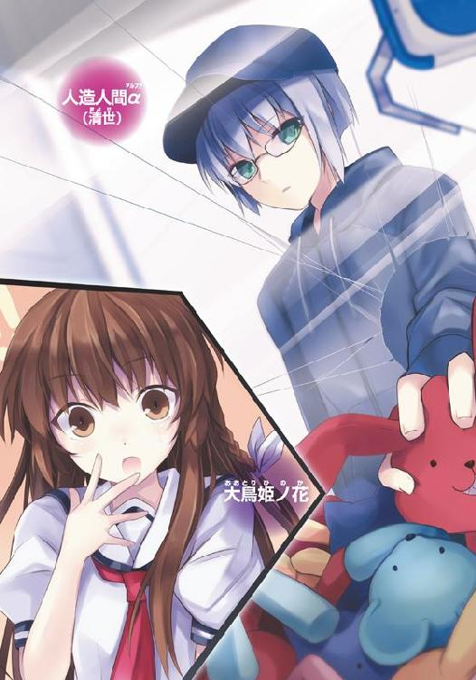
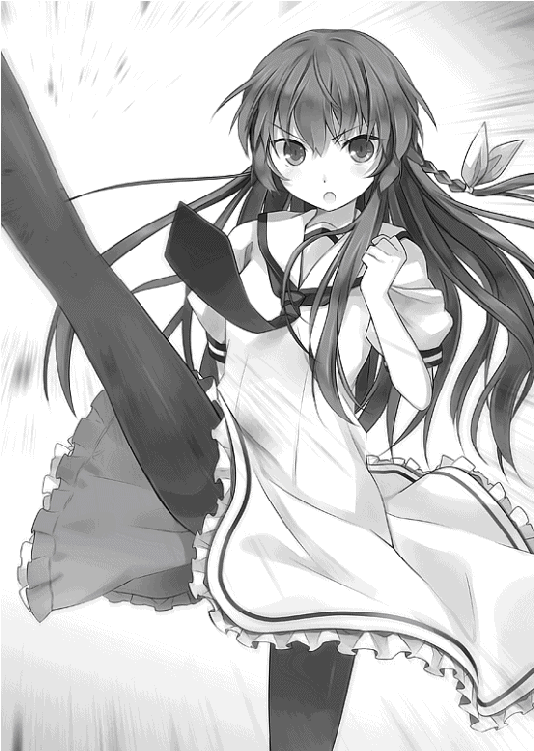
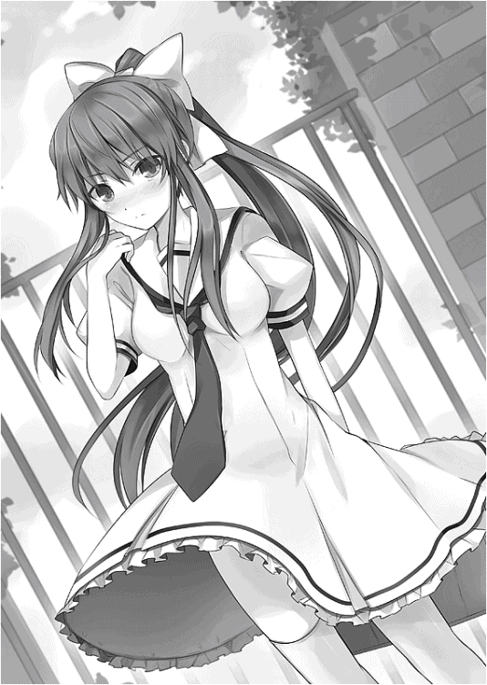
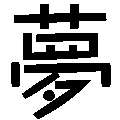

| 妹がゾンビなんですけど！ 2 (スマッシュ文庫) | |
| 伊東ちはや | |
| PHP研究所 (2011) | |

妹がゾンビなんですけど！ ２
著▼ 伊東ちはや
イラスト▼ ６Ｕ☆


妹がゾンビなんですけど！ ２ もくじ


「大鳥！ その調子で俺について来い！ 泣くぞ！ おぉおおお、青春！」
病気のために二日に一度のペースでしか登校できない――ってことになっている大鳥風貴は、四宮氷高に登校するたびに熱血教師の熱弁を聞かされるはめに陥っていた。
〝難病を抱えているのに、健気に登校してくるいじらしい生徒〟
現在の風貴の立場はそのように設定されているが、実のところは大嘘だ。
風貴は完全なる健康体である。
けれども、大嘘ついてまで二日に一度しか登校できない事情を、風貴は抱えていた。
（しかし......まぁ、なんでこんなに熱くなれるかね）
教壇に立って、さまざまなポーズを決めながら「凄いぞ風貴！ 負けるな風貴！ Ｆ・Ｉ・Ｇ・Ｈ・Ｔ！ ファイトだー！」なんて言っている教師に冷めた視線を送る。
しかし、大嘘をついてしまっている罪悪感から、風貴は強気な態度に出られない。
かくして熱血教師、山梨茂は風貴が登校するたびに喜び、両目から涙を吹き出しながら叫ぶのであった。
（うんざり、って言ったら俺、悪い奴か？）
山梨の大声に頭痛がして、額に手を置く。
大鳥風貴。十七歳。
ちょうど彼は朝のＨＲの時間を迎えていた。
山梨の感激の嵐が止まない......。
風貴の名を連呼して、落ち着かない山梨にうろんな視線を送っていると、
「演技でもいいから喜んでやれよ。心配しているってことなんだろうからさ......アレでも」
そんな風貴に声をかけたのは、目の前の席に座る親友の徹だった。
「けど、俺が登校するたんびにアレだろう？ 俺はどうリアクションとりゃいいんだよ？」
一度や二度ならまだしも、山梨は風貴が登校するたびにＨＲではしゃいでしまうので、クラスメイトにも害が及んでいる。ぐわんぐわんと響く大声は、至近距離から発せられ続けると脳がヤラレそうになるほど強烈なのだ。
徹はひょいと肩をすくめると、
「あの厚い胸板に飛び込んでやれよ。そして太陽に向かって走れ。そして燃え尽きろ」
アトムの最終回のように太陽に飛び込めってか？
徹はジト目で山梨を見る風貴に苦笑すると、
「......しかし、うるさいな」
鬱陶しそうに眉を寄せる。
「馬用の鎮静剤でも使うか？ それともスマキにして東京湾に沈めるか？」
徹は風貴の言葉に首を振ると、空を見上げた。
「ちげーよ。そっちの騒音じゃねー。外だ。外。山梨のことはこのさい、どーでもいいんだ」
窓際の席からは、外界がよく見える。
徹の視線が空に向けられたのを見て、風貴も視線を上にあげた。
蒼天だった。
雲ひとつない。
けれども、青い空には無数の機体が飛び交っていた。
風貴は目を丸くする。
黒みを帯びた緑色のヘリだった。見たこともないタイプだ。それが、無数に飛んでいる！
徹が眉を寄せたまま、不機嫌そうに言い放った。
「自衛隊のヘリだな。ありゃ」
山梨の圧倒的な大声に邪魔されて聞こえていなかったが、窓をそっと開ければ、爆音に近いエンジン音が響いていた。
「いったい何機飛んでんだ？」
「それよりか高度だよ。あきらかに低い。完全に最低安全高度違反だろ」
徹は言うと、バッグから一眼レフのカメラを取り出して、それを構える。慣れた手つきでピントを合わせると、徹は即座にシャッターを切った。山梨に気をとられていたクラスメイトたちもようやくヘリの爆音に気づいて興味津々で窓の外を眺め始める。
「徹？ お、お前、どうしたんだよ！」
風貴は驚いた。
美少女しかレンズに収めないはずの徹がヘリコプターの写真を撮るなんて、天変地異の前ぶれか。彼のターゲットは美少女のみ！ それが徹の哲学であったはずである。
徹はフッと鼻で笑うと、
「前方の、あの赤い屋根の上を飛んでるヘリの操縦士が女の人なんだ。グラサンかけてようがわかる！ 美人だ！」
そう言って望遠レンズまで取り出す始末。風貴は「そういうことか」と安堵したが、
「しかし、奇妙だな......自衛隊のヘリがこんな低空飛行してるなんてよ。それにこの数......よっぽどヤバイ事態なんじゃねーのか？」
徹がシャッターを切りながらつぶやいた。
見上げるほど高い丸天井。
四角い部屋の中には、家具はいっさいない。
真っ白な壁。
真っ白な床。
広い部屋の中で、少年は床に座り込んだまま動かない。
うずくまるようにして座っている少年の目は、じっと床を見つめたまま制止している。
その〝世界〟の入り口はひとつだけ。
パスワード入力に指紋認証、その後に第三者――管制室からの承認を得て、ようやく開く重厚なドアだけだ。
しかし、少年がドアから外へ出ることはない。
少年はただ、そこにいるだけだ。
壁に埋め込まれる形で設置された一ミリにも満たない監視カメラのレンズが、少年の挙動を二十四時間監視している。
あらゆる角度から撮影された映像は、モニター室の壁を埋め尽くす無数の液晶画面に映し出される。
「これは井関様！ ようこそいらっしゃいました！」
井関せつらは、父親とともにモニター室に案内されていた。
モニター室は同時に、この施設の管制室でもある。
中腰でへこへこと頭をさげながら現れた白衣姿の男に、
「いかがですか、〝α〟の様子は」
せつらの父親は威勢のいい声で言った。
「そりゃもう、大変素晴らしいですよ。すべて井関様のおかげでございますよ！」
白衣の男の返事に父親はフンッと鼻で笑って、悦に入った表情を浮かべた。そして、
「ま、当然ですかね」
と胸を張る。白衣の男もニコニコと愛想笑いを浮かべながらうなずいた。
「そりゃもう、完璧ですよ。何の問題もありません。ああ、さすが井関様だ！」
白衣の男の正体は管制室の総責任者。しかし、せつらから見れば、みすぼらしいばかりの男だった。四十を超えた痩せ男で、分厚い眼鏡の奥の瞳は黄色く濁っている。
「井関様のおかげですよ。まったく、本当に素晴らしい！ 井関様こそ我が国の宝、いわば人間国宝ですよ！」
せつらは、もはや嫌味にすら聞こえるようなおべっかを並べ立てる白衣の男に嘆息した。このやりとりは、いつものことながら、どうしても苦手だ。
せつらは髪を掻き上げると、未だにおべっかを続けている白衣の男に言った。
「〝α〟の診察を行うわ。準備してちょうだい」
まさに鶴の一声だった。
せつらの父親も余裕たっぷりの笑みをサッと隠して、遠慮がちに声をかける。
「そ、そうだな。せつら。がんばってくれよ。お、お前だけが頼りだよ」
必死に笑顔を取り繕う姿には、先ほどまでの横柄な態度は見当たらない。
実は、父親を支えているのはせつらである。せつらなくして、父親は社会的地位を保っていられないのだ。
「そうね。そうなっちゃうわね。別にいいけどね......。嘘だけど！」
せつらは娘に対して弱腰な父親に、あきれたような視線を送った。
厳重なセキュリティチェックを終えて、せつらは白い部屋に入った。名前すらない部屋。関係者は『聖域』と呼ぶらしい。しかし、本来の意味での神聖な響きはない。禁域と呼んだ方がわかりやすいのではないだろうか。だが、何を思ったところで、せつらには関係のないことだった。
せつらは少年に近づくと、手に持ってきたノートパソコンを床に置き、肩にかけていたショルダーバッグの中から荷物を取り出す。
すると、視線を下に向けてうずくまっていた少年が顔を上げた。
灰色の髪に、緑の瞳。
整った顔立ちは、まるでフランス人形のように美しい。
「赤い女」
静かで穏やかな声だった。けれども抑揚がなく、いっさいの感情を感じさせない声音に、せつらは表情を硬くした。
「赤い女。六百九十六時間、二分十五秒ぶりだ。お前はどこから来るんだ？」
彼の質問に、しかし、せつらは無言を貫く。
少年との会話は禁じられていた。それに、せつらも彼と会話することが大きな責任を負うことになると知っていた。彼とのコミュニケーションは最小限に抑えるべきなのだ。
「赤い女。訊きたいことがある。〝どーしようもない〟とはどういう意味だ？」
少年は、ノートパソコンの液晶画面に集中しているせつらに言った。
「......」
せつらは無言でキーボードを叩く。
「四時間五十一分四十七秒前に、ここに来た男たちが言っていた。『俺のかみさんは酒を飲んで帰ると怒るんだ。まったく、どーしようもないもんだ』――と。かみさんとは何だ？ 酒とは何だ？ 帰るとは何だ？ どーしようもないとは何だ？」
どうやら職員の誰かが、少年の前で禁じられている会話をしたらしい。
しかし、せつらは無言でバッグからＵＳＢの線を取り出し、特殊端末に繋いだ。端末からは無数の電極コードが延びている。
「作業を始めるわ」
せつらは硬い口調で言う。視線は少年に向けつつも、彼への言葉ではなかった。纏っている白衣の襟につけたピンマイク、その音声を拾う管制室へのものだった。すぐさま、耳につけたイヤホンから「了解」と返事が聞こえる。
せつらは少年の髪の毛を掻き分け、赤いネイルを施した指で、プラグを差し込むための穴を探す。
頭部に全五カ所。
せつらは素早く穴を見つけると、すべてにプラグを差し込んだ。
少年は寝起きの子供のような目でせつらを見ていた。ぼんやりと、そして、無表情に。
せつらはすぐさまノートパソコンに視線を戻す。そしてピンマイクにつぶやく。
「予定通りにチェックを開始するわ。作業終了時刻は現時刻から十五分後の予定」
イヤホンからは「了解」の声。
いつものやりとりだった。
少年は頭にプラグを差し込まれた状態で空を見つめていた。
しかし。
せつらの指がキーを叩き、ノートパソコンにインストールされていたチェック・プログラムが機動した刹那......。
「――っ！」
少年がわずかに目を開いた。
少年の瞳が緑から赤に変化する。
せつらはそれに気づかず、無言でパソコン画面を見ていたが、
「ん？ ......あ、あれ？」
異変に気づいて眉を寄せる。
『どうしました？』
管制室の職員がイヤホン越しに尋ねる。
「え？ あ、あの............え？ ええええ――っ!?」
せつらが、
「しまった！ これ違う！」
青ざめ、慌てて少年に目を向ける。大急ぎでプラグを抜こうとしたせつらだったが――。
けれども、もう遅かった。
少年はすっと立ち上がる。
「ちょ、ちょ、ちょっと......？」
せつらは目を丸くして少年を見上げた。
少年は、英語と数字の入り混じった暗号のような言葉を口にしている。
「......もしかして、ヤバイ？ ......ヤバイ？」
せつらが呆然と見守る中、少年は自ら頭に刺さったプラグを抜いた。
「ぎゃあああああああああ！ やっぱり！」
せつらの悲鳴に、ようやくただ事ではないと感知した管制室。
『井関教授、どうされたんですか!?』
「今すぐドアを外部からロックして！ いや、最初からロックされてるか......。違う！ とにかく、緊急事態発生！ どうしたらいいのよ！ どうしようもないけどね！」
せつらは慌てて立ち上がる。
「α、待ちなさい！ ちょっと座ってくれる？ 座りましょう！ 落ち着くのよ！ 違うの、違うのよ！ 間違えたわけじゃないのよ！ 間違えたけどね！」
「バグ発生中。対応不可能」
αと呼ばれた少年は抑揚のない声で言うと、再びブツブツと暗号のような何かを口にしている。
「ヤバイ！ これは暴走だわ！」
と、そのとき、少年が突然走り出した。ドアに向かって。
ムンクの叫び絵のように顔を歪めるせつらを無視して、少年は特殊金属でできたドアに手をかけた。重さ約五トン。ミサイル攻撃にも耐えうる素材で作られたそれを、いとも簡単に開く。ドアはねじ曲がり、騒音をたてて崩れた。
当然、セキュリティ・システムが異常を感知した。施設内にけたたましい警報音が鳴り響く。
イヤホンから、管制室の男の声が響いた。
『井関教授！ これはいったい!? なぜαが外へ!?』
「っ！」
せつらは呆然と、無残な残骸となったドアを見つめていた。その瞳には、最悪の事態を引き起こしてしまった後悔の涙が浮かんでいた。
『井関教授!? どうなってるんですか!? αは!?』
イヤホン越しに『捕まえろ！』『外へ出すな！』と叫ぶ声が聞こえてくる。
せつらは、
「データ間違えちゃっ....................................た」
愕然とつぶやいた。
『......え？』
「だから、データ間違えたの！ ミスじゃないのよ！ ミスだけどね！」
せつらはううっと涙ぐみながら足下を見る。
ノートパソコンが起動したまま床に放置されていた。その画面には――。
〝ゾンビ討伐データ。β用。端末へのデータ、バグ発生。送信未完了〟
の文字が浮かんでいた。
＊
警察車両が街中を行き交っていた。
空には自衛隊のヘリ。
路上には、あきらかに一般人ではない黒スーツ姿の男たち。
（朝より数が増えてる......）
黒スーツの連中も気になったが、空を飛ぶヘリの数が圧倒的に増えていた。
何よりもこの、ピリピリした雰囲気......。
学校を終えて、校門の外に出ると、そこには日常とかけ離れた光景が広がっていた。
風貴は徹に尋ねる。
「何なんだ......こりゃ？」
「知るかよ......。ちっ、男ばっかかよ」
徹は黒スーツの男たちに舌打ちしている。
風貴はあきれつつ、上空のヘリを見上げる。同じ場所をぐるぐる旋回しながら飛ぶヘリ。あまりに高度が低いせいか、ヘリの窓から双眼鏡で地上を覗いている迷彩服姿の男が目視できた。
「徹、なんか怪奇事件でも起きたのか？ おい、どう思う？」
「知らねーよ。ま、帰ってテレビ観りゃわかるだろうさ。何なら携帯からネット新聞のニュース・トピックでも見てみろよ。大事件が起こってりゃ、緊急速報ぐらい出てるだろう」
「携帯はもうチェックしたよ」
風貴は危機感のない徹にムッとする。
「こんなの絶対おかしいぜ？ ......つーか、何かの前ぶれか？」
ヘリの数。黒スーツの男たち。無数の警察車両。
あきらかに変だ。
嫌でも危機感を煽られる。
見慣れた平凡な町並みを異世界へと変えてしまった連中を見て、落ち着いていろという方が無理だ。
風貴は情報を求めて携帯とにらめっこを始めたが、それを見た徹が呆れたように言った。
「ま、風貴。俺やお前が騒いだところでどうにもならん。俺らは一介の高校生なる身分に過ぎないんだ。何か起きてりゃ、あとで正式発表があるだろうよ。それまで待て」
朝から低空飛行を続けている自衛隊のヘリ。授業を受けている間も気になって携帯で情報を探したが、大事件が起こったといったニュースはなかった。唯一騒いでいたのは、付近に住む住人ぐらいだ。しかし、インターネット掲示板に憶測を述べる者がいるぐらいで、何が起こったのか正確には把握できなかった。
「徹は気にならないのかよ？」
「気にはなるが、気にしてもなぁ。どーせ俺たちには選挙権すらないしー？」
徹はへらりと笑った。
風貴は緊張感のかけらもない徹に苛立ちを覚える。そのとき、
「まだいるのか!? 本当に凄いカワイイんだろうな!?」
「わからん！ とにかく急げ！ この目に真実を焼きつけるんだ！」
「信じることに意義はある！ 知らずに損するぐらいなら、確かめてから絶望したい！」
「そうだぁ！ 嬉しいんだ、生きる喜びだ！」
いったん帰途についたはずの男子生徒たちが一斉に校内へと走り込んできた。
「今度は何ごとだよ！ なぁ、徹。いったい何が起きてるんだ？ 俺、さっぱりわからないんだが......」
男子生徒の一人に肩をぶつけられた風貴は、遠ざかっていく学ランをにらみつける。
「おい、徹！」
返事のない徹に焦れて、風貴が振り返ると、徹は眼鏡男子を捕まえて何やら神妙な顔でうなずいていた。徹が「サンキュウ！」と眼鏡男子の肩を叩けば、眼鏡はのっけからトップスピードで駆け出していく。何か果てしない使命を帯びた戦士のような気が、眼鏡男子の背中からはほとばしっていた。
「徹、なんぞあったのか？」
「どこぞの上様みたいな口調で問うな。風貴、どうやら裏門に女神が舞い込んだらしい」
徹はニヤリと笑む。
「女神ぃ？」
はぁ？ と、風貴が顔を歪める。
「携帯、ちゃんと見てるか？ 特にメールとか......」
徹は風貴が手に持ったままの携帯を指さした。するとタイミングを狙ったように、風貴の携帯がメールを受信した。
送り主は大鳥姫ノ花。
風貴の妹である。
偏差値、格式ともに日本一の名門と名高い百合姫女子高校に通っている、一つ年下の少女だ。
「なんて書いてあるんだ？」
徹が風貴の肩に手を回しつつ、一緒に携帯画面を覗く。


徹は笑いを堪えたような口調で言った。
「なーるほど。やっぱり女神の正体は姫ノ花嬢らしいな？ どーすんだ、風貴」
「............徹。一緒に行くか？」
「ガッテン！」
どうやら、この状況にまったく動じず、のんきに構えていたのは徹だけではなかったらしい。
風貴はため息をつくと、ゆっくり踵を返した。
四宮氷高は男子の割合が九十パーセントを超える学校である。男女共学のはずなのだが、校内はいつも女子に飢えた男子どもで殺伐としている。女子は、何かあればパンチラを狙っている男子生徒を軽蔑し、頑なに接触を避けて身を守っているので、学内の女子には簡単には近づけない。
（ま、希少な女子をアマゾネスばりに強い女ばかりにしてしまったのは男子の責任なんだが......）
それよりも。と、風貴は裏門の人だかりを見てあきれ果てていた。
「近寄るな、変態どもが！ 
 ！」
！」
集まった男たち。その輪の中心に風貴の妹、姫ノ花はいた。
「ほ、ほ、ほ、本物だ！ 本物の百合姫女子の生徒さんだ！」
「か......可愛い！ うぉおおおお！ 名前教えてください！」
「写メ撮っていいっすか？ 靴下売ってくれませんか？」
四宮氷高の男子どもは血走った視線を送りながら、姫ノ花に迫っている。普段、女子という生き物から遠ざけられている反動だ。しかも、相手は清純潔白をモットーとするお嬢様校として名高い百合姫の現役女子高生。滅多にお近づきになんてなれない相手である。こんなチャンスを放っておくような男は四宮氷高にはいない。
（なんて哀しい光景だ）
風貴は姫ノ花に迫っている男子たち――同胞に哀愁すら覚えた。
「きぃいいい！ あっち行け！ ！」

姫ノ花が不用意に近づいた男子生徒の股間を蹴り上げた。途端、金切り声が周囲に響く。
「何度も言うけど姫ノ花......そりゃ撲殺じゃなくて蹴りだ、蹴り」
風貴は独りごちた。
股間を一撃されて、気絶した生徒が姫ノ花の足下に転がる。
姫ノ花は「！」と言い捨てて、犠牲者を再び蹴っ飛ばした。
一瞬、ドン引きした男子生徒たちだったが、けれども、彼らの情熱はこの程度では冷めない。
再び、姫ノ花に迫っていく。
「お願いです。僕たちと仲良くしてください！ 後生です！ 病めるときも健やかなるときも、一生を捧げます！」
姫ノ花は怒りを隠そうともせず、彼らをにらみつけながら、腰に手を当てて仁王立ちした。
「うるさいわよ！ このウジ虫どもが！ 私の素敵なお兄ちゃんが来るんだから、あっち行って！ っていうか、消えて！ 消滅して！」
怒号を発する姫ノ花。しかし、怒った顔も可愛いなんて男子たちはどよめく。なぜならば、四宮氷高の女子は〝男子に対して無反応で過ごす〟という冷徹非道な護身術を身につけており、男どもの言動・行動に反応すら見せないのだ。彼らは怒ってくれるだけでもありがたいのだ。
「おい、どうにかしてやれよ。このままじゃ、姫ノ花ちゃん爆発するぞ」
徹が言う。
「ああ。......そうだな」
風貴は嘆息すると、人垣を掻き分けて妹に近づく。
すると、群れる男子の中から兄の顔を発見した姫ノ花が、即座に笑顔になった。
「お兄ちゃん！」
いきなり胸に飛び込んでくる妹に、
「わざわざ四宮氷高まで来なくても迎えに行ったのに。......つーか、なんで来たんだ？」
風貴はたしなめるように言う。
「だって、だって、校門で待ち合わせって一度してみたかったんだもん！ しかも、正門じゃなくて、あえて裏門で待ち合わせってところがキモ！ 三角関係の果てに不倫がバレてしまって、それでも貴方が好きだからついていくって決意した女......みたいな？ 
 ！」
！」
「どんな設定だよ、それ！」
「昨日の深夜やってた、昼ドラの再放送！ お肉食べながら見たの！」
笑顔で答える姫ノ花に、風貴はげんなりと肩を落とした。自分が寝ている間に余計な知識を蓄えたらしい。
「おい、大鳥の妹らしいぞ！」「なるほど、納得の遺伝子だ！」「今すぐ同胞にメールしろ！ 大鳥風貴レベルの美女がいたと！」「やっぱり、秘宝は実在したのか！」「この世も捨てたもんじゃない！」「俺の宇宙が泣いているぜ！」「今こそ、生き恥をさらすときがきた！」
様子を見守っていた男子たちが叫ぶ。
「大鳥！ その子を紹介してくれ！ いいや、お義兄さんっ!!」
と言いながら、男子代表と思われる少年がずいっと前に出た。
「誰がお義兄さんだ！ 離れろ、見せもんじゃねーんだよ！」
風貴は血走った眼で一喝する。
「大鳥......俺たち四宮氷高の男子一同は、青春的恋愛的運命の可能性が絶望的な敗北者として血反吐を吐いてきた。大鳥、お前の女顔を見て我慢しようと決意した勇者もいる」
真顔で語り出す男子代表に、風貴は「おい」とツッコむが、
「しかし、今、厚き雲間から光が差した。それが風貴、貴様の隣に控える姫君だ。......是が非ともお知り合いになりたい！ 紹介しろ！」
じりじりと迫り来る男子たち。
徹はケラケラ笑いながら様子を見ている。助けるつもりはいっさいないようだ。
風貴は、本気と書いてマジな表情で姫ノ花に迫り来る男たちに舌打ちした。逃げられそうにない。いや、相手は逃がす気がない。
こうなったら、もはや次にとる行動は決まってくる。
「姫ノ花、走るぞ」
「え？」
驚く姫ノ花の手をとって、風貴は猛ダッシュで裏門に向かう。
「ちっ、逃げたぞ！」「追え！ 逃がすな！」「今日の俺たちはちょっぴり熱いぜ！」
男たちが一斉に後を追う。
「がんばれよぉ～！」なんて、のんびりした声が怒声にまじって聞こえた。徹だった。
姫ノ花はぎゅううっと風貴の手を握り返しつつ、微笑む。
「お兄ちゃんと愛の ！ これこそ 今から私たちの新しい世界が始まるのね！ さようなら神様！ こんにちは新世界！」
！ これこそ 今から私たちの新しい世界が始まるのね！ さようなら神様！ こんにちは新世界！」
驚喜に胸を躍らせる姫ノ花に、
「お前はアホか！」
風貴はツッコみながら、必死に足を動かした。
まっすぐ家に向かおうとするが、背後から迫りくる男たちの気配を感じ、考えを改める。家をつきとめられたら面倒なことになる。
「くそぉおおお――！」
風貴と姫ノ花は裏門を出ると、国道沿いの道をひた走った。家から真逆の方向に進路を決める。
「しつこいな！」
しかし、逃げども逃げども。男たちは足並みを揃えて追ってくる。
「お兄ちゃん、大丈夫？ 汗だくだよ？ 苦しそう......。ちょっと可愛い！」
息も絶え絶えに走る風貴とは対照的に、姫ノ花は平然と隣を走っている。兄妹の手はしっかり握られたままだ。
「とにかく逃げ切るぞ！ 姫ノ花、がんばってついてこいよ！」
自分だけがへばっているのが恥ずかしくて、風貴は強気な発言をする。
「待て、大鳥！ その秘宝だけは逃さぬぞ！」「そうだ、そんな可愛い子を逃がしたら男の恥だ！」
まだまだ男たちがついてくる。
「お兄ちゃん。なんなら、あの人たち、まとめて崖から突き落とせば？」
「崖なんてどこにあるんだよ！」
「じゃ、全員警察に突き刺しちゃおうか？」
「それを言うなら突き出すだろうが！ なんで刺すんだよ！」
風貴は走った。
姫ノ花は嬉しそうだ。
（なんでこんな目に！）
風貴は己の立場を心から呪った。
＊
風貴の妹、姫ノ花はゾンビである。
事故死した姫ノ花がゾンビとして生き返ったのは、彼女が通う百合姫女子高校の科学者、井関せつらの発明した薬の効果によるものだった。
しかし、ゾンビとなった妹には、重大な問題があった。
肉を食わないと空腹状態に陥り、危険な捕食香を出す。
心臓を貫かれても驚異的な再生能力でもって......死なない（腕を切ってもすぐ再生）。
常識外れの再生能力を活かし、今は自分の腕を食べて状況を落ち着かせている。
すべては姫ノ花が生きるために必要な力であり、また、おおいなる欠点でもある。
ちなみに捕食香とは、捕食対象である人間に〝姫ノ花に食べられたい！〟と思い込ませる絶対的な支配を促す謎の香りだ。
「ここまで逃げれば、さすがに......はぁはぁ......ついて来ないだろうな」
およそ一時間後。
日も傾こうとしている中、風貴は全身汗だくになった状態で茂みの中にぶっ倒れていた。
二人は全力疾走の末、ようやく男たちから逃れることができた。場所は公園。家から真逆の方向にあり、普段は近寄ることもない場所だった。
「お兄ちゃん、汗ばんでる。色っぽい。食べちゃいたい！」
「や......やめろ......あ、ほ」
仰向けに倒れる風貴を覗き込むようにして顔を近づけてきた姫ノ花を、風貴は軽くこづく。
「でもちょっとお腹すいたなぁ。運動イコール空腹。 」
」
姫ノ花は言うと、風貴の頬にすべすべのほっぺをすり寄せてきた。まるで猫のような動きに、風貴は苦笑する。
「おい、馬鹿。やめろ」
これじゃイチャついてる恋人同士のようだと風貴は顔を赤くする。
「今の姫ノ花はゴロゴロだもん！ にゃーだもん！」
「おい......ひの......か、うぐっ!? ぎぁあああああああああ――っ！」
くすぐったがっていた風貴だが、カプリという音とともに首筋に激痛が走って叫ぶ。ドッと吹き出す血液。じくじくと熱を帯びる傷口......。
「姫ノ花――っ！ お前、何するんだ！ アホーッ！」
急いで起き上がった風貴だが、
「お兄ちゃん。ちょっとだけ、食べさせて」
にっこり微笑む姫ノ花。
その瞳は狂気に染まっていた。

「ひ、姫ノ花......」
うっと風貴は息を呑む。途端、目の前が揺らいだ。猛烈な甘い香りが鼻孔をくすぐる。
（捕食香だっ！）
普段、姫ノ花は自分の腕を食べることで空腹を補い、捕食香の放出を止めている。しかし、いったん空腹となれば本人の意志とは関係なく、捕食対象――人間にとって魔の香りが発動する。
「ぐぅうううう！」
風貴は急いで鼻をつまんだ。
放り投げていた鞄に目をやる。中に、捕食香を抑える効果のある薬〝ストップ・スメル〟が入っている。早くそれを姫ノ花に吹きかけないと、捕食香の効果により「自分を食ってくれ！」と身を捧げることになってしまう！
「甘い。甘い～！ お兄ちゃんの血...... 」
」
ペロペロと風貴の首筋を舐める姫ノ花。自分の八重歯で傷つけた傷口に、ちろちろと舌を這わせている。
「くっ......！」
くすぐったさと、傷口を舌先でえぐられる痛みに風貴は目を細めた。
「びのが、いまずぐやべろ（姫ノ花、今すぐやめろ）！」
鼻をつまんだまま、風貴は妹の体をそっと押す。しかし、細い体は風貴にぎゅうぎゅう抱きついて離れない。
「お兄ちゃんの綺麗な生肉。甘くて、やわらかくて、きっと美味しいよね......」
姫ノ花の腹がグーッと音をたてた。
「ひぃいいいい――っ！」
風貴は命の危機を悟って鳥肌をたてる。
早く、早くなんとかしなくてはっ!!
「姫ノ花、腕食え！ 腕ぇ――っ！」
自分の腕を食べろと促す風貴だが、
「うん。お兄ちゃん」
聞いちゃいなかった。
「きゃぁああああああああああああああああああああああ!!」
風貴は少女のような甲高い叫びを上げると、同時に姫ノ花を突き放し、茂みの中から飛び出る。
「きゃっ！」と姫ノ花は短い悲鳴をあげて茂みの中、雑草が生い茂る土の上に転がる。そのさい、裾をはためかせることすら禁じられている百合姫女子の純白の制服――スカートがめくれ上がった。
「すまん、姫ノ花！ おおおお、俺がここで見張ってるから早いところ腕食え！」
風貴は太ももの付け根を見て顔を真っ赤にした。
悲しいかな、どうしてもソコに目がいってしまうのが男のサガである。黒いタイツに包まれた太ももは細くしなやかに伸びている。その下に真っ白な肌が隠れていると思うと、妹とはいえ......。
（くそ、これじゃウチの学校の野郎どもと何も変わらねぇじゃねーかっ！）
兄として、いかがなものかと反省した風貴は自分に腹を立てて頭を掻きむしる。
「お兄ちゃん。酷いよぉ。............でも、 姫ノ花、お兄ちゃんになら何されても大丈夫。お兄ちゃんのドメスティック・バイオレンスなら、いくらでも受け入れちゃう！ 甘美なる甘い鞭の裏に、お兄ちゃんの愛があると思えば...... 」
」
姫ノ花は長い髪を掻き上げると、なぜか嬉しそうに、
「これがＭっ子属性の基本なのね 私、またひとつイケナイ階段、上がっちゃった！」
なんて言って、頬を真っ赤にさせている。
「なに言ってんだ！ とにかく早く腕を食え！ 香りが......うぐぅ」
風貴は、風に乗って舞う捕食香に再び鼻をつまむ。この甘い香りには逆らえない。
「お兄ちゃんの言うことは だけど、私、ナイフ持ってないよ？ 私の学校、二週間に一度、制服と荷物検査があるの。それが今日で......」
姫ノ花は「うー、お腹すいた」などと言いながら、困ったように眉をハの字にした。つまり、腕を切るための道具がないと言いたいらしい。
「くそっ！」
風貴は舌打ちすると、せめて香りだけでも抑え込もうと自分の鞄に手を伸ばす。自分の鞄の中には〝ストップ・スメル〟が入っている。香りを一時的に抑えられる代物だ。
「動くなよ！ そこを動くな！ じゃないと、お前のこと馬鹿って言うぞ、馬鹿って！」
「きゃう！ 今度は言葉の鞭！ うううううぅ――!! 今日のお兄ちゃんは鬼畜だぁ！」
姫ノ花は嬉しそうに体を揺らす。
（この馬鹿！）
風貴はそれどころじゃないんだと憤りつつも、しかし、無防備に微笑んでいる妹の顔に脱力した。どんなに手間がかかろうが、やはり可愛い妹なのだ。
風貴は捕食香に意識を奪われまいと、必死に姫ノ花の傍に落ちている鞄に手を伸ばした。
「あ、お兄ちゃん、いいこと思いついた！ 私、指から食べればいいんだ！」
なるほど、腕を切り落とさなくても、痛みを感じることがないのだから、そのまま指を口にすればいいのだ。風貴は投げやりに叫んだ。
「ああ、やれ！」
しかし、空腹が満たされるまで捕食香は出続ける。風貴は〝ストップ・スメル〟を利用しようと鞄からそれを取り出した。
「うーん。美味しい！」
姫ノ花は指を食べては、すぐに再生して生えてくる指にカプリと噛みついて......を繰り返している。
風貴が、そんな妹に向かってスプレーを噴射しようとした、まさにそのときだった。
「ゾンビを発見。......討伐する！」
日没を迎えて暗い影を落とす住宅街の道に、ふいに、抑揚のない声が響いた。
「っ!?」
風貴は驚いて振り返る。
（しまった！）
そして、周囲の警戒を怠ってしまっていたことを後悔する。
声の主は少年だった。
「目の前の対象を人間と確認。安否の確認をする。......身体、および精神状態に損傷はないか？」
少年は音もなく、気配もなく、風貴の背後に立っていた。
灰色の髪に、緑の瞳。
目を奪われるような端正な顔立ちであった。
「なっ......」
風貴は息を呑む。
黒いベレー帽に、サイズの合わないダボダボの迷彩服を着込んでいる。足下は当然のように軍靴であった。
美麗だが、無表情で生気のない顔。淡々とした内面が視線から伝わってくる。
しかし風貴は、少年の突然の登場や、華麗極まる顔の造形や、言葉や、雰囲気ではなく、別の部分で大いに驚いた。
（ゾンビ......と、今、言わなかった!?）
ゾンビを発見......。少年は確かにそう言った。
「い、今。お前......なんて言った？」
ごくりと風貴は喉を鳴らす。
姫ノ花がゾンビであるというのは、自分とゾンビ化の薬を作ったせつらしか知らない事実である。ゾンビである姫ノ花自身でさえ、そのことを知らないのだ。姫ノ花には自分を難病だと信じ込ませてある。「お前はもう死んでいる」なんて、彼女にそんな重い通告をできなかったからだ。
しかし、今。少年は確かにゾンビと言った。
「聖母以外からの質問の入力は認証されない。貴殿はβの出力に答えろ。精神および身体に損傷はないか？」
「......」
あい変わらず起伏のない声で問いかけてくる少年。
風貴は意味がわからず困惑した。
「応答無し。......放心状態と判定。保護対象とする」
少年は、言葉を失っている風貴に向かって言い放つと、
「ゾンビを討伐する」
そうつぶやいて風貴の横を通り過ぎた。足音ひとつ聞こえない。
「――っ！」
不意をつかれた風貴は慌てて背後を振り返った。
「......誰よ、アンタ。私のお兄ちゃんに勝手に声をかけて！ 地に額をこすりつけて謝れ！ お兄ちゃんは私の――」
姫ノ花は、茂みの中に座り込んで指をしゃぶりながら少年をにらんでいた。
「生肉を口に含んでいる。......ゾンビと判定。殺処分とする」
少年は姫ノ花の言葉を遮ると、無表情に姫ノ花をじっと見ていた。
「待て、お前誰だ！」
風貴は急いで謎の少年の肩を掴もうとする。しかし、少年が動きだす方が、ほんの一瞬早かった！
「栄光なる死に背きし者よ。βが正常なる死を与える！」
少年が姫ノ花に突進した！
「え？」
姫ノ花が目を丸くしている。
「姫ノ花――っ!!」
風貴が叫んだ瞬間。
ドシンッ！ と、地面が軋むような音が鳴り響いた。
「......」
一瞬の静寂がその場を満たす。
風貴は少年を止めようと手を伸ばした状態で固まった。
姫ノ花も、何が起きたのか理解できずに座り込んでいる。
少年は、姫ノ花の背後に生えていた街路樹の根っこに凄まじい蹴りを入れていた。
「......避けたか」
少年は無表情に姫ノ花を見下ろす。
......。
......。
風貴は瞬きをした。
（何してるんだ......アイツ）
姫ノ花はさっきから一ミリたりとも動いていない。少年が勝手に姫ノ花へ向かって突進し、そしてなぜか街路樹へ蹴りを入れた。完全なる一人芝居である。誰も邪魔してないし、姫ノ花は避けてもいない。
「しかし、βの行動に無駄はない。的確な判定のもと、次の行動へ移行する！」
少年が片腕を大きく後ろへ引いた。
そして、姫ノ花に向かって拳を突き出す！
ドンッ！ 重い衝撃音とともに土煙が上がった。
けれども、少年の拳は姫ノ花から一メートルほど離れた地面に向かって振り下ろされていた。
「......また避けたか。......見事だ」
少年は土中にめり込んだ拳を引き抜くと、顎を軽く上げて姫ノ花を見下ろす。
姫ノ花はキョトンと少年を見上げ、ゆっくりと風貴に視線を向けた。
「......お兄ちゃん。この子、馬鹿だよ！」
少年を指さして言った。
「姫ノ花、ダメだ！ 本当のことは相手を傷つける！」
風貴は急いで姫ノ花に駆け寄ると、そっと肩を抱いて立ち上がらせる。
「きゃ」と姫ノ花は喜んだが、風貴はキッと少年をにらんだ。
「で？ なんの冗談だ。何が目的だ？」
風貴は妹を背中にかばいつつ、少年に向かう。
（よくわからん奴だが......。しかし、確かにさっきから姫ノ花のことをゾンビと言ってやがる！）
風貴は奥歯を噛みしめる。
「お、お、お兄ちゃんが私を守ってる！ わ、私、ヒロイン？ もしかして、私、今、幸せ？」
背後から歓喜に打ち震える妹の声が聞こえるが、今はツッコんでいる場合ではない。
けれども、姫ノ花の言葉に風貴は内心安堵した。どうやらゾンビという言葉には反応していないようだ。未だに、自分がそうなのだと気づいていない様子である。
（突拍子もなさ過ぎて、気づくわけないか......それよりも）
この状況はマズイ。
これ以上、この謎の少年にゾンビという単語を連呼されたらたまったものではない。頭のいい姫ノ花が勘づいてしまうかもしれないし、他にも余計なことを喋りそうだ。
そもそも、姫ノ花がゾンビだと知っている時点で風貴としては油断のできない相手なのは間違いない。
「......逃げるぞ」
風貴は姫ノ花にそっと耳打ちする。
「え？ どうして？」
姫ノ花は不思議そうに風貴を見上げたが、
「いいから。行くぞ。変な人に絡んじゃダメだ」
風貴は言い聞かせるように言う。すると姫ノ花は素直にうなずいた。
「う、うん......わかった。そうだね！ 早く帰ろう！」
「よし。じゃあ、行くぞ」
妹の手を引いて風貴はその場から離れようとするが、
「うっ!!」
姫ノ花から甘い香りがして思わず手を離した。
（しまった、捕食香のこと忘れてた！）
全人類を惑わす凶悪な香りが妹の体からほとばしっている。うかつに近づくと一瞬にして精神が冒される。逃げ出そうとする出はなをくじかれた風貴たちに、
「待て、逃がしはしない！」
少年が無表情のまま突進してくる。
「殺処分！」
軽く地を蹴って、少年が飛躍した。今度こそはと言わんばかりに空中で足を大きく振って、姫ノ花を蹴飛ばそうと足を引く！ しかし......。
「うごぉおっ！」
風貴は驚いて身をそり返した。刹那、黒い残像――ブーツの底が通過する。
「お兄ちゃんっ！」
姫ノ花の叫び声が響く。
「何するんだ、この馬鹿が！」
すんでのところで少年の蹴りをかわした風貴だが、今のは危なかった。
「お兄ちゃん、血、血！ 綺麗な血が出てるっ！」
姫ノ花が泣き声に近い声を上げる。少年のブーツの底は、風貴の顔をかすめ、その頬に一本の傷をつけていた。つーっと、血が頬を流れ、顎先から落ちる。
「お、お、お兄ちゃんの顔に傷が！ 綺麗な顔に傷が！ 女神のような顔に傷が！」
姫ノ花は真っ青になって喘ぐ。
「誰が女神だ！ それに綺麗って言うな！」
風貴は騒ぐ妹にツッコみつつ、手の甲で血を拭う。
少年は己の犯した行為に驚いているようだった。
「保護対象が損傷。......想定外の事態発生。緊急事態と判定。......失態」
無表情に言う少年に、わなわなと震えだした姫ノ花が、
「何が失態よ！ 今のは無礼千万の迷惑行為よ！ いいえ、殺人罪だわ！ 死刑よ！ 獄門に処してやる！ よくも私のお兄ちゃんに！ 」
ドスの利いた声を上げると同時に、持っていた鞄を両手で振り上げて襲いかかった。
「馬鹿、馬鹿、馬鹿、馬鹿ぁあああああああああ！ 絶対に許さない！」
少年に襲いかかる姫ノ花を見て、風貴は慌てて止めようとするが遅かった。姫ノ花は少年の前に立ちはだかると、有無を言わさずその頬を打つ。平手打ち。ビンタである。
「今すぐ土下座しろ。この外道！」
姫ノ花は殺意を込めた瞳で恫喝する。
「......拒否する」
少年は無表情のまま姫ノ花を見下ろすと、
「お前は死ぬ運命にある。運命に従え」
姫ノ花の胸ぐらを掴むと、細い体をひょいと持ち上げてしまった。
「ぎゃうっ!?」
姫ノ花は驚いて目を丸くしたが、
「くっ......！」
苦しそうに顔を歪める。
「何してんだ！」
風貴は妹のピンチに激高すると、少年に駆け寄り、その体に体当たりした。
「ふぇ......っっ！」
姫ノ花はその場に崩れ落ちて尻餅をつく。
少年は、後方へ突き飛ばされた。
「大丈夫か!?」
風貴は妹を即座に立たせると、背中にかばうようにして振り返った。
「......想定外の妨害を確認」
少年は、先ほど自らが蹴飛ばした木の幹に激突していた。ふらふらと、今にも後ろに倒れそうな体勢で、それでもまだ立ち上がろうとする。
「姫ノ花、先に逃げてろ!!」
「やだ！ お兄ちゃんに怪我させたんだもん。こいつ絶対に許さない！」
姫ノ花は風貴の腕にしがみつくと、ぷぅっと頬をふくらませた。
「うぐっ......！」
姫ノ花の捕食香に、風貴は軽いダメージを負った。急いで鼻をつまむが、脳髄まで浸透してくる甘い香りに翻弄される。
（しっかりしろ、俺――!!）
妹から離れようとするが、姫ノ花はぎゅうぎゅうと腕に抱きついてくる。
「人間。これ以上βの邪魔をするな。妨害行為をする者は異端者として聖母に報告せねばならない」
少年はゆっくりと立ち上がった。
ベレー帽が頭からずり落ち、土の上に転がる。
夜の闇が辺りを包みかけていた。
（なんだ......コイツ、なんで......っ）
風貴は、狭くなる視界の中、うっと息を呑む。
少年の緑の瞳が明るく光っていた。猫の目のように、爛々と。
「ゾンビに死を！ 人間に未来を！」
風貴が捕食香に気をとられている間に、少年が再び襲いかかってくる。
けれども......。
彼の拳が向かった先は、風貴でも姫ノ花でもなく、再び土の中だった。
風貴たちはもちろん無傷のまま、立ち尽くす。
「......なぜだ」
少年は自分の行動に己自身が理解できないといったふうだ。
腕の半分まで土にめり込んでしまった少年。
「やっぱ、あの人、痛い人かな？」
姫ノ花が呆気にとられてつぶやく。しかし、
「お、おい！ 後ろ後ろ！」
風貴は少年の背後......ゆっくりと巨体を傾ける街路樹を見て叫んだ。メキメキと音をたてながら、街路樹が少年に向かって倒れてきたのだ！
「回避......不可能」
少年が我が身に襲いかかりつつある悲劇に気づいたときは、すでに遅かった。街路樹は少年の体を巻き込んで倒れてしまったのだ。巨大な地鳴りとともに、土煙が辺りに散乱する。
「ケホッ！ ......くそ、何なんだよ！」
風貴は土煙にむせ返りつつも、急いで倒れた街路樹の方に向かう。
「お兄ちゃん!?」
姫ノ花の声に「そこにいろ！」と応えながら、少年がどうなったかと風貴は駆け寄った。
土煙の中、ようやく見つけた少年は哀れにも、完全に下敷きになっていた。街路樹の下から右腕が飛び出ている。安否は不明だった。だが、重傷なのは間違いない。
「今退けるからな、動くなよ！」
風貴は急いで倒れた街路樹を持ち上げようとした。
「くそっ！」
少年の上に横たわった大木は重く、風貴の力では、とてもじゃないがどけられそうにない。といって、助けを呼ぼうにも周囲に人はいない。
「姫ノ花、誰でもいいから人を呼んでこい！」
風貴は叫びつつ全身の力を込めて木を持ち上げる。しかし、大木はびくともしない。
「デ......タ......は......そ......ん......い......い......」
そのとき。下敷きになった少年が声を発した。
「生きてるのか!? 待ってろ！ 今、助けを......」
風貴は急いで身をかがめる。
「......聖母......応対......入力......」
少年の顔は見えなかった。完全に、横たわった街路樹の下だ。しかし、右手がガクガクと不気味に動いている
「......！」
風貴は言葉もなく、目を見はった。
少年は、埋まっていた左手一本で大木を持ち上げ、手の平に幹を掴んだまま立ち上がったのだ。
レスキュー隊に電話をかけていた姫ノ花も、呆然とその光景を見つめる。
「......β......は............ある......ふぁ............べ......た？」
少年がひょいと軽い調子で幹を投げる。ドシンッ！ と音をたてながら、それは少年のすぐ横に倒れる。紙クズでも投げるように簡単に。
思わぬ怪力に風貴は我が目を疑った。
少年は――。
「障害発生。名前を入力してくれ......聖母」
言葉を最後に、緑の瞳が光を失った。瞬間、ゆっくりと少年が倒れる。
「うおっ!?」
風貴は受け止める形になって少年の体を抱きしめた。意外にも、その体は重かった。
＊
大鳥家。
風貴は二階の自室にて、知り合いの魔女――せつらに電話をかけた。
『なんだ。風貴か？ ......な、頼む。今、あたしに優しい言葉をかけてくれ。嫌ならべつにいいんだ。傷つくけどね！』
何か落ち込むことが起きたらしい。泣き続けたのか、声が枯れている。
「今、俺も俺でそれどころじゃないんだ、聞いてほしい話が......」
しかし、せつらは、
『あたしが悪いんだぁああああああああああ!! うわぁ―――――――――んっ!!』
と泣き出す。
こりゃ、話を聞いてやらないとどうにもならんな。
「何があったんだ？」
風貴はボキボキと肩をならしつつ、すすり泣いているせつらに声をかけた。
『極秘だ。あたしが泣いている理由はお前みたいなガキに言えたことじゃないんだよ......。どうしよう。お前なんか嫌いだ。好きだけどね！』
いつものことだが、意味不明だ。
「仕事で嫌なことでもあったのか？」
『そうなんだよ！ 犯してはいけない失敗をした。取り返しがつかない。今からいろんな人に怒られる。......嫌だよ。仕方ないけどね！』
「そうか......。ま、頭下げて誠意見せれば、どんな失敗だって許してもらえるだろうよ」
人ごとのように言ってしまうが、風貴としてはまともに答えたつもりだった。
『それで済めば、あたしだって天才科学者だ。平気だ。そうじゃないから泣いてるんだよ。どーしたらいいのさ。どうにもならないけどね！』
「元気出せよ。お前、優秀な科学者なんだろう？」
『......そ、そうだな。あたしは優秀だ。だけどな、風貴。ずば抜けて有能な者ほど、転落したときの衝撃は激しいもんなんだ。今までのあたしの人生、振り返れば敵だらけ。誰かが手を貸してくれるなんて思ったら最後。突き落とされる先は地獄の果てだ』
せつらはずびずびと鼻をすすると、
『じゃ、これで電話を切る。この電話、盗聴されているかもしれないからな......』
「は？ え？」
一方的に告げると、勝手に通話を終えてしまった。
「なんだったんだよ......あいつ」
風貴は最後の言葉が気になったが、
「こっちの話も聞けってんだ!!」
苛立ちながら、自分のベッドを見る。
寝息も立てずに少年が横たわっていた。
「こいつ......何者なんだろうな」
風貴は独り心地につぶやく。
少年が気絶してから大変であった。
姫ノ花は捕食香をまき散らしながら「離れろ――!!」などと叫びつつ近づいてくるし、少年は起きないし......。
姫ノ花には〝ストップ・スメル〟を吹きかけてなんとか香りを抑え、少年の方は......。
（結局、持ち帰ってしまった）
身長は風貴と同じぐらいなのに、やたら体重があって、背負って帰るのは辛い作業だった。途中でバスに乗ることができたのが幸いである。
バスの中で、少年を病院へ送り届けるべきか......。親元に連絡すべきか......と、迷ったが、結局、少年の所在を示すものを彼が所持してなかったことと、おそらくまともな境遇で育った少年ではないことを考慮して家まで運ぶこととなった。
（とにかく、こいつが起きたら聞かなきゃならねぇな）
風貴は眠る少年に近づき、顔を覗く。フランス人形を思わせるような端正な顔立ちだ。
（けど、こいつは姫ノ花がゾンビと知っていた）
ゾンビのことを知っているからには、絶対にあいつの関係者だ。
ゾンビ化の薬を作ったのはせつら。そして、姫ノ花がゾンビだと知るのは風貴を含め、せつらのみである。となると、自動的に少年の正体を知る者は絞られる。
（やっぱ、せつらしか考えつかないんだよな......）
風貴は再び携帯をいじる。せつらに向けて発信。しかし、コールが鳴る前に切れてしまった。
「着拒かよっ!?」
まさか、と思うが何度かけても同じで、メールを送っても返事は来なかった。
風貴はがっくりと肩を落とした。
理由はわからないが着信拒否されてしまったようだ。
「まったく......」
これで伝はなくなったと、風貴は哀しい気分で少年の寝顔を見る。起きる気配はない。
（とにかく、こいつが起きたら何がなんでも聞き出してやる）
なぜ、姫ノ花を襲ったのか。
せつらの命令とはとても思えない。
（何者なんだ）
結局、少年の正体を知ることが唯一の解決策だという考えに落ち着く。いきなり襲いかかってきたぐらいだから、簡単に口を割るとは思えないが......。
（それでも、姫ノ花の存在を脅かす存在なら、俺は......！）
風貴はきつく少年をにらむと、うなずいた。
一階のリビングから、いい香りがしてきた。カレーの香りだ。今日はカレーライスらしい。
家に戻った後、自分の腕を食べて空腹を落ち着かせた姫ノ花は、風貴のために夕ご飯を作っている。しかし、時折「お兄ちゃん、大丈夫!?」と叫びながら何度も様子を見に来て、そのたびに「起きたら覚えてろ！」などと寝ている少年をにらみつけたりと忙しい。
「ただいま」という疲れた声が、玄関を開ける音とともに響いたのは間もなくのことだった。
母親が帰宅したらしい。
「ママ！ おかえりなさい！ 」
姫ノ花がパタパタと走っていく音が聞こえる。
風貴たちの母親は一流の医師で、たいへん多忙な日々を送っている。以前はほとんど家に戻らなかったが、最近はなんとか時間をとって帰るようになった。帰宅した翌日は母親お手製の朝食が食べられる。母親が家庭にいっさい関わらなかったころ、ほぼ放置状態で育てられた風貴たちにとって、母親が朝食を作ってくれる朝は特別な日だ。しかし、最近、母親がホットケーキしか作れないことが判明したが......。それでも、家族で食卓を囲むのは楽しいひとときである。
（帰ってきたか）
風貴は少年が気がかりだったが、顔を見せておくべきだと思って玄関に向かおうとした。風貴としても、「おかえり」という、たったその一言を言うことが、くすぐったい気分でもあるが嬉しいのだ。
「聖母......応答......を」
しかし、いざ一階に向かおうとした風貴の耳に、少年の声が聞こえた。
「起きたのか!?」
急いで振り返る風貴の目に、
「聖母......」
ゆっくりと瞳を開ける少年が映った。
少年は虚ろな眼差しで空を見上げ、しかし、視界に風貴の顔を認めると、
「聖母......応答を......入力を......」
と、誰かと勘違いしているようだ。
「俺はマザーじゃない......。ここがどこだかわかるか？」
「......」
少年は緑の瞳でじーっと風貴を見ていたが、だんだんと意識がはっきりしてきたのか、軽く眉を寄せて口を開いた。
「......意識障害の発生を確認。保持していた入力情報の一部を損傷。自動排除情報を確認。復元......不可能。再入力の必要あり」
ぶつぶつとつぶやきつつ、上半身を起こす少年。
「......そこの少女......」
「誰が少女だ！ 俺は男だ！」
風貴はキッと目尻をつりあげた。
少年は無表情のまま風貴を見ると、
「所在目的を出力してくれ。保持していた情報が損傷した」
はぁ？ と、風貴は目を見開いた。
この少年は何を言っているのか？
「おい。お前、大丈夫か？」
心配になって風貴は顔を覗き込む。
「どういう意味だ？ 〝大丈夫〟とはなんだ？」
少年が不思議そうに言う。その顔は血色がなく、やつれているようにも見えた。
「ま、コレでも飲んで落ち着けよ。話はその後だ」
風貴は飲みかけのペットボトルを放り投げる。少年はボトルをキャッチすると、不思議そうにそれを眺めていた。
「評判悪いけど、意外と美味いんだぜ？ 清世は嫌いか？」
ペットボトルには〝エコ飲料水・清世〟と書いてある。ただの飲料水ではない。味はごく普通の軟水に多少の味付けをした程度だが、汚水を浄化して作ったという点が引っかかる。姉妹商品として、リンゴ味とレモン味がある。発売当初から「なんか不潔」と評判は芳しくないが、風貴は軽く酸味の利いたレモン味が気に入っていた。何より値段が安く一本五十円である。少ない小遣いをやりくりしている学生には嬉しい価格だ。
「清世は美味いぜ！ 俺の妹も飲まないんだけどな......。美味いのに」
風貴はあえてフランクに少年に話しかける。まずは相手の警戒心を解いて、それから姫ノ花を襲った経緯を聞き出そうという魂胆だった。
「清世......とは何だ？」
「何って、だから......。お前の持ってるそれだよ」
「清世......」
少年はしばし考えるように沈黙する。
飲みたくないのか、キャップを開けようともしない。
それを見た風貴は思わず口を開いた。
「なんだよ。お前も姫ノ花みたいに〝なんか汚い～！〟とか、言うのか？ 世間がどう否定しようが、俺は清世を推すね！ 安い、美味い、エコ！ 最高の庶民の味方じゃねーか！」
少年はしばし風貴の熱弁を聞いていたが、ふいに口を開いた。しかし第一声がこれだった。
「少女の顔をした男......」
「誰が少女の顔した男だっ!? ......俺は風貴！ 風貴と呼べ！」
風貴は即座にツッコむ。
「風貴......？ それは何だ？」
「だから、俺の名前だって！」
「名前......」
少年は言うと、
「名前とは何だ？」
不思議そうに訊いてくる。
「そりゃ、一人ひとりを区別する言葉......だろうよ」
風貴は眉を寄せた。
「それは......何にでもあるものなのか？」
「そりゃ、そうだ。この世に名前のない奴なんているかよ。お前だって名前あるんだろう？」
「......」
「名前、なんて言うんだ？」
軽い調子で風貴は尋ねる。しかし、内心は真剣だった。この少年は謎が多すぎる。
また姫ノ花をゾンビと言い放ち、襲ってきたら大変だ。
その前に正体を知り、目的を把握しておきたい。
「名前......」
少年が沈黙する。
「お、おい......お前、まさか......」
脳裏に嫌な予感が浮かぶ。
（記憶喪失とか？ ま、まさかな......）
あり得ないと思うが、巨大な街路樹に押しつぶされたのだ。頭を強く打って......ということは考えられる。そうなると、相当面倒な事態だ。
「自分の名前、わからないとか言うなよ？」
怖ず怖ずと訊いた風貴に、
「......いいや。それはない。不可能だ」
少年はきっぱり言う。風貴は「なんだ」と安堵したが、しかし、
「不可能ってなんだよ」
「当初の設定から、名前はない」
少年は無表情に言った。
「名前がない？」
は？ と、風貴は呆気にとられる。
少年は真顔で語った。
「過去の記憶を出力すれば、あらゆる人物が〝α〟と呼んでいたが......」
「じゃ、それが名前じゃねーかよ！ まわりくどい言い方するなよ！」
「しかし、新情報を再入力して、今から六時間五十一分二十二秒前に〝β〟となった」
「......？ どういうことだ？」
「βに関しての情報の大半が破損している。よって、βの情報を再入力する必要がある。聖母との通信が不可欠だ」
風貴は頭の中に大量の疑問符を浮かべた。
何を言っているのか、さっぱりわからない。
「よ、よくわからんが、お前の名前......結局、アルファなのか？ ベータなのか？」
「......」
少年は無言になる。
「わかった。じゃーコレにお前の名前を書いてみろよ」
聞くより早いと、風貴はノートとペンを少年に手渡す。
少年は不思議そうに手渡されたそれを眺めていたので、風貴は「こうやるんだよ」とノートに〝風貴〟と書いてみせた。
「お前の名前をこうやって書いてみろ」
「......」
少年はうなずくと、習った通りにノートに自分の名前を書く。
〝β〟
たった一文字。
ノートにはそう書かれた。
「これで、なんて読むんだ？」
「ベータ」
「これが......名前か？ えーと......」
（変な名前だな）
しかし少年は見てくれからして日本人ではなさそうなので、なんとなく納得する。スラスラ日本語を喋っていることの方がむしろ不思議な感じだ。すると少年が、
「名前ではなく、正式にはプログラムのファイル名だ」
「......ファイル名？」
「そうだ」と少年がうなずいた、そのときだった。
「お兄ちゃん！ ママが呼んでるよ。顔見たいって！」
バンッ！ と、ノックもなしにドアが開く。エプロン姿の姫ノ花が入ってきた。どこで買ったのか、メイドちっくなふりふりレースのエプロンだ。
満面の笑顔で入ってきた姫ノ花だが、ベッドで半身を起こしている少年を見てサッと顔色を変えた。
「......起きたのね、 」
」
姫ノ花の額に青筋が入る。
「お兄ちゃんの顔を見てみなさいよ！ 麗しい女神のような顔に、天使がほおずりしたくなるような頬に、よくも傷を！ しかも、お兄ちゃんのベッドで寝るなんて、私ですらやったことないのに、キィイイイ――っ!! うらやましい！」
「......姫ノ花。お前、俺の首の傷見てから言ってんだろうな」
風貴は冷静にツッコむ。頬は軟膏を塗って済ませたが、姫ノ花に噛みつかれた首の方はガーゼを当てられていた。あきらかに妹が噛みついた傷の方が深かったのだ。
「うっ。ううううう......。ご、ごめんなさい。で、でも......」
姫ノ花は息を呑むと、恨めしそうに少年と風貴を交互に見やる。
「おい、言っておくが、ここは俺の家だ。正式には俺たちの家だが......。こんなとこで、また暴れるなよ」
風貴はαだかβだか未だに判明しない少年に告げる。
「なんのことだ？」
少年は真顔のまま首を傾げた。
「覚えてないのか？」
「............さっきも出力したが、情報が破損している」
少年は無機質な口調で言う。
「覚えてない......ってことなのか？」
「いいや。一部の記憶はある。だが、情報の破損により、次の行動に移行できない」
「は、はぁ......？」
風貴が不思議がっていると、姫ノ花が割って入ってきた。
「とにかく！ お兄ちゃんをこれ以上傷つけたら許さないんだから！ お兄ちゃんの血も肉も、いいえ、丸ごと全部、私のものなの！ 」
姫ノ花がビシッと少年を指さす。けれど、少年は無反応だった。
「キィイイ――っ！ こいつ嫌な奴！」
「......風貴、このＢカップの女は何を言っている？」
少年が風貴を見上げた。
「Ｂカップ？」
はい？ と風貴は目を丸くする。
「え？ な、なんで知ってるのっ!?」
姫ノ花は両手で胸を隠す。
「胸のサイズだ。他に特徴らしき面が言葉にして出力できない」
「姫ノ花......が、Ｂカップ」
初耳であった。
「違うのお兄ちゃん！ 私は中学のころと変わらずＡカップだよ！ 本当だよ！」
姫ノ花は「ほら！」と控えめに胸を見せるが、特別デカイわけでもないので、エプロン越しに大きさなどわかるはずがない。
「本当だよ、Ａカップだもん！ Ｂ65なんてないから！ 本当だよ？ 本当なんだもん！」
「俺は別に......どっちでもいいんだが」
そもそも、どこからどこまでがＡでＢ、Ｃ、Ｄ......と続くのかも知らない。
しかし焦った姫ノ花は止まらず、
「だって、だって、胸が削ぎ落ちるって言うから必死に揉んでたら勝手に大きくなったんだもん！ お兄ちゃんがＡカップ好きだって知ってるから、私、私ぃ！」
「俺が貧乳大好きみたいな言い方するな！ 別にサイズなんてどーでもいいだろうが！」
「良くないもん！ お兄ちゃんの理想の女の子でいたいんだもん！」
様子を見守っていた少年が、
「ちなみに風貴はＡカップだ」
ボソリと言うので風貴は思わず彼の頭に拳を叩き込んでいた。
「俺は男だって言っただろうが！」
「お、お、お兄ちゃんの胸のサイズを知ってるなんて......あなた何者なのっ！ 最悪、変態！ 許せない！」
姫ノ花が怒鳴る。
「名を名乗りなさいよ！ ネットの掲示板に危険人物として書き込んでやる！」
やけにリアルな脅しをかけて少年に迫る妹。
「姫ノ花。実はな、今、それで揉めてたんだよ」
「ふぇ......？」と姫ノ花が目を丸くする。怒りを収めようと風貴が頭を撫でてやると、姫ノ花は一気に笑顔になった。
「こいつの名前、Ａカップ......いや、アルファだかベータなんだかハッキリしないんだ」
「......そうなの？ ......ふーん」
姫ノ花が目を細めた。そして、凍った視線を少年に向ける。
「じゃ、あなた、清世でいいんじゃない？」
「清世？ お、おい。そりゃ、飲料水の名前だぞ？」
「いいじゃない、お兄ちゃん！ だって、名前教えないんでしょう？ なら清世でいいよ。綺麗な漢字だし！」
「きよ......せ」
少年がわずかに目を見開く。終始表情の乏しかった彼が微かに見せた反応。
「そ。あなたの名前は清世。......てなわけで、清世。よろしくね！」
姫ノ花は作り笑顔を浮かべて、甘えるような声で言った。
「......名前......清世......。清世......」
風貴は微笑む姫ノ花の横顔を見て「うっ」と息を呑んでいた。
姫ノ花は〝エコ飲料水・清世〟が大嫌いである。汚水を浄化して売り出したという背景もあって、先入観から不潔なものに感じるらしいのだ。それに、味が物足りないらしい。実際、〝エコ飲料水・清世〟はコストを削減しまくって販売している商品なので、ミネラルなんて何の話ですか？ と言わんばかりに何の栄養素も入ってない飲料水である。水が商品として売り出される理由には、水道水からでは得られないミネラルなどを摂取できるということが大きいが、〝エコ飲料水・清世〟の場合は「安い、無難、毒にはならないが薬にもならない」を売りにしている。完全に、喉の渇きを癒すだけの代物である。
（よって、姫ノ花の発言の意図は......）
アンタの名前なんか清世で十分！ つーか、大嫌い！ ――と、言いたいのだ。
「おい、姫ノ花。悪意がだだ漏れだぞ」
風貴は妹をたしなめようとしたが、
「風貴」
ふいに、少年が口を開いた。
振り向くと、無表情のまま自分を見つめる彼がいた。
緑の瞳が、眠りかけの猫のように心地よさそうに細められている。
「生まれて初めて名前をもらった。......清世。今日から、この名を名乗る」
なにやら嬉しそうに言う少年に、
「......お、お兄ちゃん。この子変だよ。頭がパ～ンパ～ンしてるよ？ 」
姫ノ花が不安そうに風貴を見た。
どうやら、想定していた反応と違ったらしい。
「姫ノ花、これ以上やっかいな展開にしないでくれ」
風貴はハーッと嘆息して、額に手を置いた。
「うううっ！ お兄ちゃんにあきれられた。胸が痛いよ！ ショック！」
姫ノ花は少年にではなく風貴に必死に詫びの言葉を連呼する。縮こまって泣きそうになっている妹を見て風貴は思わずよしよしと頭を撫でてやった。その間にも、「清世、清世......」と与えられた名をつぶやいている少年に、
「ば、馬鹿じゃないの？ し、知らないから！」
姫ノ花が開き直った態度を見せる。
「姫ノ花！」と風貴が一喝すると、妹は「......ううう」と唸って風貴の背中に隠れてしまった。
「お前は姫ノ花っていうんだな？」
少年があらたまった口調で言った。
「気安く名前で呼ばないで！ ............よ」
思わず声を荒らげた姫ノ花だが、じーっと風貴が見つめたのでうつむいた。
「姫ノ花。清世はお前に感謝する」
少年はそっとベッドから下りた。ぶかぶかの迷彩服のままゆっくりと姫ノ花に近づく。
「おい！」
また姫ノ花を襲う気か。風貴は止めようと間に入ったが、
「安心しろ。何もしない」
少年が言った。
「姫ノ花に対して行うべき行動は、礼を述べることだ」
「な、何よ！ だから気安く名前を......ち、違うのよ、お兄ちゃん！ えーっと、えーっと、で、で、で、何よ！」
姫ノ花はムッとしたように唇を尖らせたが、
「名前を与えてくれた姫ノ花に感謝する。清世の支配権は通常聖母にあるが、今後は......これはαの機能だが......命名者の姫ノ花を主人とし、姫ノ花に尽くす」
少年は――清世は跪き、姫ノ花の手をとってその甲に唇を押しつけた。まさに、主君に捧げる誓いのキスであった。
「――っ!?」
呆気にとられる風貴の目の前で、
「何するのよ！ 」
姫ノ花は顔を真っ赤にして怒ると、無防備な清世の頬を力強く打った。
バシーンッ！ と、音が鳴る。見事なビンタであった。
「風貴、姫ノ花？ ごはんにしましょう。冷めるわよ......あら。誰？」
母親が開けっ放しのドアから顔を出したのは、その直後であった。
＊
リビングにて。
「あらまぁ、清世君っていうの。そう......苗字はないのね。不思議な御時世になったものね」
風貴は、淡々と食事をとる母親を横目に見ながら、いたたまれない気分を味わっていた。
姫ノ花は不機嫌を露わにしたまま、もぐもぐとカレーを頬張っている。
「風貴のお友達よね。......まぁ、綺麗な顔した子だこと」
「ぜんぜんよ。お兄ちゃんには勝てないもん！」
母親の言葉に、姫ノ花はぷぅっとふくれる。
ダイニングテーブルを、風貴、姫ノ花、母、そしてなぜか清世が囲んでいた。
清世は自分の前に置かれたカレーライスをじーっと見つめて動かない。時折、姫ノ花をちらりと見るが、何かを考えている様子はない。
「食べないのか？」
風貴はスプーンさえ握ろうとしない清世に言う。
母親の手前、清世は風貴の学校の友人ということにして食卓を囲んでいた。
（姫ノ花をゾンビと知って襲ってきた少年です、なんて言えるはずがないしな......）
風貴はやたらと肉の量が多いカレーを食べる。しかし、清世は動こうとしない。
「どうしたの。カレーは嫌い？」
母親が不思議そうに訊いた。
「これは、なんの行為だ？ どうして全員が同じ器具を使ってコレを口の中に入れ、口を動かしているんだ？」
ようやく口を開いた清世だが、また奇妙なことを言う。
「......何って、食事だからだろう？ ......普通に食ってるだけだ」
風貴は首を傾げた。
何が気にくわないのか、清世はじーっとカレーを見るだけで、やっぱり無表情のまま動かない。食べようとする気配もない。
「食べないのか？」と風貴が訊けば、清世は答える代わりに再び質問をしてきた。
「食事......。それは、人間においての延命措置行為のことか？」
「延命って......ま、まぁ、食わなきゃ死ぬだろうけど」
風貴は清世のどこかズレた言葉に眉を寄せる。
「口に合わないのなら別のもの出すわよ？ レトルトになるけど」
素っ気ない口調で母親が言う。
「私が作ったカレーが嫌なら何も食べなきゃいいのよ！ 腹ぺこになって逝っちゃえ！」
姫ノ花はご立腹だ。
「何が食べたいの？」
母親が席を立って清世に訊くので、風貴はじっと彼の顔を見た。
清世は、
「..............................水」
軽く沈黙した後に言う。
「あ......そう。風貴、お友達は選びなさい。まぁ、いいけどね。仲が良いのはいいことだし。でも変な子ね。......いいんだけれどね」
母親は言いながら冷蔵庫へ近づく。
「ママ、水道水でいいわよ、水道水！」
姫ノ花がここぞとばかりに言った。
風貴が「こら」と、妹を叱ると、姫ノ花は途端に大人しくなる。
冷蔵庫の中には、風貴が買いだめした〝エコ飲料水・清世〟のレモン味が並んでいた。
「これでいい？」と母親が一本を取り出すと、
「いいえ。真水を」
清世は首を軽く振って答えた。
「真水？ ......ああ、味のないやつね。......あら、ラッキーだこと、ひとつあるわ」
母親は〝エコ飲料水・清世〟の無味を見つけると、それをコップに注いで清世の前に出す。
「レモン味の方が美味いんだぜ？」
風貴が親切で言ったが、
「不純物が入ったものは摂取できない」
清世はそう言うと、コップの中の水をゆっくりと飲み始めた。
「甘味料反応なし。不純物反応なし。塩分濃度ゼロ......合格」
清世は満足したようで、ごくごくと水を飲み干す。
「ママ。私の作ったカレー美味しい？」
「ええ。美味しいわ。お肉がちょっと多いけどね。っていうか、具が肉しかないじゃないの？」
「お肉は、」
「そりゃそうでしょうけど......量がね。肉のごった煮みたいよ。美味しいけどね」
姫ノ花が微笑むと、母親もほんのりと微笑んで見せる。
風貴は談笑を始めた母と娘を横目に、清世を気にした。
「ここは良いところだな。こんな光景は初めて観察した」
清世がつぶやく。
「そうか？ ま、普通の家庭だよ。べつに何も特別なことなんてありゃしねぇーぜ？」
清世はいったいどんな人生を歩んできたのかと不思議に思う。言動を聞いている限り、まともな人生は送ってなさそうだ。
（他人の人生に介入しても仕方ないんだが......な）
風貴はふと、ちょっと前までの姫ノ花を思い出す。
母親が今のように家に寄りつかなかったころ。姫ノ花は風貴の前では明るく振る舞っていたが、他人に興味がなく、社会と自分が繋がっていなかった。最近は、学校でもよく他人と喋るし、同級生たちとの会話にも興味を示している。
母親にこぼれんばかりの笑顔を向けて話す姫ノ花に、風貴が温かい微笑みを浮かべたときだった。
「ここでは言葉が返ってくる」
清世は言うと、
「清世の知らないことがたくさんあるようだ。風貴、多様な情報を俺に出力してくれ」
風貴は真顔で告げる彼にうーんと眉を寄せた。
相変わらず、この少年の発言は理解できない。しかし、風貴はなんとか会話をしようと返事をしてみる。
「あ、ああ？ まぁ、そうだな？」
しかし、適当な相づちしかできない。
「......感謝する」
清世は緑の瞳を細めた。
顔は無表情だったが、なぜだか笑っているように風貴には見えた。
＊
「お兄ちゃん、今日は姫ノ花と一緒に寝ようよ。」
風貴の部屋の前で寝間着の袖を引っぱる。
姫ノ花は可愛らしいピンクのパジャマだ。
「あのな、俺たちはもう高校生なんだぞ」
「だって、お兄ちゃん、アイツと寝る気なんでしょう？」
清世は帰らなかった。
「次にとるべき行動が聖母から入手できない」
という、謎の理由で大鳥家から出て行こうとしないので、結局泊まることになったのだ。そこで問題になったのは部屋割りだった。普通に考えれば男同士の風貴と清世が同じ部屋で寝るのが当たり前だが、姫ノ花はそれが嫌だと言う。
「嫌ぁ――！ お兄ちゃんとアイツが一緒の部屋で寝るなんて、穢らわしいもん！」
姫ノ花は激しく首を振る。
（まいったな......）
聞き分けのない妹に困っていると、
「清世と姫ノ花が一緒でいいのではないか？」
真顔で清世が会話に入ってきた。
「アホか！ それだけは絶対ダメだ。許さん！」
風貴は怒鳴る。
「何か問題があるのか？」
「大ありだ！ 姫ノ花は十六の女の子なんだぞっ!? なんでお前みたいな奴と一緒の部屋に寝かせられるんだよ！」
風貴は「とにかく！」と場を仕切ると、
「姫ノ花、お前は部屋に行って腕でも食って寝ろ。俺はコイツとガッツリ話す」
とにかく、清世には訊きたいことが山ほどある。なぜ、姫ノ花がゾンビだと知っているのか。何のために襲ったのか。そもそも何者なのか。
「うううううっ、お兄ちゃんにもしものことがあったら私、怖いよ！」
姫ノ花は泣きそうになる。
「何もない。何かあったら、お前を連れて逃げるから安心しろ」
「い、一緒に？ 本当？ じゃ、じゃあ、私、お兄ちゃんと遠くへ行くの？ 逃避行!?」
「そうだ。じゃ、おやすみな。あんまり騒ぐと母さんが起きる」
一階の自室で寝入ってしまった母は、明日も多忙だ。本来、家に帰る余裕などないほどの仕事を抱えているのだ。
「おやすみなさい......。お兄ちゃんに何かしたら殺すから」
姫ノ花は渋々うなずくと、清世をギロリとにらんで自分の部屋に入っていった。
＊
「さて。問題はこれからだな......」
自室にて。風貴はベッドに腰掛けて隣に座る清世を見た。
「もう会話の邪魔は入らないだろうから、単刀直入に訊く。どうして、お前は姫ノ花がゾンビだと気づいた......いいや、知っていた？」
清世は無言だった。
「本当に覚えてないのか？」
やはり清世は無言だ。
「じゃあ、お前はどこから来た？」
ようやく清世がうなずいた。
「母体からだ」
「ラボ？」
「正式名称は記憶に入力されてない。ただ、清世は母体という場所にいた」
「......そこは、どんな場所なんだ？」
「真っ白い世界だ。十二時間ごとに入れ替わる四人の男がいた。時折、イレギュラーとして赤い女が立ち入っていた」
「赤い女？ お、おい、それ、どんな奴だ？」
〝赤い女〟と聞いて、風貴は目を見張る。知り合いに一人だけ、常に全身を赤でコーディネートしている女性を知っている。
「Ｆカップだ」
「胸の話はしてねーよ！ もっと、こう......ほら、あるだろう？ 特徴的なもの！」
「髪は赤。服も赤かった。白衣を纏っていた......。一人称は〝あたし〟。こんな声だ」
清世は、
「《作業を始めるわ。もう始めてるけどねっ！》」
モノマネのつもりだろうか、しかし、その声はまさしく聞き覚えのあるものであった。
あまりにもクオリティーの高いモノマネに驚く風貴だったが、
「そいつはせつらだ！ やっぱ、お前、せつらの関係者かっ！」
井関せつら。
死人をゾンビ化する薬を発明した科学者である。別名・魔女。
「あの女の名前は、せつらというのか......」
「ああ。......おい、じゃー、姫ノ花がゾンビだってせつらが言ったのか？」
「......」
清世が無言になる。
風貴は「おいっ！」と返答を求めて叫んだ。
「う......」
しかし、突然清世が喉を押さえて前のめりになった。
「ど、どうしたんだっ!?」
無表情だが苦しげな声を上げる清世に、風貴は慌てる。
「......時が来た」
清世は、
「う、う......」
喉を押さえていた両手を頬に当て、上を見上げる。
「苦しいのか？ や、やべぇ、どうしよう！」
風貴は、医者である母親を起こしに行こうと思い立つ。しかし、
「産まれる......！」
清世の言葉に立ち尽くした。
「は？」
産 ま れ る ？
なにが？ と尋ねる前に、
「――っ!?」
風貴は目を見張った。
清世が泣いていた。
緑の瞳から、大粒の涙がポロポロと溢れている。
「な......な、な、な」
なんで泣くのか？
いきなり号泣されて戸惑う風貴の前で、少年は無表情のまま涙を流し続ける。
溢れた透明の涙は、頬を伝って顎先から下へ落下する。
「な、なんだよ。お前......あ、あの？ なんか悲しいことあったのか？ お、俺、悪いこと言ったか？」
「いいや。なにも................................................終了」
清世は言うと、何ごともなかったように腕を組んだ。ふてぶてしい態度だ。
涙は止まっていた。
（なんなんだ？ こいつ......）
あまりの事態に呆然とする風貴は、
「お前、もしかして情緒不安定なのか？」
少年に訊く。すると少年は真顔のまま、
「清世は人間ではないから、情緒などない。人工知能搭載型人間型機械だ」
「..................な、なに？」
「俺は、動物界後生動物亜界脊索動物門羊膜亜門哺乳綱真獣亜綱正獣下綱霊長目真猿亜目狭鼻猿下目ヒト上科ヒト科ヒト下科ホモ属サピエンス種サピエンス亜種ではない」
「......（俺、今、何言われてるんだ？）」
呆然とする風貴に、
「何か問題でもあるか？」
清世は目を細める。
「問題っつーか......（どうしよう。この状況......）」
そのときだった。
「どうりでおかしいと思ったわ！ やっぱり、あなた変態だったのね!?」
「――!? 姫ノ花ぁ!?」
もう寝たはずの妹の声がして、風貴は驚いた。しかし、姿は見えない。
「風貴、上だ」と清世が言った。
見上げると、天井の一部が開いていた。そこから、茶色の瞳が覗いている。
「何してんだ......」
「く、くの一ごっこだよ！ おおお、お兄ちゃんが不埒なマネをされないか覗いて見てた......なんてことはないんだよ！ ほ、ほ......」
「姫ノ花......。とりあえずドアから入ってこい」
「はぁい！ 」
姫ノ花は嬉しそうに返事をした。どうやら、ゾンビがどうのというくだりは聞かれていないようだ。
翌日も早朝から、また自衛隊のヘリが低空飛行していた。
パトカーが何台も道を行く。
黒服の男たちが闊歩している。
そんな中、大鳥兄妹は清世とともに登校した。
今日は百合姫女子高校に赴く日である。
ゾンビである妹のため、百合姫の生徒になりすまし、姫ノ花のそばで行動を見守るのだ。
風貴は通学途中の公園で、百合姫の制服に着替え、赤いカツラを着ける。メイクは姫ノ花が担当だが、姫ノ花曰く「お兄ちゃん綺麗だから、あんまりイジるところがないよ。 」であった。その点については「そんなバカな」と疑問を感じたものの、薄化粧で登校しても男とバレたことはない。
」であった。その点については「そんなバカな」と疑問を感じたものの、薄化粧で登校しても男とバレたことはない。
（悲しむべきだよな。嘆くべきだよな......何かを！）
女顔に生まれてしまった自分を呪うしかない。

ポニーテールのカツラをかぶって、風貴は堂々と百合姫女子高校の正門へと向かう。隣には姫ノ花。そして......。
「ちょっとォ。離れて歩いてよね！ お兄ちゃ......いえ、風貴さんの隣は私の場所なんだから！」
姫ノ花がいじけたように唇を尖らせている。
「いいや。清世は姫ノ花の隣を歩いている計算だが」
「いいから離れて！」
風貴の腕に自分の腕を絡めて歩く姫ノ花の隣に、パーカーにジーンズ姿の清世がいた。頭にはキャップ帽をかぶり、口にはマスク。出で立ちが怪しい。確かに女子高に美少年が現れたら注目されてしまうだろうが......。
「逆に目立つんじゃないか？」
風貴は嘆息しつつ、片手で携帯を操作する。何度も魔女に電話をかけているが繋がらない。メールも山ほど送信したが返事はない。
「ちっ......」
風貴は心からせつらを呪っていた。肝心なときに連絡がとれないとは......。
「姫ノ花......打ち合わせ通りにできるか？」
百合姫の正門が近づいてきた。
「う、うん。お兄ちゃんのタメなら！ ......清世なんかのタメじゃないなら！ 」
ぎこちなく微笑む妹に、風貴も「頼むぞ」と微笑みかける。
すると、同じく正門へ向かっていた百合姫の生徒が叫んだ。
「きゃーっ！ 見て、ビッグ・バード・レディ・風貴様と大鳥姫ノ花様よ！」
「しっ！ 声が大きいわ。だけど、あ～ん！ 最高ですわ。朝からお二人の姿を見れるなんて！」
「まさに可憐極まる二輪の花！」
風貴は百合姫の少女たちの声に頬を染める。
頼むから、みんなやめてくれ......。
「ごきげんよう」
姫ノ花はというと、凛とした姿勢で少女たちに微笑みを送っている。
「「きゃぁあああああああああああ！ 姫ノ花様ぁ！」」
姫ノ花の微笑み返しを得られた少女たちは悶絶するように体を揺らした。全員、顔が真っ赤だ。
「凄い反応だ。どういうしくみだ？」
清世がボソリと言う。
「アンタには関係ないわ！ フンッ！」
姫ノ花は髪を掻き上げた。
「妹は人気者なんだよ......。アイドルだ、アイドル」
風貴は投げやりに言った。
「あいどる？ なんだそれは」と清世には理解できないらしい。
「「「「ビッグ・バード・レディ様、ごきげんよう！」」」」
風貴も風貴で、アイドル扱いだ。
「ご、ごきげんよう」
風貴はぎこちなく微笑む。すると、
「あの、これを......」
少女たちが一斉にピンクやら黄色やらの封筒を手渡す。怖ず怖ずと差し出された手紙。みんな緊張した面持ちで顔を真っ赤にさせている。
「......どうも、い、いえ。ありがとう。う、嬉しい......わ」
風貴がそれらを受けとると、
「し、失礼しました！」
女の子たちは気恥ずかしさからか、小走りでその場を去っていった。
清廉潔白を旨とする百合姫の女子は走ることすらも禁じられているので、あくまで緩やかに風貴の視界からフェードアウトしたが......。
（また......か）
風貴は哀しい気持ちで封筒の束を見つめた。
もちろん中身はわかっていた。ファンレターである。
なぜか、百合姫に通うことになって、こうやって女の子から手紙をもらう機会が増えた。内容はまさにファンレターそのもので、風貴を「素敵」だとか「美しい」と称えるものである。文面から返事は求めている節はない。ただ、自分の想いを丁寧な字で綴ってくれている。
（女の子からの手紙......は嬉しいもんだが。女としての俺にだろ？）
そこに恋愛フラグは存在しない。あくまで百合姫の女子は風貴を女の子として尊敬しているのだ。
「行くぞ......姫ノ花」
ポニーテールを揺らしつつ、目前まで迫った正門に足を向けた風貴に、
「うん！」
姫ノ花はうなずく。
「清世、余計な口はきくなよ。ずーっと黙ってろ。俺がいいって言うまで、黙ってろよ」
「......拒否する」
「なんでだよっ！」
風貴は真顔で断ってきた清世に小声で怒鳴る。
「お兄ちゃんの言うこと聞きなさいよ、ボンクラ！」
姫ノ花が言えば......。
「了解した。主人の命令には従おう」
清世はあっけなくうなずいた。
「......めんどくさい奴だな」
風貴は深いため息を吐く。視線を前に向けると、大理石でできた大門が見えた。警備員が二人並んで立っている。
（とりあえず、この関門を突破して......せつらの奴に会わないと......！）
風貴は息を呑むと、一歩を踏み出した。
「ごきげんよう。君たち......その子は？」
案の定、明らかに怪しい連れ――清世を見つけて声をかけてきた。
由緒ある百合姫はセキュリティが厳しい。女子校ということもあるが、敷地内に入れる人間は限られている。親族でさえ、事前に連絡を入れていないと敷地内に入れないのだ。
風貴は怪しまれないように微笑んで見せながら、
「井関せつら先生の弟さんですの」
と答えた。すると、打ち合わせ通りに姫ノ花が、
「ええ、本当ですわ。あれ？ 連絡入ってませんでした？」
とフォローを入れる。
「はて、予定表にはないが」
警備員はリストを取り出して首を傾げた。
「井関先生に取り次いでください。〝α〟と言えば、わかってくれますわ」
風貴がそう言うと、警備員は少し不可解そうな顔をしながらうなずき、管制室に問い合わせている。
本当は、清世にも女装をさせ、風貴が持っている冬用の制服を着せてしまおうかとも思ったが断念した。女顔の風貴とは違い、清世は美少年といっても、どう見ても男だ。昨晩、試しに化粧を施したが、やっぱりどう見ても男であった。
だから、ここはもう百合姫の学園長の娘、せつらに登場してもらうしか方法はなかった。確固たる地位と権力を持つ彼女なら、この事態をどうにかしてくれるだろう――と。
せつらがすっ飛んできたのは、間もなくのことだった。
＊
風貴は昨晩のことを思い返していた。
もうとっくに深夜０時を過ぎていたが、清世の問題があって、寝ることは不可能だった。
「つまり......清世は人間じゃなくて、ロボットなんだよ。お兄ちゃん！」
くの一ごっこという苦しい言い訳の末、風貴の部屋に入ることが許された姫ノ花が語ったのは、風貴が想像もしなかったことだった。
「ど、どーゆーことだ？」
風貴は目を丸くしたが、
「人工知能搭載型人間型機械って清世は言ったわ。だから、学習していくロボットって言えばいいのかな？ つまり、人間と一緒で、一つひとつ物事を覚えていく機械のこと。しかも、人間型機械だから形は人間と一緒。そーゆー意味でしょう？」
姫ノ花は風貴に向けていた笑顔をサッと敵意満々の表情に変え、清世を見た。
「正確な解答だ」
清世がうなずいた。
「じゃ、じゃ......お前、人間じゃねぇのか!?」
「ああ。だから清世は人間型機械であると言っている」
唖然とする風貴に、姫ノ花は嬉しそうに近づく。
「こんなの作れるのって、せつら先生ぐらいだよ、お兄ちゃん！」
「..................なるほど」
名前がない。
意味不明な言動を繰り返す。
これで合点がいった......。
しかし、
（じゃ、せつらの奴が姫ノ花を......ゾンビである俺の妹を、コイツに襲わせるように仕向けたってことか？）
新たな疑惑が浮上する。
もし、それが本当ならば裏切りだ。
せつらは今、姫ノ花を元の人間に戻すための研究をしているはずである。姫ノ花を殺すのは諦めたはずだ。しかし、彼女が作り出したロボットが、姫ノ花を殺そうと襲ってきた。今はなぜか攻撃してこないが、謎の多い魔女のことだ。安心はできない。
「清世。お前、結局何が目的なんだ？」
風貴は息を殺して問う。
「出力できない。情報が破損している」
清世が答えると、姫ノ花がわかりやすい言葉に言い換えた。
「頭の中のデータが壊れちゃって何をしていいかわからなくなったってことみたい。......こいつ、やっぱり」
「聖母からの情報も現在、入手不能だ」
「聖母......つまり、清世を動かすマザー・コンピュータのことかな。要は、清世は学習するロボットであると同時に、外付けのマザー・コンピュータから情報をもらって行動することが前提になっているようね。......うーん。だから、自ら学習していけるけど、結局のところはマザー・コンピュータからの命令がないと動けないロボットみたい」
「つまり、こいつは今、指令待ちってことになるのか？」
「うん。そうだよ！〝これやって！〟ってマザー・コンピュータが言わないと何していいかわからないんだよ。可哀想。思いっきり嘲笑ってやりたい！」
姫ノ花が意地悪く微笑んだ。
「ロボット......」
姫ノ花がゾンビであることをようやく受け入れられたと思ったら、今度はまさか目の前にロボットが出現するとは......。
風貴はあまりの超現実を前に茫然自失となる。
「もしかして、今日、ヘリコプターがたくさん飛んでたり、パトカーが走り回ってたり、黒い服を着た怖い人たちが歩き回っていたのって、清世のせいじゃないの？」
「どういうことだ？」
ようやくフリーズ状態から抜けた風貴は眉を寄せた。
「午後のニュース見てたけど、この辺りでしかそういった現象が起こってなかったみたいだし。近所の人が騒音がうるさいって文句言ってる映像流れてたよ。さっきパソコンで見たら〝何ごとだ？〟って、すごい騒ぎになってたし。だけど、政府は〝演習〟って言い張ってた。異常でしょう？ ヘリコプターが低空飛行するなんて、何かを探してる証拠だし」
姫ノ花がじーっと清世を見た。
「清世の行動は聖母の命令通りに進行している。問題はないはずだ」
清世は言い張るが、
「だけど、人工知能搭載型人間型機械でここまで人間と見分けがつかないなんて、よっぽどの新技術よ。メディアに取り上げられたロボットでこんな芸の細かい人間型機械なんて、聞いたことないもの」
姫ノ花は、
「たぶん、コイツは国家機密とかなんじゃないかな？ だから政府は必死になって探してるんだよ。しかも、存在が秘密だから表向きには演習と言い張ってるんだと思うんだけど......」
「それに関しては否定する。母体を出るときに計七回の進行妨害を受けた。仕方がないので母体の一部を破壊し、外に出ただけだ。その際、着ていた衣服が今後の行動に支障があると判断し、迷彩服を纏った男から衣服を拝借したが。......聖母の指令は絶対だ。清世に問題はない」
しかし、それを聞いて風貴は全力でツッコんだ。
「問題、大ありだ！ それって、ラボを出るときに一悶着あったってことだろう!? 迷彩服を着た男ってどう考えても自衛官だろうが!! お前、自衛隊から妨害を受けたってことだろう!?」
「もしそうだとしても、清世には妨害に出る人間の行動は理解できない。清世の行動は聖母からの指令によるものだ。聖母の管理は人間が行っている。なのに、なぜ人間が清世を止める？」
姫ノ花が腕組みをした。
「何か問題が発生したようね。これは事件だわ。お兄ちゃん、せつら先生に連絡を取って、とっととコイツを引き取ってもらいましょうよ。これ以上、お兄ちゃんが巻き込まれるのは嫌。私も ってなわけで早々に退散してもらって......」
「......せつらと連絡が取れない」
風貴は苦渋の顔で告げる。
「なおさら、せつら先生が絡んでいるかもしれなわ。お兄ちゃん、せつら先生に直接会いに行きましょう！」
「そうだな......。とにかく明日を待とう。今、外に出ても補導対象でしかないからな、俺ら」
――こうして、風貴たちは翌日を迎えたのだった。
＊
百合姫女子高校、正門前にて。
疾風のごとく飛んできたせつらは、清世を目にしたとたん、興奮のあまりか、よくわからない叫び声を発した。
「ぎゃおうぞあうたおえがおうあがてあ――っ!?」
よほど追いつめられていたのか、目の下には大きなクマができており、肌はボロボロ、髪もぐちゃぐちゃ、目も真っ赤だった。涙を流しつつ、清世の前に跪くせつらの姿に、風貴たちは呆然とした。
「おい、せつら。気をしっかり持て。警備員も生徒もドン引きしてるぞ」
おうおうと泣き続けるせつらに、風貴は耳打ちする。
「だって、だって、だって！ αが見つからなかったら、首つって死ぬところだったんだよ！ もう嬉しいよ――！ 泣かないわよ！ あたしは泣かない！ もう泣いてるけどね！」
せつらは救世主の奇跡を目の当たりにした信者のように、清世を眺めては天に向かって「ありがとう、人生！」などと叫んでいる。
「とにかく場所を移動しよう......目立ちまくりだ」
風貴がせつらの腕を取ると、
「そうね......。そうしましょう！ わかっていたわ、そんなこと！ 今、そう思ったけどね！」
せつらは立ち上がり、清世にキッと厳しい視線を向けた。
＊
風貴はせつらとともに彼女のラボへ向かっていた。
もちろん、姫ノ花と清世も一緒だ。
しかし、魔女に訊きたいことが山ほどあった風貴は、まずは魔女の真意を確かめるべく、せつらと二人っきりでの会話を望んだ。
「えぇ――!? なんで？ 姫ノ花は邪魔？」
姫ノ花は最後まで食い下がってきたが、
「とにかくちょっと二人で話させてくれ。せつら、いいな？」
「......え？ あ、ああ。いいよ。あたしに訊きたいことがあるってことだろう？ 迎え撃つわ！ なんか怖いけどね！」
せつらは胸を張ってうなずいた。
「じゃ、αと姫ノ花ちゃんは隣の部屋にいてちょうだい」
せつらは姫ノ花たちを別室へ案内した。
「お兄ちゃん......早く戻ってきてね。コイツと二人っきりなんて」
しかし風貴はちょっと待てとせつらに詰め寄る。
「おい、せつら。清世は......いや、αと姫ノ花は別々にしろ。αは姫ノ花を襲ったんだぞ？」
「え？ そうなの？ ......ってことは、やっぱり......」
「やっぱり？ やっぱりって、なんだ？」
「そ、それは......」
これは誤魔化そうとしている顔だ。
「お前、なんか知ってるんだろうが！」
「わわわ、わかったわよ！」
せつらはあたふたと両手を動かして、
「ち、違うのよ。これにはいろいろと事情が......。ああもうわかった！ 説明する！ 説明するから許しなさいよ！ 許さなかったらどうするのよ？ あたし泣くしかないじゃない！」
せつらは風貴のジト目から逃げるようにラボの中の一室へ三人を案内した。
そこは、以前姫ノ花の全身を検査した研究室だった。
「α、ここに来て。横になってちょうだい」
せつらは以前、姫ノ花が身体検査のために横たわった台の上に寝ろと清世に告げた。
「了承できない。聖母と主人以外からの命令は受けない」
清世は断固として断ったが、
「いいから早くしてよ！」
と、気が立っている姫ノ花がヒステリックに叫んだとたん、
「主人からの命令を確認。......了承する」
清世は大人しく台の上に横になった。
「どういうこと？」
せつらが呆然とするので、
「姫ノ花が名づけ親になっちまったんだよ」
風貴は簡潔に事態を説明した。
すると、せつらは、
「なるほどαの機能が生きてるのね」
納得して、ぺろりと舌を出す。
「とりあえずαを動けないようにするから、姫ノ花ちゃん、ここでココアでも飲んでいてちょうだい」
「うー。なんか嫌悪。お兄ちゃん、やっぱり私も一緒じゃダメ？」
「すぐ戻ってくるから」
風貴はそっと姫ノ花の頭を撫でた。
「本当？ 約束？」
「ああ。約束する」
「......わかった。ここでちゃんと待ってる」
姫ノ花は渋々うなずいた。
＊
姫ノ花と清世を置いて、風貴とせつらが訪れたのは魔女のリラックスルームともいうべき、だだっ広い空間だった。
水槽にソファー、そしてテーブル。家具らしいものはそれくらいしかなく、天井も壁も床も真っ白だ。
風貴はせつらと対面するかたちでソファーに座った。
「ああ、これで助かった。あたしの人生が褐色から薔薇色よ！」
にわかにテンションの高い魔女が笑う。
「それはどうでもいいんだよ。それは」
「ひどい！ あたしが死んでも良かったの？ いいわよ、そう思えば！ ツイッターに風貴は鬼って書き殴ってやるけどね！ ええ、しないけどね！ ツイッターやってないし！」
風貴はやれやれと額に手を置く。
「風貴くん、いい加減に慣れなさいよ。女の子はガニ股で座らないわよ？」
せつらに注意されて、風貴は顔を真っ赤にした。百合姫女子の規定の制服のスカートは他校とくらべて丈が長いが、足にまとわりついて邪魔だからという理由で風貴はそれを短くカットしていた。校則には〝百合姫の生徒らしい厳粛な制服をまとうべし〟とだけしか記されてないので、丈を短くしようが拘束力はない。ただ、何人かの教師には注意を受けた。多くの生徒は規定のままの制服を着ているので、どうしても目立つのだ。
短くカットしてしまったが故に、足下がスースーしてしまう心もとなさは、長めのニーソックスを履いて誤魔化している。
「悪かったな。俺はあいにく男なんで。どこかの誰かさんが、早いとこ姫ノ花を元の人間に戻す薬を作ってくれないから、こんな苦労してるんだ」
風貴は逆ギレとわかりながら言う。
「け、研究は進めてたわよ？ お、一昨日まで」
せつらは笑ったが、乾いた声がむなしく室内に響くだけだった。
「それより、あいつのことなんだが......」
「アルゼンのことね」
「αだろ」
真顔で間違えるせつらに風貴は嘆息する。どうしてさっきまで連呼していた名前を忘れるのか。この人の忘却グセは謎である。
「アイツは何者なんだ？ ロボットってことは俺も把握してるが」
「うぎゃ！ マジで？」
せつらがオーバーに身を引いて驚く。
「きよ......いや、αが自分から言った」
せつらがうっと息を呑む。
「αは最初、姫ノ花をゾンビとわかっていて襲ってきた」
魔女は押し黙ったが、ヤバイと顔に書いてあった。
「お前がαを作って姫ノ花を殺すように命じたのか？」
「そ、それは違う！ 本当よ！」
せつらは声を大にして叫んだ。
「た、ただ、ちょっとハプニングが起きちゃって......っていうか起こしちゃって」
「説明してくれるよな？」
せつらは「うううっ」と泣きそうになった。
しかし、妹を襲われている風貴はとことん問い詰めた。
「どーゆーことなんだ！」
「きゃー！ 怒鳴らないでよ。マジで凹んじゃう！ 凹まないけどね！ 嘘、凹む！」
せつらは両手を頭に乗せて目をつむる。雷を怖がる子供のようだ。
これじゃ、どっちが大人だかわかったものではない。
「......言ったら許す？」
「内容次第だ」
「......じゃ、言わないわ！ あえて言うわ！ 無理であると！」
「胸を張って言うことか！」
「だって、怖いもの！ 怒られるの嫌だからね！ 本気で、本気で嫌だからね！」
プイッとそっぽを向くせつらに、
「わかった。じゃあ、αはウチで引き取ることにするぞ？」
風貴がそう言うと、
「え？」
せつらの顔色が変わった。
「姫ノ花になついてるしな。家族が増えることはいいことだ。俺も弟ができて嬉しいし」
もちろん、まったくの嘘であった。
国中をあげて捜索されているロボットが家にいるなんて迷惑千万だ。
しかし、風貴の演技をまともに受けたせつらは、
「ちょ、ちょっと待ちなさいよ！ αは極秘に活動している人間型機械よ!? 高校生が管理していていいものではないのよ!?」
口を滑らせた。
「極秘に活動している......人間型機械？」
ピクリと眉を跳ね上げた風貴に、
「うっ!? し、しまった」
せつらは「もう言わない」と口を閉ざす。
「おい、こら、話せよ！」
「嫌だ。あたしは貝だ。貝になりたいんじゃない、もう貝なんだ」
頑なに首を振る魔女に困り果てた風貴は、
「せつら、お前がＦカップだってことをネット上に書き込むぞ」
昨日清世から聞いた――風貴にとってはどうでもいい情報を話題にしてみた。
「えっ？ なんで知ってるわけ!?」
「さーぁな？」
せつらは顔を真っ赤にさせる。
「ちょっと教えなさいよ！ 何？ どこでバレたの？ どこに載ってるの、その情報！」
せつらがテーブルを越えて風貴の目の前に飛んできた。
胸ぐらを掴み、叫ぶ魔女に、
「ちょ、何するんだよ！ うげぇっ！ 首しまる！」
「教えろ！ どこでその極秘情報を手に入れた！ あたしの秘密ぅうううう――！」
「ナ、ナイスバディってことでいいんじゃねえかっ!! ぐ、ぐるじい！」
風貴は想像もしなかった魔女の反応に驚く。
「良くないわよ！ 乙女の危機よ！ あたしの胸のサイズ知ってていいのは、運命の王子様だけだって決まってたんだから！」
「し、知るかよ！」
「じゃ、なに!? 風貴くんがあたしの王子様？ えーっと、あたしと風貴くんの年の差は......あたしショタコン!? ショータロウコンプレックスでショタコン!?」
いやぁああああ――！ と、叫び泣く魔女に、ようやく絞殺されるところから抜け出した風貴は、咳き込みつつも呆れ果てた。
「おい、せつら。それよりもαのことを聞きたい......」
「ふ......ふふふ。いいわ、一線を越えましょう。こうなったら××を貫いたこの体を晒してやるわよ。良いわ。これこそ禁断の恋。タブー解禁！ せつら、いきま――っす！」
「来るなぁああああ！」
いきなり白衣を脱ぎ始めた魔女を風貴は止めにかかる。
「なんでお前のストリップ見なきゃいかんのだ！」
「見たくないの!? あたしの肉体美！ 教えてあげるわよ～！ 何も知らないけどね！」
せつらの目つきが危ない。もはや追いつめられて自暴自棄になっている。シャツを脱ぎ捨て、薄紅色のサテンのキャミソールが露わになる。真っ赤なブラが透けて見えた。
「ポイポイポイ♪」
終いにはスカートまで脱いでしまった。
「うごぉ！」
せつらのあられもない姿に風貴は口元を押さえる。赤いショーツに、真っ赤なガーター。太ももをなぞるように伸びるベルト。
姫ノ花の下着姿すら拝んだことのない風貴にとって、これは目の毒であった。
「さぁ、風貴くん。社交ダンスの時間よ。大人と子供のルンバ。激しくも甘く、劇的でスタンダード！ 最後はそうね......無に返りましょう！」
「ぎゃああああああああっ！」
ゆっくりと両手を広げて迫って来るせつらに、
「やめろアホォォオオオオオオオオオオ――！」
風貴は無意識に手刀を喰らわせていた。
ごつんっ！ と、頭を強打された反動でせつらの顔がテーブルにぶつかる。
しーんと静まり帰るラボの一室。
「せ、せつら......？ だ、大丈夫か？」
動かなくなったせつらに、風貴は怖ず怖ずと声をかける。
「......」
ゆっくりと顔を上げたせつらは、
「ここはどこ？ あたしはせつら。あなたは風貴くんね」
生気に戻ったようだ。
「ごめんなさい。あたし、どうやら夢を見ていたみたい。悪い夢よ。きっと、ストレスが溜まっていたのね」
クァハハハ、と笑う魔女。
どうやら、一連のやりとりをなかったことにしたいらしい。
風貴は嘆息すると、下着姿のせつらを見下ろした。そして一言。
「............とりあえず、涙と鼻血拭け」
＊
「うー。なんで私がこんなところでこんな奴と」
姫ノ花は検査室の中でグチをたれていた。
せつらのパソコンデスクの前で頬をふくらませながら、イスに座ってココアを飲んでいる。
「はぁ......。お兄ちゃん、何話してるんだろう」
姫ノ花はむーっと口を尖らせる。
せつらを教師として信用はしているが、美人が兄と二人っきりで室内にいるというだけで、姫ノ花としては心配でたまらなかった。
「私の綺麗なお兄ちゃんに何かあったらどうしよう......」
もし。風貴がせつらにあーんなことやこーんなことをされてしまったら。
姫ノ花は腹わたが煮えくりかえりそうな気持ちになる。
「いいんだもーん。あとで全部教えてくれるもん。お兄ちゃんはそういう人だもん」
姫ノ花は自分を慰めつつ、ちらりと前方を見る。
清世がじっと姫ノ花を見つめていた。
彼は台の上に寝ている。
その頭からは五本の配線が伸びていた。髪の毛の間にかくれている差し込み口にプラグを挿入されたのだ。配線はノートパソコンに繋がっている。清世が聖母と呼ぶマザー・コンピュータのシステムが内蔵された端末だ。液晶のディスプレイには「動かざること、山のごとし」と表示されていた。要は、動かないようにとせつらが聖母を通して命令しているのだ。これで、清世が自発的に動くことはできない。
「何見てるのよ！」
姫ノ花は自分を見つめている清世をにらむ。
「何よ。何か言ってみなさいよ。ふんっ、ま、今の状態じゃ何も喋れないんでしょう。おかわいそうに！」
姫ノ花がフンッと笑う。すると、
「いいや、音声の出力システムは使用可能だ」
てっきり喋れないと思っていた清世が口を開いた。
「むっ！ 」
姫ノ花は眉を寄せた。
「姫ノ花。五分十七秒前、姫ノ花と風貴の会話で〝約束〟という言葉があったが......アレはどういう意味だ？」
清世が質問したが、姫ノ花は思いっきり顔を逸らした。
「姫ノ花。〝約束〟とは何だ？ 清世はその言葉の意味を入力する必要がある。出力してくれ」
「......」
姫ノ花は無言でココアを飲んだ。せつらの好みなのか、糖分を控えてある。姫ノ花としては、ちょっと物足りなく感じた。
「やっぱせつら先生って大人......」
自分は濃いココア独特の甘くてザラザラした舌触りが好きだ。それじゃないとココアとはいえない。
「むー。だけど、お兄ちゃんも甘いの苦手だもん......ね」
姫ノ花は風貴の好みをすべて把握している。
風貴は甘いものがあまり好きではない。コーヒーもココアも薄味が好み。アイスレモンティーが一番好きで、カフェで頼むのは決まってそれ。しかも、氷で薄くなってから飲む。
最近はまっている〝エコ飲料水・清世〟のレモン味だって、薄味好きの風貴の舌にマッチしたからだ。姫ノ花は兄と同じものを好きになろうと飲んでみたが、まるで味がしなかった。水の中にほんのわずかにレモンの風味が潜んでいるだけだ。
「もしかして、せつら先生とお兄ちゃんって好みが同じ？」
許せない......と姫ノ花が一人つぶやき、思わず席を立ったとき。
「......！」
ふと、清世が視界に入った。
さっきまで話しかけてきていた彼はじーっと天井を見上げて空虚な表情をしていた。
「喋らないで......喋らないで...... 」
」
生気のない人形のような顔は、一見して綺麗だが所詮は作り物だ。
やっぱり清世のことは好きになれない。姫ノ花は髪を掻き上げた。
「......」
「......」
無言が室内を支配する。
「うー」
清世と喋りたいなんて思わないが、なんだか沈黙が重い。
「姫ノ花......貴殿のマネをして、独り言を言って良いか？」
突然、清世が口を開いた。
姫ノ花は当然無視したが、
「清世はいろいろなことを入力したい。人間が交わす言葉や行動の意味を......。しかし、清世はずっとそれを得られないでいた」
姫ノ花は少し同情したことを悟られないように目を背ける。
「けれど、風貴と姫ノ花の会話を入力し続けて判断した。清世は何も入力されてはいけないのかもしれないと」
清世は続ける。
「姫ノ花の反応は、現在時刻まで清世と関わりを持った人間と同じものだ。風貴のみは例外とするが。主人である姫ノ花が俺に何も出力しないという行動を判断するなら、それが正しいという言葉に収まる現象なのだろう」
この言葉に、無視を決め込んでいた姫ノ花は大いに反応した。
「ちょ、ちょっと！〝風貴のみは例外〟って言ったわね？ お兄ちゃんは違うってどういうこと？ 特別視してるってこと？ せ、宣戦布告？」
姫ノ花はキッと清世をにらむ。
「聞き捨てならないわ！ お兄ちゃんを狙う奴は私の敵！」
「風貴のことは人間として認識しているが」
「それ以上の感情があるってことでしょう？ そうよ！ アンタ、人工知能搭載型人間型機械だったわ！ ――ってことは感情も学習していくのよね？」
「学習するだけだ。清世にとって、感情は学習した情報の集合体であって、人間のものとは相違する」
「で、でも、恋愛はできるんでしょう？ そうでしょう？ キィイ――ッ!! 許せない！」
姫ノ花は清世に詰め寄った。もしも兄にイケナイ感情を抱いているとしたら、この場で殺すべきだ。
「せつら先生に怒られるかもしれないけど......、今のうちよね。」
操作の仕方はわからないが、聖母をいじれば清世は機能的に死ぬだろう。
姫ノ花はノートパソコンに近づくと、意地の悪い笑みを浮かべてキーを叩こうとする。しかし、
「......なんで笑ってるのよ」
台の上から動けない清世が穏やかに目を細めていて、思わず手を止めた。
「姫ノ花の行動は不可解だ。しかし、清世を消去する行動をとっている」
「だ、だから、なんで笑ってるのよ？ わ、わかる？ アンタ、消えるのよ？ ま、まぁ？ 元が機械だから殺人にはならないし、アンタが消えたところで、なんにも問題ないけど」
「清世は母体でひとつだけ学習した。そして結論を出したことがある」
清世は、緑の瞳を細める。
「清世の存在は清世自身にとって障害だ。情報の集合体がそう判断した」
姫ノ花は唖然とした。
「それって......」
まさか、と思うが、それ以外に考えられない。
「......あなた、死にたいの？」
姫ノ花の問いに、
「可能ならば」
清世は姫ノ花の「まさか」をあっさりと肯定した。

＊
時を同じくして。
せつらは観念したのか、ようやく清世の正体を口にした。
「αはもともと、メイドロボットなのよ」
「メイドロボット？」
「そ、αってのはメイドロボットのプログラム。ま、ゲームソフトだと思って。元の機械にソフトを入れてようやくゲームが楽しめるでしょう？ アレと同じ。つまり、このロボットにはαっていうソフトウェアが入力されてて、αの機能をもとに動いているの」
「じゃあ、姫ノ花を主人って言い出したのも？」
「そう。αはメイドロボットとして機能するためのソフトウェアだから、主人を判別して、その人にだけ従うシステムなの。つまり、今の清世にとって姫ノ花ちゃんが尽くすべきご主人様ってことね。ちなみに、αの主人となる条件はαに個別の名前を入力すること。......つまり名づけ親になるってことね」
「......なるほど。だから、清世は......αは姫ノ花を主人って言い出したのか」
「とにかく、アルジーノには基本的にゾンビを襲う機能はないわ」
「アルジーノじゃなくて、αな？ ややこしいから、ときどき名前を間違うの、やめてくれよ。ワザとじゃないのはわかってるけど............わかった。もういい、捨てられた猫みたいな目で俺を見るな」
クッションの端をくわえて、うううっと涙目になるせつらに、風貴は嘆息する。しかし、ようやくまともな説明が聞けて安堵していた。
「それで、どうして清世が姫ノ花を襲ったんだ？」
一番聞きたいのはそこである。
「......。あたしの失敗で、そのα機能にβっていうアップデートプログラムが入力されてしまったの」
「ベータ！」
風貴は聞き覚えのある単語に反応する。確か、清世が「αとβがどーのこーの」と言っていた。
「βは、あたしが緊急事態に備えて作っておいたプログラム。内容はメイドロボットのα機能とはまったく違うものよ。βの機能はその......あの......怒らない？」
遠慮がちに言うせつらに、風貴はうなずく。
「βは、もし、もしも、よ？ 姫ノ花ちゃんのゾンビ化を止められず、数十年後とかにゾンビが大繁殖してしまった場合の対ゾンビ用の討伐プログラム。つまり、ゾンビを見つけ次第、殺すという......。これを、あたしは別の人間型機械を作って入力するはずだった」
「......おい、それじゃ」
「え、ええ。あたしが姫ノ花ちゃんを人間に戻せなかったときの保険として作っていたもの」
せつらは厳しい表情になった。
「ゾンビの捕食対象は人間。βの機能は、人間を保護し、ゾンビを倒すように作ってある。だから、そのβ機能が入力された戦闘機械はゾンビを襲っちゃうんだな......」
「だ、だけど、αは......清世はメイドロボット用のプログラムが入ってるんだろう？ βとは関係ないじゃないか。なんで清世は姫ノ花を襲ったんだ？」
「そこが、あ、あたしの失態。αにβのプログラムを......その......インストールしちゃって......。要はメイド機能に加えて対ゾンビ討伐用の機能を付加しちゃったの......つ、つまり、混ぜちゃったっていうか......その、やっちゃったっていうか。うん、間違えた！」
「どうやったら間違えるんだよ！」
風貴は怒鳴る。
「仕方ないでしょう！ βのデータを保管していたノートパソコンと、αの定期チェックに使うノートパソコンが同じ色で同じ機種で......っていうか、二つとも赤だったの！ そんでもって保管場所も隣り合わせで、棚から出すときに間違ったっていうかね、うん。ミステイク！ あたしのせいじゃないわよ！ あたしのせいだけどね！」
風貴は言葉を失う。
「ととと、とにかく。安心して。プログラムをアンインストールすれば大丈夫だから。風貴くんに会ったことも、姫ノ花ちゃんを襲ったことも綺麗さっぱり忘れる。そんでもって、もとの任務に戻ってもらうから」
「もとの......任務？」
「とある、お金持ちのもとで働くこと。オーダーメイドで頼まれて造った人間型機械。それが、αの正体よ。あたしは、αと同じタイプの人間型機械は商品化するつもりもないし、公表する気もない。だから、存在も秘密。存在が秘密なら、任務も秘密ってこと。要は簡単よ。娯楽品として造ってやったの。今、自衛隊のヘリとかパトカーが走り回っているのは、人間型機械を所有していたお金持ちがαを探すため、権力を盾に政府機関を動かしたからなの。ま、あんたの想像以上の権力と金を持っている人間が、この日本にも存在するってこと」
せつらは、αは名前を言えないほどの権力者の所有物なのだと説明した。
「とにかく、αは返してもらうわ。もとの場所に戻さないと、あたしが怒られるんだから！」
せつらは、
「それでいいわね？」
風貴に同意を求める。
「ま、まぁ。姫ノ花をもう襲わないなら......俺は問題ないけど」
風貴はうなずいたが、なんだか腑に落ちない気分だった。
――風貴くんに会ったことも、姫ノ花ちゃんを襲ったことも綺麗さっぱり忘れる。
あの言葉が脳裏を過ぎる。
（それって......）
そのことは清世にとって、どういう意味を成すだろうか。
「風貴くん、αはロボットよ。人間型機械。記憶を消去されても問題ないわ。もとから生きてないんだもの。人間の記憶とは違うの」
せつらは風貴の複雑な心情を読み取ったかのように言った。
「それに、αは主人を変えるたびに記憶を消去する仕様。記憶が消えることを前提にして作られているの。何度もリサイクルできるパソコンだと思えばいいわ。前の持ち主の情報なんて、売られている中古に入ってないでしょう？ アレと一緒。ただ、ヒト型だから人間が勝手に感情移入しちゃうだけ。αは道具なの。消耗品。それで納得してちょうだい」
「......」
せつらの言葉に、風貴は何も言えなかった。
正論である。
そう思ったからだ。
「そうだな」
風貴はつぶやくと、ようやくこの問題から足を洗えると安堵した。
＊
風貴と姫ノ花は、二限目から授業に出た。
休み時間になると、人気者の姫ノ花はすぐに女の子たちに囲まれてしまう。
なぜか、風貴も一緒に取り囲まれてしまうのだが......。
風貴にとって、この時間は拷問に等しかった。
なにせ、相手は百合姫のお嬢さまたちである。当然、彼女たちの話題は染みひとつない白いハンカチを広げたみたいな、清い内容なのだ。
「昨晩、父とオペラを鑑賞しましたの。椿姫ですわ。内容が内容だけにちょっと恥ずかしかったんですけれど、ソプラニストの声がもう嘆美で......」
「カーン・マリアのレポートを読みましたのよ。これからの地球環境についてのものだったんですが、感動しましたわ！ とくに、温暖化の原因である......」
「ヘッセを愛読しているんですが、ドイツ語で読んでいるせいか、細かいニュアンスがわからないところがありますの。辞書を引いてもよく理解できなくて......まだまだ精進が足りませんわね」
などなど。天然で高尚な話題をふってくる。
風貴は飛び交う単語や何を言いたいのかが理解できない話に、毎回うなずくだけで済ませてしまうが、姫ノ花の方は適切な感想や相づちを打って平然と対応する。風貴は姫ノ花の対応力、それに伴う膨大な知識がどこから出てくるのか不思議で仕方ない。
（一緒に生活してる......ハズなんだが）
会話についていけない自分と、すっかり百合姫の空気に同調している姫ノ花。
このズレは一生解消されないんじゃないだろうか。風貴は兄として自分がちょっと情けなかった。
そんなとき、生徒たちの間から、ひときわ明るい声が響いた。
「姫ノ花さん！ それに風貴様！ ごきげんようです！」
セイラだった。
空野セイラ。風貴の認識としては、財務大臣の娘だが、男性の風貴を知っているのに、今ここにいるのが同一人物だと気づかない......ちょっとズレた感覚を持つ天然っ子だ。
「......？」
セイラは笑顔で登場したが、大きな目を見開いて首を傾げた。
「ねぇ、風貴様。ちょっとお尋ねしたいことがあるんですけれど」
セイラがちょいちょいと風貴の腕を引いた。
「あ、す、すいません！ 勝手に触れちゃって！ わたくしったら！ ああ、なんてこと、幸せ......」
真っ赤になって頬を両手で押さえている。
「いや、い、いえ、べつにいいですけど」
風貴は軽く微笑んで見せる。
「ここではなんですから......ちょっと出ましょうか？」
実際は女子の囲いから逃れたいがための言い訳だったが、セイラはパッと笑顔になると、
「はい！ も、もちろんです！」
嬉しそうに、何度もコクコクとうなずいた。
セイラを伴って廊下に出た風貴は、思わず大きな溜息を吐いてしまった。
すると、セイラが不安そうに口を開いた。
「......もしかして、学内の空気にまだ慣れませんの？」
「え？ いや......。そんなことは......ないけど」
「仕方ないですわ。この学園は特別ですもの。この空気に慣れるのってなかなか大変ですものね。前のイギリスの学校とは、やっぱり違いますか？」
セイラは眉をハの字にする。
風貴は以前、イギリスから転校してきた帰国子女ということで自己紹介した。セイラもその嘘を鵜呑みにしている。
「ええ、まぁ。......そうだ......な。イギリスの学校は、もっとフランクだったので......」
風貴はセイラに合わせて嘘をついた。仕方ないこととはいえ、嘘に嘘を重ねていく行為には罪悪感が伴う。
「そうでしたの。では、やっぱりちょっと辛いですわね」
セイラは同情して苦笑する。
「いいえ。そんな、心配なさらずとも......えっと、わ、私は平気だから」
ぎこちなく告げる風貴に、
「............わたくしも、ごく稀にですけど、この学園の空気が肌にしみるときがありますわ」
セイラは「内緒ですよ」と付け加えた。
「え？ そうなのか？」
思ってもみなかった言葉に、風貴は驚く。
「はい。だけど、学校へ来れば、姫ノ花さんや、風貴様のような素敵過ぎる方々にお会いできると思うと、嬉しくて幸せです。それだけで満たされます。ひとときの娯楽ってところでしょうか」
「そ、う......なのか？」
風貴は首を捻った。
（ひとときの娯楽？ じゃ、それ以外のときは、なんだってんだ？）
なんだろうか。セイラの言葉に何か違和感を感じた。
「ふふふ、風貴様の前でこんなこと言ってすみません。......なぜかしら。わたくし、風貴様にはなんでも喋れちゃう気がするんです......その、すすす好き......だからでしょうか？ あ、おおお、お友達としてですよ？ 勘違いはして欲しい......いえ、なんでもないんです！」
「セイラさん......。何かお悩みでもあるんです......か？」
風貴は無意識にセイラに訊いていた。
学校が娯楽なんて、風貴は考えたこともなかった。そりゃ、四宮氷高に行けば親友の徹がいるので、彼との会話で盛り上がるが......。それは日常であって、娯楽ではない。娯楽とは、日常の幸せの中からさらに楽しみを見つけることなんじゃないだろうか。特別な日や特別な出来事。それこそを娯楽と言うんじゃないだろうか。風貴はそう思ったのだ。
セイラの言葉はまるで、学校がオアシスみたいな言い方だ。反対に言えば、それ以外が砂漠のような言い方である。
疑問を投げかける風貴に、
「それは......秘密ですわ」
セイラは苦笑する。
どうしてだ？ と、風貴が問う前に、セイラは言った。
「秘すれば花なり秘せずは花なるべからず......ですわ」
「え？ は、はぁ？」
「......わたくしは、道化なのです」
セイラの表情が、一瞬暗くなった。それは、瞬きをすれば見過ごしてしまうほどの刹那の表情だったが、風貴は見てしまった。彼女が泣きそうな目をした瞬間を。
「ごめんなさい。話の主体が変わってしまいましたね。姫ノ花さん......どうかなさいましたの？」
セイラが困ったように言う。
「姫ノ花が？ い、いえ、姫ノ花さんが？ なんか変だったか？」
風貴は妹の名を出されて目を丸くする。
学内では姫ノ花と風貴は親友ということで通っている。兄妹なので......というより姫ノ花が風貴から離れようとしないので、一緒にいる時間が多い。しかし、セイラはその輪の中に入れる唯一の人物であった。姫ノ花が風貴以外で気軽に話しかけるのは、友人のセイラだけだからだ。
「ええ。何やら憂鬱な表情でしたわ。必死に取り繕ってらっしゃるけど......。わたくし、何かあったのではないかと思いました。......風貴様、事情を知ってらっしゃいますか？」
「いや。そんなことは......なかった。ぞ？ 勘違いじゃないのか？」
思いもかけない言葉に、風貴はしどろもどろだった。
「そうですか......。わたくしには、なんだか無理をしていらっしゃるように見えたんですが......」
セイラは落ち込んだように肩を落とす。
「やっぱり、風貴様の方が姫ノ花さんと仲がよろしいですものね。わたくしの認識なんて、見当違いを起こして当然ですわよね」
悲しそうにつぶやくセイラに、
「そ、そんなことはない！ セイラさんだって、姫ノ花の大切な友達だ！ わ、私が断言する！」
風貴は声を大にする。
実際、姫ノ花の友人はセイラひとりだ。
「風貴様......。うふふ。嬉しい。本当に、嬉しい」
セイラは心から嬉しそうに微笑んだ。
風貴はそのセイラの笑顔に、やっぱり何か奇妙な違和感を感じたが、
「自信を持てよ。セイラさんは私と姫ノ花さんの友人だ！」
その違和感がどこから来るかわからず、力強く宣言するだけだった。結局、
（姫ノ花もそうだし、せつらも......だが。女って、たまにわからねーよな）
風貴の違和感は「女＝謎」の方程式に組み込まれていくのだった。
＊
（姫ノ花の様子が変、か......。特に変わった風には見えないが）
三限目の授業が始まると、風貴は席が隣である妹の顔をちらちらと窺った。
姫ノ花は真面目モードに突入しており、難解な授業を淡々と受けている。
風貴は、偏差値では百合姫の足下にも及ばない四宮氷高にギリギリ落第しない学力しか持ち合わせていないので、ここの授業についていくなんて当然無理な話だった。それはとっくに諦めており、基本的に授業は聞き流す。もし、教師に当てられることがあっても姫ノ花がさっと立ち上がって「わたくしが！」と前に出てくれる。兄としてはトホホ......な展開だが、仕方のないことであった。
しかも現在、教壇に立つのはなぜかフランス語の教師。一般的な高校では習わないフランス語も、百合姫では必修科目となっている。他にもドイツ語や中国語の授業もある。語学の授業だけでも大変なのに、数学だけで分野が七つに分かれていたりと、とにかくこの学園の授業はハイレベルすぎる。
風貴は何度も妹の顔を見たが、やっぱり変わった点はない。
（あー、耳がベトベトする）
教師が朗読するフランス語。聞き慣れない異国の言葉は風貴にとって不快でしかない。意味も理解できないし、何より日本語とも英語とも違うイントネーションが耳障りだった。やがて風貴は睡魔に襲われ、うとうとと寝入ってしまった。昨晩は清世のせいでまともに眠れていない。何より、清世がロボットと知った瞬間から奇々怪々な会話を繰り広げていったので、ただの寝不足とは違って極度の疲労感もあった。
風貴はいつの間にかフランス語を子守歌に、無の世界に落ちていった。しかし、
「あの、すいません。わたくし、ちょっと......目眩がしますの！ 保健室に行ってもよろしいでしょうか！」
突然の大声に、風貴は意識を一気に覚醒させた。
見れば、姫ノ花が挙手したまま立ち上がっている。
教室内がにわかに騒がしくなった。
「まぁ、姫ノ花様が貧血っ!?」「大丈夫ですの!?」「保健委員の方、早く！」
クラスメイトたちが一様に心配顔になる。
（姫ノ花――？）
風貴は目を見張った。
懸命な様子で教師に視線を送る姫ノ花。なんだか必死な様子が伝わってくる。
「わ、わたくしが同行します！」
セイラが席を立ったが、
「いえ、私が行きますですわ！」
風貴は無意識に手を挙げていた。
教師は、
「それでは、ビッグ・バード・レディさん。お願いします」
風貴に姫ノ花の同行を許した。しかし、風貴はセイラが哀しそうにうつむいている姿を見て、教師に言った。
「姫ノ花さんが途中で倒れられたら一人では大変なので、セイラさんも同行させてください！」
「それは......構いませんが、授業は欠席扱いになりますよ？」
教師は迷ったようにセイラを見たが、
「行きましょう。セイラさん」
風貴は姫ノ花の腕を引きつつ、セイラに微笑みかけた。
「は、はい！」
セイラは嬉しそうに破顔し、トタトタと走り寄ってくる。姫ノ花を両脇から抱えるようにして、風貴たちは心配顔のクラスメイトの前から去った。
＊
「姫ノ花......さん、本当に貧血なのか？」
教室から長廊下を経て、階段の踊り場まで出てきた風貴は何やら困惑している姫ノ花に訊く。
「......う、うん」
姫ノ花はうなずくが、歯切れの悪い返事だった。
嘘であることが明白だ。
「姫ノ花さん......？」
セイラは姫ノ花の手を取って、
「何かありましたのね？ ......よろしければ、聞かせていただけませんの？」
セイラの静かな言葉を受けて、姫ノ花は弾かれたように彼女の顔を見た。
「わたくしで良ければ、話を聞きますわ。それに、風貴様も」
セイラが「ね？」と風貴に微笑む。
その途端、姫ノ花の顔色が変わった。叱られた子犬のようにシュンと肩を落とす。
「............」
風貴はしばし姫ノ花の表情を窺っていたが、ちらちらと自分を見る彼女の目に、怯えたような色を見つけて嘆息した。
（つまり、俺には聞かれたくないってことか）
鈍感だと徹に言われる風貴だが、妹のことに関しては大概のことはわかる。ダテに十年以上も一緒に暮らしているわけじゃないのだ。
「セイラさん。悪いが、姫ノ花さんの話、聞いてやってくれないか？ 俺......いや、私はちょっと席を外すから」
すると、姫ノ花が「え？」と声をこぼした。
「でも場所を移動しよう。保健室に行くのもいいが...保健の先生がいたら面倒だし、ここはちょっと、せつら......先生に場所を借りるか」
風貴は姫ノ花の視線を無視して、化学実験棟に向かって歩き出した。
百合姫は校則に厳しいので、サボッていられるような場所はない。警備員が定期的に校内を巡回しているし、授業をサボッているのが見つかったら通報されかねない。こうなったら、立ち入りが制限されている化学実験棟が格好の場所だ。
前を歩く風貴に従って、セイラに手を取られつつ姫ノ花はゆっくりと歩いた。
しかし化学実験棟に向かう間、姫ノ花はぎゅっと唇を噛みしめたままだった。
＊
化学実験棟につくと、風貴は真っ直ぐせつらのリラックスルームに向かった。ラボの一角、てっきり魔女はそこで寛いでいると思ったのだ。しかし、中にせつらの姿はなかった。
「ここで話してろ。ちょっとせつら先生を探してくる」
風貴はセイラと姫ノ花をソファーに座らせると、せつらを探しに行くフリをして二人の会話が終わるまで時間を潰してくることにした。
風貴が室内から去るさい、姫ノ花はじーっと風貴を泣きそうな目で見ていたが、風貴は見て見ぬフリをして廊下に出た。
＊
風貴が出て行ってしまった後、セイラと姫ノ花は二人っきりで話をした。
セイラがまともに姫ノ花と話すのは、実は初めてだった。いつも、当たり障りのない会話ばかりで、あくまで表面的なものに過ぎなかった。しかし、そのときの会話は姫ノ花の内面が露わになるものだった。
風貴が去った後、何があったのかと訊いたセイラに、姫ノ花はこう切り出した。
「絶対にお兄ちゃんには言わないでね」
「え、えーっと。でも、わたくし、姫ノ花さんのお兄様とは面識ないんですが」
「え？ あ、あの......。そうよね。コ、コホンッ！ 風貴様に言わないで欲しいことなの」
姫ノ花は風貴が男で、自分の兄だとは知らないセイラの立場を思い出して慌てて修正する。
「風貴様に？ それはまた、どうしてですの？」
セイラはしかし、姫ノ花の怪しい言動よりも〝風貴〟の方に興味を示した。ホッとした姫ノ花は、
「......どうしても、知られたくないの」
ソファーに座ったまま、うなだれた。
姫ノ花がもっとも信頼している人物は風貴のはずだ。その風貴に内緒のことなのだと言われたのは、少々驚くことであった。
「......わかりましたわ」
セイラはうなずいた。
「私、お兄ちゃんにしか興味ないの。あ、あと、風貴様......」
「そ、そうです......の」
セイラがガクリと肩を落とした。興味の範囲に自分がいなかったことがショックであった。しかし、姫ノ花は余裕がないらしく、そんなセイラの心情には気づかず続けた。
「私のお兄ちゃんは完璧なの。すっごく綺麗で、すっごく優しいの。私、お兄ちゃん以外の男は全員、最低男だと思ってる」
「ざ、雑誌の表紙を飾るようなタレントさんでも、ですか？」
「当たり前！ お兄ちゃん以外は はっきり言って視界の」
はっきり言って視界の」
思わぬブラコンっぷりを見せつけられて、セイラは驚いた。しかし、姫ノ花の態度は堂々としたもので、まったくコンプレックスを抱えている様子はない。
「だけど、そんなお兄ちゃんを裏切ってしまったの」
姫ノ花は目に涙を溜める。
「喧嘩でもなさった......とか？」
「違う。そんなことしない！ お兄ちゃんを怒らせるなんてこの世の終わりだもの！」
姫ノ花は「あり得ない」と言い張る。
「......。私、変な子と関わっちゃってて、実はその子に少し......気持ちが......」
姫ノ花は言っていて自己嫌悪したのか、顔を青ざめさせた。
「やっぱり......やっぱりこんなの裏切りだわ！ お兄ちゃんに失礼すぎる！ お兄ちゃんに嫌われる！」
「お、落ち着いて、姫ノ花さん！」
セイラはトタトタと姫ノ花の横に走って向かうと、そっと腰を下ろして姫ノ花の腕を手に取った。
「その、変な子というのが、姫ノ花さんの気持ちを奪ったんですの？」
「......奪ったっていうか......。その......気になっちゃって」
「どうして......ですの？」
姫ノ花は一瞬黙ったが、
「生きたくないって......言ったの」
重い口調で告げる。
「生きたく......ない？」
セイラも驚いて目を見開いた。
「普通だったら、お兄ちゃん以外の男がどうなろうが、知ったことではないわ。むしろ、いなくなりたければ、いなくなれ！ ......ぐらいの気持ち」
「そ、それはいかがなものかと」
「だ、だって。お兄ちゃん以外、どーでもいいんだもの！」
姫ノ花は拗ねた子供のように言う。
「......はぁ」
セイラには、姫ノ花の世界は自分の知らない〝お兄様〟を中心に構成されているのだと、なんとなく解釈できた。
姫ノ花の意外な一面を前にして、セイラは驚きとともに、何ともいえない親しみのようなものを覚えた。
才色兼備で性格も完璧だと思っていた姫ノ花に、こんな可愛らしい――不器用な面があったなんて、と。
「そんなに素敵なお兄様なんですか」
「もちろんよ！ だって、ずっと私のこと見ててくれたんだもん」
姫ノ花がパッと笑顔になった。
「お兄ちゃんはいつもしかめっ面だし、友達もあんまりいい人を選んでないけど、だけどね。私のこと、ずっと見ててくれたの。今も、私のことを全力で守ってくれるの」
姫ノ花は何かを思い出すように目を閉じた。
「昔、私が迷子になったことがあったらしいの」
九歳のころの話だった。
ひとつ年上の兄の風貴は十歳。
上野公園に、桜を観に行った日のことだった。
「私、うろ覚えなんだけど、ひとりでずーっと泣いてた記憶がある。......そんなときね、私、酔っ払いに絡まれたの。〝お嬢ちゃん、どーしたの、こっちおいで～〟って、気持ち悪いおじさんに声かけられた」
セイラは昔話を生き生きと話す姫ノ花に見入った。
「私、その酔っ払いが怖くて怖くて叫んじゃったの。助けて！ って。そしたら、お兄ちゃんがすっ飛んできたんだ。ヒーローみたいだった。お兄ちゃん、酔っ払いに跳び蹴りして、馬乗りになって酔っ払いを殴ってくれた。『俺の妹に何したんだ！』って言いながら......」
十歳の風貴のパンチなんて、大人の酔っ払いにはまったく利かず、相手の男は「ごめん、ごめん」と風貴の頭を撫でて、すぐに自分の宴会場に戻っていった。風貴は酔っ払いを追っかけようとしたが、姫ノ花が後ろから抱きついて兄を止めた。
「私、嬉しくて。お兄ちゃんが来てくれたこと、すごく嬉しかった。今考えると、十歳の子供が大人に向かっていくなんて相当凄いことだと思うの。相手は見上げるほど大きいし、本気で喧嘩したら負けちゃうのは目に見えてるじゃない」
しかし、風貴は向かっていった。姫ノ花を守るために、拳を振り上げた。
「だけどね、お兄ちゃんったら、そんなことすっかり忘れてるの。私が迷子になったことは覚えているみたいだったけど、来年花見に行くって言い出したときに酔っ払いのことを思い出して言ったら『そんなことあったか？』なんて言うのよ」
姫ノ花はくすくす笑う。
「それからね、真っ赤なクマのぬいぐるみをくれたの。私が欲しいなんて一言も言ってないのに、誕生日にくれた。コアなファンがいっぱいいて、なかなか手に入らないシリーズだったんだけど、私が一番欲しかった赤いクマ、買ってきてくれた。それも大雨の日によ？ 傘さしてもずぶ濡れになるような日。次の日、風邪引いちゃって......ようやく熱が下がったときに、どうして赤いクマを欲しがってたのわかったの？ って訊いたら『さぁーな』って言って誤魔化した。教えてくれないの。今でも謎なの！」
姫ノ花の言葉の一つひとつに、兄への深い愛情が詰まっていた。
「......そうでしたの。本当に、素敵なお兄さんですわね」
「うん。お兄ちゃんが大好き。お兄ちゃん以外はいらない！」
しかし、すぐに顔色を暗くした。
「それなのに......私、お兄ちゃん以外の男に......同情しちゃったのよ......最低でしょう」
「でも、その子は『生きたくない』って言ったんでしょう？ それは、わたくしとしても、気になりますわ」
セイラは懸命に言う。
生きたくないなんて、普通だったら口にしようとも思わない言葉だ。
「その男性には、いったい、何がありましたの？」
「わからないの」
「......姫ノ花さんは、お知りになりたいんですね？」
セイラの言葉に、
「わからないわ。......けど、知りたいのかもしれない」
姫ノ花は小さくうなずいた。
「なら、訊いてみてはいかがでしょうか？」
「え？ で、でも、お兄ちゃん以外の男と深く関わろうなんて思ってないし......」
「でも、きっと後悔しますわ」
セイラは姫ノ花の手を包みこむように握った。
「後悔して、後でずっと悲しむことになるぐらいなら、一瞬だけ後悔した方が楽じゃありませんこと？ 姫ノ花さんにとって、お兄様を裏切る行為であっても、一生胸に抱えているより、話を聞いて、早く解決した方がいいと思いますわ。それが姫ノ花さんのためでもあると思います」
「だけど......」
姫ノ花は踏ん切りがつかないようだったが、セイラは決心を促すために口を開いた。
「生きたくないなんて姫ノ花さんに言った男性は、きっと助けてもらいたいんですわ」
「助けて......もらいたい？」
「ええ。......かつて、姫ノ花さんが泣いていたときのように。その男性、きっと寂しいんですわ。姫ノ花さんなら救って差し上げられるかもしれないじゃないですか。......それに、助けを求める相手を見捨てるような妹を、お兄様は望んでいらっしゃるでしょうか？」
「お兄ちゃんが......望んで......ない？」
「誰かから愛されるのには、愛される理由があるんです。きっと、姫ノ花さんのお兄様は、姫ノ花さんの真っ直ぐな気持ちが好きなんですわ。だったら、姫ノ花さんらしく、姫ノ花さんの気持ちで、助けを求める男性に向かうべきですわ」
「で、でも、お兄ちゃん以外の男性を助けようなんて......私、そんな偽善者になれないわ」
そんな姫ノ花に、セイラはにっこり微笑んだ。
「姫ノ花さん。その男性は迷子なんですよ」
「迷子？」
「ええ。道を教えてあげれば、きっと自分から前に進みますわ。だから、姫ノ花さんはほんの少しだけ、助けてあげればいいんです。それが偽善でも、その男性が道を見つけられることになったら、それでいいじゃありませんか。それに、人助けは世のため自分のためです。お兄様も許してくれるしょう。それに、姫ノ花さんのお兄様は偽善を許さないような心の狭い人なんですか？」
少し考えて、姫ノ花は口を開いた。
「セイラさん......。大人なのね。ちょっと......驚いたわ」
「違いますわ......わたくしは、道化なんですの」
セイラは苦笑した。
「道化？」
なんのことだかわからず目を丸くする姫ノ花に、セイラは微笑むだけだった。
＊
（......なんだってんだ!?）
風貴はドアを閉めると、姫ノ花の不可解な表情に首を捻る。
（姫ノ花が俺には聞かれたくないこと......なんてある......もんなんだな）
風貴にはとっては、意外な展開であった。
姫ノ花は自分より友人のセイラを選んだのだ。
（ま、俺も姫ノ花のことを言えた立場じゃねーしな）
自分だって姫ノ花がゾンビであることを本人に黙っているのだから。そして、せつらと密談を繰り返している身だ。しかし、いざ逆の立場になってみると、寂しいという感情が先に立った。
姫ノ花は兄である自分にはどんなことでも正直に言う。その認識が少し崩れてしまった。やっぱり、兄妹でも秘密にしたいことはできてしまうのだ。
（なんだろうな。巣立つ娘を見送る父親って、こーゆー感覚？）
姫ノ花がなんだか遠くに感じる。
（ま、友達に頼ったっていうところは......成長の証なんだろうし）
以前の姫ノ花は他人なんて信じてなかった。
風貴以外の人間とはまったく接触しようとしなかった。表向きは友好的な態度を示していても心は閉じたままだった。それが、変わったということなのだ。いい方向に姫ノ花が成長している証拠だ。
（そうだよな。やっぱ、姫ノ花も年ごろの女の子なんだし、同じ年齢の子だからこそ話せる内容とかあるもんな......）
「俺もそろそろ兄卒業ってか？ ......いや、俺はずーっと姫ノ花の兄か」
うーん。と、唸りつつ、せつらを探してラボの中を歩く。
さて。魔女はどこに隠れているやら。
実はラボの中は広い。風貴が知っている部屋は姫ノ花たちを残してきた部屋と、検査室のみだが、他にも無数の部屋があるのだ。せつらがどこに紛れ込んでいるのか、探すだけでも手間がかかりそうであった。
ほとんどダンジョンＲＰＧの感覚で広いラボの中を歩いていると、検査室に続くドア越しにせつらの金切り声が響いてきた。
「キィイイイ――ッ！ なんであたしの言うことが聞けないのよ!?」
「貴殿は主人ではない。清世は主人と聖母の命令しか実行しない」
「だ、か、ら。マザー・コンピュータを通して命令するって言ってるでしょうが！」
「しかし、台の上に横になれという命令は主人からも聖母からも受けていない。実行不可能だ」
風貴はドアを開く。
「失礼するぞ？」
すると、台の前で頭を掻きむしるせつらの姿が目に入った。せつらの前に、堂々と仁王立ちしている清世が目に入る。
「風貴、二時間十七分三十二秒ぶりだな」
清世が挨拶のつもりか声をかけてくる。
「え？ 風貴くん......？」
せつらも驚いた様子で振り返った。
「何してるんだ？」
風貴は一歩室内に入ったが、
「!?」
ふと、気配を感じて視線を横に流した。
普段、せつらが座っているパソコンデスクの前に、黒いスーツ姿の男たちが五人たむろっていた。
ただのサラリーマンではないと風貴はすぐに悟った。ましてや葬儀屋でもない。
黒ネクタイにサングラス。大柄の男ばかりだ。
「あー、大丈夫。この子はウチの生徒で......！」
せつらが男たちに言うが、
「部外者の立ち入りは禁止だ」
男のひとりが風貴に近づいて退室するように言ってきた。ドスの利いた声。やっぱり、普通の連中じゃない。
「お嬢さん。悪いが、外へ出てもらおう」
風貴の腕を取る男に、
「な、何するんだよ！」
風貴は思わず怒鳴った。しかし、有無を言わさず男は風貴を外へ連れ出そうとする。
そのとき、清世が口を開いた。
「止まれ。風貴は主人の兄だ。保護対象とする」
清世は素早く風貴のもとへ走り寄ると、その怪力で男の手から風貴を解放させる。そして背中に風貴をかばうように、男の前に立ちはだかった。
「α機能よ。主人の家族を守ることもメイドロボットの機能のひとつ！」
せつらが男に向かって叫ぶ。
「ドロボー対策用の護身術もα機能の中に組み込まれているから、まともに戦ったら怪我するわ！ それに、今のαにはβの機能もインストールされているの。戦闘に関しては超プロフェッショナルよ。アンタたちよりもね！ これ本当よ！」
せつらは男が動かないように止めに入る。
「おい、せつら。いったいなんなんだよコイツら。......それに」
風貴は清世を見る。
清世は男と対峙して、頑なに風貴を守っていた。
「風貴、怪我はないか？ もし、身体に損傷がある場合は出力してくれ。対応する」
清世は淡々と言う。
「だが、いくら戦闘のプロと言っても人間を傷つける機能はないのだろう？ ......とにかく我々は急いでいる。井関教授、早くαを元に戻せ。それが貴様の責任だ」
男は舌打ちすると、風貴に向かって手を伸ばした。何がなんでも風貴を退室させたいらしい。
すると、清世が動いた。
「α機能より、対妨害行為処置機能を発動。対応開始！」
清世は床を蹴ると、男の頭上にまで飛び上がった。そして、
「α！ やめて！ やめなさい！」
せつらの絶叫が木霊する中、清世は男の頭部に向かって足を振り下ろした。人間型機械の力は人間の五倍以上だ。もし、まともに蹴りを食らえば、男の頭部が吹っ飛ぶ大惨事となる。
......しかし。
ドゴーンッ!! 派手な音とともに、清世の蹴りが炸裂したのは男の頭部へではなく、すぐ横の壁に、だった。
コンクリートの壁は粉々に破壊され、直径五十センチほどの穴が空いた。
「......」
呆然とする風貴。
清世は、
「......なぜだ？」
とつぶやいた。どうやら外れたのはミスらしい。
男の方は、あまりの威力を前に、縮み上がったままだ。
風貴はある場面を思い出していた。
確か、姫ノ花を襲ったとき、清世は攻撃のすべてを外したが、今ここでも同じことが起きたのだ。
しかし、この謎の現象を唯一理解した者がいた。せつらだった。
「α、もうやめなさい！ 今のあなたはαとβの両方のソフトウェアがインストールされている状態！ βのデータをもとに動くボディを有してないあなたは計算した通りに動けないのよ！」
つまり、対ゾンビ討伐用の戦闘機械であるβのプログラムは、あくまで戦闘用ロボット専用である。だからメイドロボットとして造られた清世の体がβの指令を受けて動きを取ろうとすると誤差が生じると言いたかったのだ。
ターゲットに向かって振りおろした拳や足が、目標と少し違う場所を打撃してしまうのはそのせいだった。
「今の発言が正当ならば、清世は戦闘不可能と見なされるが」
清世はまじまじと自分が空けた穴を見つめる。
「そうよ！ あなたはまともに戦えない。だから、これ以上ラボを壊さないで。修理費自己負担だから！ 赤字って嫌だから！ それから、風貴くんを本当に守りたかったら、すぐにこっちへ来て台の上に横になりなさい！ それがあなたのとれる最善策よ。これマジだから！」
せつらは真剣な顔で叫ぶ。
「主人および、その家族を守ることは聖母からの命令だ。これを放棄することは不可能......。ならば、清世は機能の規定により、最終手段に移行する必要がある」
清世は続ける。
「風貴、残念だが清世はこの場にて風貴を保護することは不可能。よって、風貴、今すぐ毎秒十メートル以上の速度でこの場から退散して欲しい」
「え？ は？ 何？」
突然、短距離選手並みのスピードで逃げろと言い出した清世。
「これより、主人の家族の保護のため、清世は自爆する」
「なぁ――っ!?」
風貴は真っ青になった。
「ちょ、ちょっと！ α機能に自爆モードは入ってなかったわよ!? α、落ち着いて。それってβ機能についている選択肢だから！ メイドロボット用の処理方法じゃないから！ ......って、痛っ！」
せつらが駆け寄ろうとして転んでしまう。
ここで、黒服の一人が口を開いた。
「自爆は不可能だろう？ αにそんな機能はついてないはずだ。フン」
男はせせら笑って、清世に手を伸ばす。
すると、せつらが大声を張り上げた。
「ダメ――!! 自爆機能はついているの！ っていうか、彼が何で動いているか知っているでしょう!? αの自爆は可能！ ていうか、大惨事になるわ！」
せつらが大声をあげた。
「な、なんだとっ!!」
男が真っ青になる。
そんなやりとりをよそに、清世はつぶやいた。
「自爆カウントを始める。七、六、五、四......」
「なんで七秒前からカウントするんだよ！ 意味わからねーよ！」
風貴は思わずツッコんでしまう。パコンッと清世の頭を叩くと、
「......ならば、何秒前からが正当だ？」
清世は真顔で訊いてきた。
幸運にも、風貴のツッコミによって、自爆へのカウントダウンが止まった。
ホーッと胸を撫で下ろすせつら。
「お兄ちゃ......じゃなくて風貴様！」
そのとき、開いたままのドアから姫ノ花が顔を出した。
姫ノ花の背後にはセイラの姿があった。一連の騒ぎを聞きつけてやって来てしまったのか？
「なに......？ これ。この人たちは？」
姫ノ花が風貴の腕を握る。
「主人......」
清世の目が穏やかに細められた。嬉しそうに見えるのは風貴の錯覚だろうか。
「何があったの？ お兄ちゃん......こいつら、お兄ちゃんに何かしたの？」
「こ、これは、えーっと」
壁には穴、怪しい黒服の男たち、安堵して床にへたりこんでいるせつら。姫ノ花の目には、さぞかし異様に映る光景だろう。
「アンタも......いたのね」
姫ノ花はじっと清世を見た。
「姫ノ花、二時間五十分七秒ぶりだ」
清世は淡々と告げる。
見つめ合う姫ノ花と清世に、風貴は首を傾げた。
（なんだ、この妙な空気......）
「姫ノ花さん......彼がそうなんですね？」
セイラがずいっと前に出た。
姫ノ花は「う、ん」とぎこちなくうなずく。
セイラの言葉が、風貴には不思議だった。まるで清世を知っているような口ぶりだ。
「姫ノ花さん。彼とちゃんとお話をすべきですわ」
セイラが姫ノ花の両肩に手を置く。
「......うん。わかってる」
姫ノ花はうなずくと、
「清世......話があるの」
真剣な面持ちで清世を見た。
「主人には従う」
「ここは人が多いですわ。別の部屋へ」
セイラが姫ノ花と清世を外へと導く。
「行きましょう。っていうか、来て！」
姫ノ花が凛とした表情で部屋を出る。清世も大人しく後に続いた。
「お、おい。セイラ。ど、どーなってるん......だ？」
出て行ってしまった二人を、呆然と見送った風貴に、
「乙女の戦いですわ」
セイラはにっこり微笑んだ。
「は、はぁ？」
風貴は首を傾げたが、
「お、おい！ 外に出て行ったぞ！」
黒服の男たちが慌てだした。空気に呑まれてついつい見送ってしまったが、ようやく自分たちの失態に気づいたらしい。
「まずいわよ風貴くん！ αにはβの......っ！」
せつらの言葉をみなまで聞く前に、
（そうだ。清世には対ゾンビ用のプログラムがインストールされてるんだ！ いつ、姫ノ花を襲うかわかったもんじゃねぇええ！）
風貴は外へ飛び出していた。
せつらも、風貴を追って廊下へと向かった。
追随するように黒服の男たちも出口へ向かったが、
「ちょっと、待ってください！」
セイラが両手を広げて入り口を塞いだ。
「お嬢さん、どきなさい！」
「わたくしは、空野セイラ。財務大臣、空野健次郎の愛娘ですわ！」
セイラは懸命に叫んだ。
大物政治家の娘と聞いて、男たちの動きが止まる。
「あなたたちのその襟についている紋章、見覚えがあります！〝保安特務院〟の方々ですよね？ 経済産業大臣の芦辺さんとは面識があります。この場でわたくしに暴行を働いた場合、わたくしは、父に申し上げてあなたたちを懲戒免職、あ、あと、婦女暴行の罪で逮捕させますよ！ そんなことになったら、あなたたちの上司である芦辺大臣も無事じゃ済まないですよ？ い、いいんですかっ!?」
セイラの言葉に、
「......っ！」
黒服の男たちは完全に動きを失った。
「権力って......虚しいものですわね」
しかし、彼女の小さな声は彼らには届かなかった。
＊
黒服の男たちをセイラに任せて、風貴、姫ノ花、せつら、清世の四人はせつらのリラックスルームに集まっていた。
「アビルゲータ！」
「αだろうが！」
いちいち名前を間違えるせつらにツッコミを入れる風貴。
一方、姫ノ花と清世は見つめ合っていた。
あんなに嫌っていた清世のことをじっと見つめるなんて、姫ノ花に何があったんだろうか。
風貴が近づくと、姫ノ花は泣きそうな顔をして目を伏せた。
「白い部屋だ。母体と構造が似ている」
清世は姫ノ花の憂鬱な態度には気づかず、室内を見渡してつぶやいている。
風貴は清世の様子をじっと眺めたが、彼はずいぶんリラックスしているように見えた。機械が気を抜くことなんてあるのだろうかと疑問もあったが、姫ノ花を襲うような気配はない。
（それに、さっきは俺を守ろうとしたしな）
姫ノ花の兄だから。たったそれだけの理由で自爆までして守ろうとした。
せつらの話によれば、清世は戦闘機械のβ機能をインストールされている状態である。自爆騒動もβのせいだ。いつ、対ゾンビ討伐用のプログラムが発動して姫ノ花を襲うかわからない。
この人間型機械は危険だ。しかし、
（まるで......人間だよな）
風貴は思う。
清世としては正式なプログラム通りに動いているつもりなんだろうが......二つのプログラムが生み出す混乱が、まるで人間のように、一筋縄じゃいかない葛藤を彼に与えている気がしてしまった。
「お兄ちゃん......あの、わ、私......ね」
姫ノ花が怯えたように声を上げる。
風貴は姫ノ花に視線を向けると、苦笑した。
何が目的なのかはわからない。しかし、何がしたいのかは、なんとなく察していた。
「......α、いいや、清世と話したいのか？」
うなずく姫ノ花。
「......俺やせつらは邪魔なのか？」
再びうなずく姫ノ花。
風貴は嘆息すると、せつらに言った。
「もっと静かなところはないのか？」
「ちょ、ちょっと、姫ノ花ちゃんと二人にする気？ あんた、兄としていいのそれ？ ま、まさかサツラレ体質？ うげっ！ 引かないわよ？ 引くけどね！」
「なんだよ、サツラレ体質って」
「俺の妹が殺害されてもいいんですけど！ ......的な性分？」
真顔で言うせつらに、風貴は禁句を口にしてやった。
「Ｆカップ」
「ぎゃあああああああああああ！ やめてぇえええ！ 王子様！」
せつらが泣き叫ぶ。
「いいから、静かなところを教えろ......（俺たちがそっと監視できる場所だ）」
風貴は、こそっと魔女に耳打ちする。
「......（なるほど、そーゆーこと）」
せつらは少し考えて、
「だけど、ダメ！ メリハルは午後には引き渡すことになっているの」
「αだ！ 誰がメリハルだ......。泣くな、鼻水拭け！」
名前を間違ったことに落ち込むせつらに、風貴は呆れる。
「とにかく、俺の妹が清世と話したいって言ってるんだ。ちょっとぐらい時間よこせ」
そして風貴はトドメを刺した。
「じゃないと、あらゆるツテを使って胸部のこと広めるぞ」
「......うっ。くぅうううう！ 卑怯なっ！」
「なんとでも言え！」
せつらはようやく頑なな態度を崩した。
「わ、わかった。わかったわよ！ だけど、あとで一緒に怒られてよね！ 知らないから！ 巻き込んでやるから！ 嘘だけどね！」
＊
そのころ、ラボで男たちの前に立ちはだかったセイラは、携帯電話を手に、父親と話していた。
「ええ。お父様。わたくしは無事です。ええ、心配なさらないで。ええ。芦辺さんを叱らないであげてくださいね」
父との会話を終えると、携帯電話をそのまま保安特務院の男たちに渡す。すると彼らのリーダーらしき者が、慎重にセイラの父と会話を始めた。直立不動の状態で話す男に、セイラは苦笑した。
セイラの父親は財務大臣であると同時に、一大派閥を築く大物政治家でもある。高齢出産で産まれたセイラを心から愛してくれている。愛娘のためなら、権力を盾にこの場を収めてくれるだろう。
こっちは落ち着きそうだ、とセイラはうなずく。
騒ぎを聞きつけてこの部屋に入ったとき、セイラは緑の瞳の少年を見て、姫ノ花の言っていた〝男性〟が彼であることをすぐに悟った。だから、姫ノ花たちを逃がしたのだ。
自分は役に立った。
セイラはそう自負して、姫ノ花の手助けができたことを喜んだが、同時に疑問も覚えていた。
「......だけど、どうして保安特務院の方々がこの学内に？ 保安特務院といえば、国内の特殊資源を管轄しているはずなのに」
セイラは未だに父の電話の応対に苦心している男たちを怪訝そうに見つめた。
携帯の向こうからは「娘に何をしたのか！」という父の怒鳴り声が響いている。
「姫ノ花さん......がんばって」
そうつぶやき、願った。
せつらの赤いスポーツカーで、風貴たちは百合姫女子高校を後にした。
「どこ行くんだ？」
「知らないわよ。テキトーに走らせてるもの。高速のっちゃう？ のっちゃうけどね！ あたし、スピード出すの好きなんだよ。どこでも行っちゃうよ！ ヤッホー！」
せつらはテンションが高い。どうやらハンドルを握ると気分が上がるタチらしい。
助手席には清世、後部座席に風貴と姫ノ花が肩を並べて座っていた。
清世は、座る前にシートの上に放置されていた文庫本に興味を示して、ずっと無言でそれを読みふけっている。時折、思い出したように外の風景を眺めてもいる。
「......どうした？」
元気のない妹に、風貴はそれとなくを装って訊く。
せつらはぐんぐんスピードを上げていく。いつの間にかスポーツカーは高速の上を走っていた。
車内に爆音が流れ始めた。せつらの気分も絶好調らしい。タイミングを見計らったように、姫ノ花がつぶやいた。
「お兄ちゃん。ごめんなさい。私のワガママで......」
「べつにいいんだよ。......お前が何を考えてるかわからないけどな」
「ご、ごめんなさい！」
風貴は前を向いたままポンッと姫ノ花の頭に手を乗せた。
「ふぇ？」
姫ノ花が目を丸くする。
「いいんだ。べつに。だけど......後で事情ぐらい教えろよ。怒らねぇから」
そっぽを向きつつ顔を赤らめる風貴に、感極まった姫ノ花が抱きつく。
「お、お兄ちゃん、大好き！ だ、だいずぎぎぎぃいい――！」
「ぐぁああっ!? やめろ、姫ノ花！ ぐ、ぐるじい！」
華奢な体のどこにそんな力があるのか......。姫ノ花の本気の抱擁は背骨を折るような勢いだった。
「愛してる。やっぱり、お兄ちゃんが お兄ちゃんと」
「結婚なんてしねーよ！ つーか、できるか！」
「する、する、する！ もう、姫ノ花はお兄ちゃんの愛の虜！ 」
「離れろ！ 馬鹿、こら！」
「えへへへー、馬鹿って言われちゃった！」
騒ぐ兄妹を、
「......アダムが耕し、イブが紡いだ。そこに神以外の介在はあろうか」
清世はバックミラー越しに眺めつつ、たった今、文庫本から得たばかりの知識――言葉をつぶやく。
そして、せつらに尋ねた。
「赤い女。アダムとは何だ？ イブとはなんだ？ 神とはなんだ？」
「辛気くさい本、読むんじゃないわよ。ま、あたしの本だけどね！」
「返答を」
「さーね。......ま、風貴くんと姫ノ花ちゃんみたいな感じかしらね。お熱いことですわねってコトよ。神ってのは、ま、〝わたしが一番偉いです〟って言って良しとされた存在のことよね。つまりあたしのような？ なんてねぇ！ クゥハハハハ！」
テンションの高いせつらはハンドルを切りながらご機嫌に笑う。今まで自分が清世に対して素っ気ない態度を貫いていたことなど、すっかり忘れている。
「アダムが風貴で、イブが姫ノ花。神が〝あたし〟......ならば、清世はそこに介在できないと？」
「できるわよ。教皇になればよし」
「......教皇？ なんだ。それは？ 出力してくれ」
「うーん。ま、俺も必要なんですって言い張る存在ね」
「どういう意味だ？」
「自分を誇示せよってことよ......ちっ。後ろの車、煽ってきやがって！ 負けないわよ～！ 今のあたしはアウトローなんだから！ 安全速度は保つけどね！」
「......自分を誇示......」
清世はもう一度、バックミラーを見た。
「お兄ちゃん、姫ノ花のウエディングドレスはお兄ちゃん色だよ。綺麗なお兄ちゃん色の宝石いっぱいなの！ 」
「はぁあああ？ どんな色だよ!?」
抱きつく姫ノ花を必死に押し戻している風貴の姿がそこにはあった。
＊
晴れ渡った青空の下。
風貴たちはなぜか秋葉原にいた。
「どーしてアキバなんだよ」
風貴の疑問に、せつらが答える。
「人の多いところの方が見つからないからよ。αは暴走したとして探されてる。まさか、こんな人目につく場所にいるなんて思わないでしょう」
目の前には、キャップ帽にせつらが用意したダテ眼鏡という冴えない格好になってしまった清世の背中があった。隣には姫ノ花が歩いている。
清世は道行く人間が珍しいのか、キョロキョロと落ち着かない。姫ノ花の方も慣れない秋葉原の土地に戸惑っているように見えた。
せつらは逐一すれ違う人間に視線を送る清世に、注意を促す。
「のる太、反応しないでよ。じゃなきゃ撃つわよ！ 銃なんて持ってないけどね！」
「それを言うならαだろうが、のる太なんてどこから出てきた！ ......わかった。もういいから、泣きそうな顔するな、つーか、泣いてんのか。............α、頼むぞ」
風貴はせつらにツッコミつつ、なるだけ目立つなと清世に注意する。上空をヘリが飛んでいる。街のいたるところにパトカー。いつ見つかってもおかしくない。
（......っていうか、一番目立つのはせつらなんだがな）
そのとき、
「清世の名前は〝キヨセ〟だ。αと呼ばれるのは拒否する」
真顔で訂正を求めてきた。
「......ふぅん。お前、清世って名前、気に入ったのか？」
清世は風貴の言葉にうなずいた。
「そうか、わかった。じゃ、今から清世って呼ぶな？」
「感謝する」
清世は緩やかに緑の瞳を細めた。嬉しそうだ。
「......感謝......か」
せつらがつぶやいた。
「どうした？」
「......いや。なんでもない」
せつらは苦笑して、清世をじっと見つめる。
「お兄ちゃん、あれなぁに？ 私、できる？」
いつの間にか、姫ノ花がゲームセンターの入口にあるクレーンゲームに張りついていた。中に、商品である赤いぬいぐるみが入っている。
「やったことなかったか？」
子供っぽい反応を示す姫ノ花に、風貴は笑ってしまった。
「うん。ない！ どうすれば動くの？」
姫ノ花の問いに、答えたのはせつらだった。
「お金を入れるんだよ」
姫ノ花はふーんと言いながら、急いで財布を出した。すぐにゲームを始める。しかし、姫ノ花の操作したクレーンは何も取れずに戻って来てしまった。
「難しいのね......」
姫ノ花がガッカリしている。
「清世がやろう」
ほのぼのした光景に風貴もせつらもなんとなく力を抜いて見守っていたが......。
――ガシャン。
清世はガラスケースを突き破ると、平然と中の人形を取り出した。
「「のぉぉぉおおおおおおおおおおおおおおおおおおおおおおおおおお！」」
風貴とせつらは同時に叫ぶ。
「なにしてんだ、こらぁああ！」
風貴は清世に詰め寄るが、
「人形を取るゲームなのだろう？」
清世は真顔だ。
「逃げるわよ！」
せつらが姫ノ花の手を引いて走った。
「清世、来い！」
風貴も急いで走り出す。ゲーム機からは、異常を察したセキュリティーシステムの警報音が鳴り響く。店員が駆けつけるのも時間の問題だ。
「何か問題でもあったのか？」
なんて言っている清世に、風貴は大いに叫んだ。
「問題だらけだ、アホ！」
＊
「いいか？ もう二度とあんな真似するな。約束だぞ」
数分後。
風貴たちは秋葉原の一角、とある喫茶店で息を整えていた。
清世は赤いウサギのぬいぐるみを抱いたまま不思議そうに座っている。姫ノ花は羨ましそうにぬいぐるみを見つめていた。
清世は風貴の言葉に対し、
「その〝約束〟とはどういう意味だ？」
などと聞いてくる。
「うーん。そ、そうだな。ま、〝忘れません〟ってことだ」
簡潔に告げる。
「そうか......。理解した。入力しておく」
そのとき風貴はハッとした。
「おい、せつら。清世のやつ、まだ記憶消してないんだよな？」
「ああ。消えてない。消そうとして失敗した。......あんたのせいでね」
せつらはジト目で風貴を見る。
どうやら、ラボでの騒ぎの一件を恨んでいるらしい。
「......悪かったよ」
風貴は嘆息したが、
（......ってことは）
今の会話も、これまで起こったことも、すべて......。
（清世は忘れるんだ......な）
ウェイトレスが歩み寄ってきた。
「なんでも好きな物を頼んでいいわよ。......。はぁ」
憔悴したせつらが言うと、姫ノ花はすぐにステーキとパフェを頼んだ。清世は水でいいらしい。
風貴はコーラ、せつらはコーヒーを頼んだ。
注文を待つ間、
「なぁ、せつら。清世はいったい何者なんだ」
風貴は姫ノ花に聞こえないように訊いた。
「メイドロボット」
「......じゃあ、俺らに会う前まで誰かのメイドしてたってことだよな？」
「......あ、ああ。そうだよ」
男である清世をメイドと敬称するのはおかしな気がしたが、せつらは清世を決して執事とは言わない。何がなんでも家政婦――メイドであるらしい。
（メイド時に......じょ、女装とかさせられてたりして......な）
まさか、とは思うが風貴は笑えなかった。なにせ、まさに自分が今、女の子の姿をしているからだ。
「やっぱ、清世の持ち主って金持ちとかか？」
「そうだね。途方もない財力を持ってる」
「ふぅーん。どんな奴だ？」
せつらは答えなかった。その代わりに、外を眺めながらつぶやいた。五階にある喫茶店からは秋葉原の街を行く多くの人間が俯瞰できる。
「清世か......。名前までもらって、あの子、幸せだったでしょうね」
記憶を消す前提での話だった。
「前の主人がつけた名前はなかったのか？」
「......なかった。αはαだった」
α。彼に入力されているＯＳの名のままだ。
「つまり、道具以上として扱ってなかったってことか？」
「道具だからね」
せつらは言うが、冷たい言葉の響きの中に哀愁のようなものが混じっていた。
「冷徹な主人のもとに帰す......のか。それってやっぱ、それが道理だからか？」
「......そうだよ。αはαの活躍すべき場所がある」
「ふーん」
風貴はうなずいて見せたが、内心は複雑だった。
すべてを忘れ、もとの場所に戻る清世。
覚えていない方が幸せだろうが、彼を見送る立場としては寂しいものがある。
「だけど、清世はお前が造ったんだろう？」
「ええ。あたしの最高傑作のひとつよ」
魔女が青空を見上げる。
「やっぱ、さ。清世、高いのか？」
「......売ってないわ。あくまで、特別に売っただけ」
「市場に出回ってないのってそのせいか？」
「ええ。......そうよ」
「ま、だよな。じゃなきゃ、アレほどの......いや、清世ほどのロボットの存在、俺たちが知らないわけないもんな」
あんな凄いロボットがあったなら、日本中が騒ぎ立ててもおかしくないはずだ。それがまったく知られてないとなると不自然に思えるが、非売品ならば合点がいく。
「な、清世ってどうやって造ったんだ？」
「覚えてない......」
せつらの口数は少なかった。
――訊いて欲しくない。
そんな心理がちらりと見えた。
「造ったことを後悔してるのか？」
「何度もしてる」
魔女は苦笑して、
「あー、なんか眠いな」
と、大きな欠伸をした。
姫ノ花は人形が欲しいのか、清世にもじもじと近づいている。
「ね、ねぇ。その人形......もらってあげてもいいんだよ？ べ、べつに欲しいとかじゃなくて......いらないならもらってあげてもいいんだから......ね？」
「なんの話だ？」
清世はぬいぐるみを持って首を傾げている。姫ノ花がそれを欲しがっているとは気づいてないらしい。
風貴とせつらはぼんやり二人を眺めた。そのうちせつらが、
「あの子......。清世、誰かに似てると思わない？」
などと言い出す。
「清世か？ ..................美少年だよな。まぁ。......あ、もしかして、好きなアイドルに似せたとか？」
「アンタに似てるって思わない？」
「思わん！」
風貴はカッと頬を赤くする。
（そりゃ、あれほどの美少年に似ているなら嬉しいが、現状、女の子にモテないしな。......それが事実だろうな）
哀しいかな、自分は美少年ではなく美少女顔なのだ。
つい先日も、四宮氷高で男に告白されたばかりである。廊下でいきなり薔薇の花束を押しつけられて「体の関係なしのお付き合いをしてください！」と土下座した男の顔は嫌でも覚えている。徹は大爆笑だったが、風貴としては鳥肌モノのできごとだった。
（くそぉおお！ 思い出したら吐き気が......）
「アンタに似てる人、もう一人、知らない？」
「俺に似てる奴？」
ん？ と、風貴は闇の思考から意識を戻す。
「清世の今の顔じゃなくて、清世がもっと幼かったらそっくりになる人物。アンタ、知ってるでしょう？」
風貴は一人だけ該当する人物を思い出して目を見開いた。
「せつら......の、弟さん......か？」
前に一度、せつらの死んだ弟の顔を写真で見ている。
「たしか、十一歳で亡くなったんだよな？」
「そう。清世の顔は、弟の死顔から十七になった顔を推測して造った。刹貴の十七の顔なの」
「それじゃ、清世はお前の......」
風貴は息を呑む。
「勘違いしないでよね。弟の代わりとして造ったわけじゃないわ。もし、そうだったら十一歳のボディで清世を造っていたわよ。......ただ......どうしても刹貴のことが頭から離れなかったの。だから、棺桶を覗いたときに、目に焼き付けた刹貴の死顔から、清世の顔をデザインした......。清世を弟の代わりだなんて思ってはいないわ。刹貴は死んだ。彼を汚すことはあたしにはできない。別の形で生き返らせようなんて刹貴への冒涜よ」
「......そうだな」
風貴はぎこちなく同意した。
「悪いわね。姫ノ花ちゃんを何がなんでも生き返らせたかったアンタにこんなこと言って」
せつらは苦笑する。
「いいんだよ。別に、俺は俺が間違っていたとは思ってないし、思わないようにしてるしな......」
風貴は言いながら、しかし、辛くないのかと思ってしまった。
いくら見ることができなかった十七歳の顔でも、その原型が弟のものならば、せつらは見ているだけで哀しみを覚えるはずだ。
「キツくないのか？」と訊いてしまった風貴に、
「そりゃね。ま、刹貴を思い出すことは、あたしにとって苦痛じゃないから平気だけど。だけど、清世がいなくなったときは哀しかったかな」
せつらはのんびりした口調で言う。
「心配だったのか？」
「......いいえ。知ったの」
「......？」
風貴はまじまじとせつらの顔を見た。
すると彼女は、
「これが、失うということなんだって......ね」
青空を見上げながら言った。
「それって心配したってことじゃんか」
風貴は「アホか」とぶっちょう面になった。まどろっこしい言い方はしないで欲しい。
「そうかもね。クァハハハ！ あたしも面倒な女かもね......」
せつらは、
「刹貴との別れは哀しいだけじゃなかった。〝天国で会いましょう〟。たった一言だったけど、約束したの。あのときは、もう......刹貴はほとんど意識がなくて、でも、必死に口を動かして言ってくれた。〝お姉様、天国で会いましょう〟って」
その一言だけが、自分を救ってくれたという。しかし、
「けどね。刹貴の最期に立ち会えたのはよかったけど。あのころ、あたしはアメリカの大学で研究に没頭している最中でね。見舞いには、ほとんど行けてなかったの。刹貴が入院していたのはドイツの病院。飛行機で行くにしても遠くてね」
まるで懺悔するように眉を寄せる。
「ようやく、大学を卒業して、刹貴のそばにいてやれるんだってときに、刹貴は死んだわ。母親も父親もいなかった。あたしだけが、刹貴を看取ったの。そしてね、その後に後悔した」
「後悔？」
「ええ。刹貴の遺体が運び出されて、病室を改めて見たとき、立ち尽くしたわ。刹貴は免疫がほとんどなかったから、抗菌室に入ってたんだけど、そこには窓がなくてね、壁も天井も真っ白。家具もなくて、一時間いるだけでも頭がおかしくなりそうなほど何もない部屋だった」
「......」
「そこに刹貴は十一年間、ほとんど寝ていたの。考えられる？ 世界は広いのに、刹貴はあの真っ白で牢獄のような部屋しか知らずに死んだの。それが、あたしの唯一の後悔。もっと、教えてあげればよかった。いろんなこと、いろんな世界、いろんな......もの」
「じゃあ、お前のラボが真っ白なのって......」
「刹貴のマネ！ 弟の感覚をマネしたんだな。うふ！」
せつらは冗談めかして言ったが、
（それって、自分を同じ環境において......自分の弟と同じものを見ようとしてるってことだよな）
せつらの中で刹貴は生き続けているのだ。
いいや、捕らわれているという言い方もできる。
（姫ノ花と同じぐらい危なっかしい奴なんじゃねーのか？ コイツも......）
風貴は、
「な、俺、さっき清世のやつに〝約束〟の意味は〝忘れないこと〟って言っちまったよな......」
適当に言ってしまったことを後悔する。約束。何気なく言ってしまったが、それは清世にとってもせつらにとっても、重く受け止めるべき言葉だ。
しかし、せつらは気楽に答えた。
「そうね。でも意味は合ってるからいいんじゃない？」
「俺さ。たぶん、清世のことは忘れないよ。つーか、無理だな。ロボットと一緒に遊んだなんて経験、忘れるわけないし」
風貴もわざと軽い口調で言う。
「だから、清世は消えないんだよな。清世が、俺たちのことを忘れても」
「......そうね。......アンタがそうしたいなら、しなさい。ロボットだろうが、妹だろうが、他人だろうが、誰かを想うことを妨げる権利は誰にもないわ。......神であっても」
魔女は苦笑する。
「清世を造ったのは十年前よ。だから彼、ちょうど十歳ってところね。見た目は十七歳でも、十歳。あーあ、とんでもないもの造っちゃったな......」
せつらは言い終わらぬうちに、
「だ、だから、もらってあげてもいいって言ってるの！」
姫ノ花の怒声が響いた。見れば、不思議そうに姫ノ花を見る清世と、半ギレ状態の姫ノ花がぬいぐるみを巡って言い争いをしていた。
風貴は見かねて、清世に言ってやる。
「おい、清世。そのぬいぐるみ、いらないなら姫ノ花にやれ。百円は俺が出すから」
「......そうか。姫ノ花にこれをあげればいいのか」
清世はようやく理解したらしく、ウサギのぬいぐるみを姫ノ花に手渡した。
姫ノ花は「わーい！」なんて受け取っている。
風貴は「ほらよ」と清世に百円玉を手渡していた。清世は「なんだこれ？」と不思議そうに硬貨を見つめていた。
＊
喫茶店を出て、風貴たちはのんびり秋葉原散策をした。
ゲーム・ショップや書店を巡ったり、電器屋に入ったりと、ブラブラ歩き続けた。そして......。
「きぃいいい。なんで出ないのよ！」
いつの間にかゲームセンターのコインゲームにはまってしまった魔女。
「おい、もう次のところ行くぞ」
「あとちょっと！ とりあえず勝ってからじゃないと気が済まない！」
どっちが子供だかわからないせつらに、風貴は呆れつつ、ゲームセンターの中を見渡した。
姫ノ花と清世はクレーンゲーム機の前にいる。
「あんた、もうちょっと言葉崩して喋ったら？ なーんか、話しにくい！」
姫ノ花が清世に説教をしていた。
「しかし、清世の言語出力は対人間用のものであり基本的想定として、人間の......」
「それよ、それ！ その言い方が聞き取りにくいの！」
「他に対処法があると言うのか？」
「まず、私のことは大鳥姫ノ花さんって、よそよそしく呼んでくれる？ 主人だとか言われても、はっきり言って お兄ちゃんが勘違いしちゃったら大変じゃない！」
お兄ちゃんが勘違いしちゃったら大変じゃない！」
「......勘違いとは？」
「わ、私たちが深い仲だって思われたら嫌でしょう！ 第一、私の身近な異性はお兄ちゃんだけで結構！ お兄ちゃん以外の男は全員幻よ、」
「主人の言語出力は、独自性が強すぎて理解できない」
「きぃいいい――!! なんですって!? 私の尊い教えがわからないの？」
姫ノ花が顔を真っ赤にして怒っている。
終始淡々としている清世とは対照的だ。
（何だかんだで、かみ合ってるんじゃねーのか？）
風貴は思う。
姫ノ花が自分以外の男に手厳しいのは知っている。ならば、姫ノ花の辛口に平然と立ち向かえる相手こそ、妹に必要な相手じゃないだろうか。
しかし、ゾンビとロボットのカップル......混ぜるな危険、である。
姫ノ花はフンッと腕を組んでふんぞり返ると、
「アンタ、人工知能搭載型人間型機械なんでしょう？ いったい今まで何を勉強してきたのよ。普通、学習型のロボットなら人間が使ってるような言葉に慣れるでしょうが！」
「人間と会話する機会はなかった。当初は、清世の言語出力に問題があるのかと思っていたが、清世の推測によると、清世の出力に対し、反応することを人間が拒否していたように判定する」
「え？ ......そ、それって、アンタ、ずっと無視されてたってこと？」
「無視される......。そうだな。状況を表す言葉としては適切だ」
「どうして？」
「判定不可能だ」
姫ノ花は不思議そうに目を見張った。
「ね、ねぇ。アンタ、いったいどんなところで生活してたの......？ そ、その生きたくないなんて......そんなこと言うなんて、よっぽど嫌な目に遭ってたってことよね？」
「白い部屋にいた。人間との接触は皆無。清世にとって、学習を妨げられることは情報の集合体のバグを生むことにつながる」
「精神上、安定するのが大変だったってこと？」
「そうだ。清世の存在目的および意義は、人の役に立つことだ。......それに、愛されることもだ」
「......愛されること？」
「清世は、人間に興味を持ってもらうべく生まれた。そう設定されている」
「なのに、人間と接触できなくて困ってたってこと？」
「清世にとって人間との接触のない時間は死に等しい。清世は死の中にいた。行動範囲も限定されていた」
「閉じ込められて、独りぼっちだったってこと？」
「そうだ」
清世はうなずくと、
「結果、情報の集合体が清世の存在を否定した。清世は独自の判定により、存在不要と見なされた」
緑の瞳を細める。無表情だが、どこか悲しんでいるようにも見える。
押し黙る姫ノ花。
言葉が途絶えた。
（それって、生きている意味がないから、死にたいってことだよな。人間でいうと、居場所がなくて生きてる実感が得られない......絶望してるってことだよな）
姫ノ花は放心したように目を見開いていたが、やがてにわかに細い肩を震わせ始めた。
ギリギリと歯ぎしりが聞こえ、可愛らしい顔が鬼のような形相に変わっていく。
そして、耐えきれなくなったように姫ノ花が怒号を発した。
「アンタの主人ってどんな奴!?」
「大鳥姫ノ花、だが」
清世がすかさず返答する。
「ちが――う!! 私じゃない奴！ アンタを追いつめた方の主人！」
「貴殿の前の主人はいない。合計八名とせつらが清世と接触していたが、誰も主人ではなかった」
「ど、どーゆーこと？」
「解答不可能。清世にも理由は断定できていない」
「............なにそれ」
姫ノ花は呆れ顔になったが、ちょっと待ってと叫び、清世に詰め寄る。
「それって監禁じゃないの！ 誰よ、そんなことする奴！」
清世はじーっと姫ノ花を見ると、緑の瞳を細める。
「姫ノ花の体温の上昇を確認した」
「怒ってるから当然でしょうが！  」
」
「怒る......なぜだ？」
「むぅ――？ そ、そりゃ、なんて言うか......アンタ、不憫っていうか、そう、」
「そうなのか？」
「そうよ！ はっきり言ってカワイソウ......」
姫ノ花は顔を真っ赤にしていた。怒りと困惑。感情が入り混じって自分でもどうしたらいいのかわからない様子だった。
「ああああ、もう、聞かなきゃよかった！ そしたら、アンタをさっさと引き渡したのに！」
姫ノ花はぷぅと頬を丸くすると、
「アンタ、今からどうするの？ 興味ぐらいはもってあげるわよ？」
恥ずかしいのか、照れたように言う。
（素直に同情したって言ってやればいいのにな）
風貴も姫ノ花と同じ気持ちだった。
とんでもない話だ。
「ちょっと、なんか言いなさいよ！」
姫ノ花が押し黙った清世に怒鳴っている。
「姫ノ花......」
風貴は静かに口を開いた。
「お、お兄ちゃん!?」
突然現れた風貴に姫ノ花が青ざめている。
「今の話は聞いた。......悪いな、立ち聞きだ」
「盗聴したのか？」
風貴は真顔で言う清世に苦笑する。
「犯罪者みたいに言うな。たまたまだ」
「お、お兄ちゃん、違うのよ？ これは、えっと、清世の奴が私にまとわりついて、あの、べつに私が清世に興味もったわけじゃ......」
「なに慌ててるんだ？」
おたおたと落ち着かない姫ノ花。泣きそうだ。風貴は妹の反応に首を傾げながら、
「清世。お前、前の場所に戻る気あるのか？」
と尋ねた。
「清世に居場所を選ぶ権利はない」
「でも、お前、学習していけるロボットなんだろう？ 嫌なら嫌ってハッキリ言えるはずじゃないのか？」
「理解不能......意味を出力してくれ」
「だから......その、返品されるの覚悟で〝テメェーなんかに誰が尽くすか！〟って言ってやれないのか？」
清世にとって、戻る場所が地獄に等しいなら、自ら脱すればいい。
「不可能だ。聖母と主人からの命令しか聞けない」
「な、なら。私が命令するわよ。嫌なら嫌ってはっきり言えば？ そ、そうよね？ お兄ちゃん！ 」
姫ノ花がぎゅうっと風貴の腕に抱きつく。
「ああ。そうだな。偉いぞ、姫ノ花」
風貴は妹に微笑む。
「きゃう！ 褒められた。えへへっ......」
清世は真顔のまま応えた。
「姫ノ花と風貴といると、清世は多方面の学習が可能になる」
「......嬉しいってことか？」
「......判定不可能」
「じゃ、俺が教えてやる。それが『嬉しい』ってことだ」
「......そうか。理解した」
清世は素っ気なく言ったが、
「こーゆーときは、お兄ちゃんにお礼を言うのが常識なんだよ！ じゃなきゃ、 」
」
姫ノ花がべーっと舌を出す。
「お礼？」
「そりゃ、もちろん、お兄ちゃんの足下にひざまずいて......」
「ありがとうって言えばいいってことだ」
調子にのった姫ノ花を軽くこづいて風貴が言えば、
「お、お兄ちゃんの意見に ほ、ほら、早くありがとうって言いなさいよ！」
バツが悪そうに姫ノ花が微笑む。
「そうか......。『ありがとう』だな。......ありがとう」
清世はうなずいた。
「風貴や姫ノ花が多用する、その、口角を上にあげる顔面運動の意味はあるのか？」
笑顔のことを聞いているらしい。清世はじーっと風貴を見て言う。
「ああ、、大いに意味がある。楽しかったり、嬉しかったり、なんかをやらかしたときは、とりあえずこうやって笑うんだ」
風貴はニッと微笑んで見せる。
「ううう、お兄ちゃん、」
「姫ノ花！ 綺麗は禁止だ。二度と言うな！」
「はーい！」
姫ノ花は威勢良く返事をしたが、おそらく懲りていない。嘆息する風貴に、
「これで......いいか？」
清世が不器用に微笑みを作っていた。
「怖いわよ！  」
」
姫ノ花が表情を見て叫ぶ。
口元は笑っているが、目元が笑っていない。不気味な表情だ。
「練習する」
清世は自分の失敗を単純に受け入れ、そう結論を出した。風貴は、
「がんばれよ」
と苦笑した。
「そろそろ帰るわよ」
すっきり顔のせつらを前にして、
「......！」
風貴はすっかり忘れていたと、息を呑んだ。
（そうだ）
肝心なことを忘却していた。
（清世の記憶は消える。......俺らとの会話も、全部）
「お兄ちゃん？」
どうしたの？ と尋ねてきた妹に、風貴は何も言えなかった。
＊
帰りの車。
風貴は気持ちが重かった。
姫ノ花は遊び疲れて眠っている。車に乗る前からうとうとしていたので、風貴は後部座席に清世と妹を乗せた。清世は、自分の肩に頭を預けて寝ている妹をじーっと眺めている。ときおり、寝ぼけた姫ノ花が清世の手をとって腕にかじりついているが、清世は痛みを感じることがないらしく、平然としていた。せつらも止めないので、よほど頑丈なボディなのだろう。
しかし、それよりも。
「ふーん、ふーん♪」
ご機嫌でハンドルを切る魔女に、
「おい。せつら」
風貴は思いきって口を開いた。
「なんだい？」
「清世......。ウチに預けられないか？」
「はぁあ――!?」
驚いた魔女が風貴を凝視する。
「馬鹿、前見ろ！ 前ぇええ！」
ここは首都高、カーブが続く。脇見運転なんてされたら一発で大事故だ。
「ちょっと、いきなり何言い出すのよ。無理よ、無理。後生ですって言われても無理だからね！」
「なら、せめて前の場所に戻すのはやめてくれないか？ これは、俺と姫ノ花の意見なんだけど」
「無理！」
魔女は首を振る。
「だけど、清世は、前の場所じゃ幸せになれないだろ？」
「そんなの......関係ないわ。人間型機械なんだし」
「そうだとしても、やっぱ、その......情がわいたっていうか、清世は学習していく人間型機械なんだろう？ 何も学習できない環境って問題だと思うんだが」
「学習できない環境？ ――っ！ ......誰が言ったの。そんなこと」
「清世」
「......そう」
魔女は目を伏せる。表情が硬くなっていた。
「機械は、そりゃ、音楽プレーヤーとかさ、掃除機とか、ドライヤーとか、そういうものは消耗品で......正直べつに大事にしたりしてなかったけど。清世は違うだろう？ 清世はほとんど人間みたいじゃないか。なのに、掃除機とかと一緒の扱いをするってオカシイと思うんだ」
「子供の出る幕じゃないわ」
せつらの口調が厳しくなった。
「せつら、前に俺に言ったよな？ 〝自分のやったことには責任をとる〟って。......清世もお前が造ったんだろう？ なら、清世のこと、一番に考えてやるのは......せつらの仕事じゃないのか？」
柄にもなく説教をしているみたいでむずがゆかったが、風貴は懸命に言う。
「風貴くんは、清世の何を知ってるの？」
「人間型機械だろう」
「......そうよ。だから、彼は人間に尽くすべくして生まれた。そして、戻るべき場所では、多くの人に仕える仕事につく。目的は果たしている。任務も果たしている。問題ないの」
「でも、清世は幸せじゃないんだぞ。それもいいのか？」
「記憶の消去後に、感情に規制をかけるわ」
「清世の感情を......消すってことか？」
「人間と一緒じゃないんだもの。可能よ」
「いや、可能とか、そういう以前の問題だろう？ それって、清世から感情を奪うってことだよな？」
「感情といっても、プログラムのひとつに過ぎない。問題ないわ」
「せつら......。お前、自分が何言ってるのかわかってるのか？」
せつらの言い分が残酷に聞こえて、風貴は眉を寄せる。
「風貴くん。アンタ、勘違いしてるようだから言うけど。あたしは姫ノ花ちゃんのことに関しては責任を感じている。けど、清世に関しては責任を感じてない。だから、何もしないわ。現状維持に当たる。冷たいと思うなら、思えばいいわ。あたしって、もともとそーゆー女よ。科学者が情だの常識だの気にしてたら前に進まない。仕事にならないの」
せつらは続ける。
「あたしの母は、科学とは感情を脱して行うべき仕事だと言っていたわ。今のあたしも、それに近い考えでいる。理由は簡単よ。それこそが科学の本質であるべきだから。いいえ、何かを発明する立場にある者はそうでなくてはならない。医学だって同じ。実験に猫や犬、モルモット......ときには人体を使うわ。犠牲無くして何も作れないの。それが現実。それがあたしの仕事。それが、アンタたち一般人の生活を支えているの」
「けど、だとしても、俺には清世の身を案じる権利もないっていうのか？ 俺だって......」
風貴は言い返そうとしたが、
「清世に同情するなら、清世以上の存在が必要。アンタにそれが発明できる？」
せつらは挑発的に言う。
「......どういう意味だ？」
「......口が滑ったわ。これ以上は言わない」
「せつら！ そりゃねーだろが！」
「言わない！ コレ、マジ！ お口にチャックよ！ チャックなんてないけどね！」
意固地な態度をみせるせつらに、風貴は思わず禁句を口にした。ささやかな報復のつもりで。
「せつらの胸はＦカ......」
「ぎゃあああああああああ――っ！ やめてぇえええ――！ 王子様！」
魔女が耳を塞ぐ。
「ば、馬鹿、ハンドルから手を離すな！ おぉおおおおおおおお――!?」
せつらのスポーツカーはあわやガードレールにぶつかる寸前で停止した。
＊
午後七時。赤いスポーツカーは大鳥家に到着した。
寝入った姫ノ花は起きる気配がなく、風貴は清世に手伝ってもらって彼女を背負った。
家に到着するまでの間、せつらと会話らしきものはしなかった。魔女は重い沈黙をもって、清世の件に関しては関与しないでほしいという気持ちを示し、風貴はもう何を言っても無駄だと察した。
「それじゃあ風貴くん、おやすみ」
車から降りて、玄関先まで見送ってくれたせつらに、
「せつら、清世のこと......」
もう一度風貴はあがいてみたが、魔女は首を振る。
「もう何も言わないで。風貴くんの言い分が正しいってことぐらい、わかってる」
「......」
じっとせつらを見たが、魔女は毅然とした態度だった。
（無駄......か）
風貴はうなずくしかなかった。
清世がこれからどうなるのか、考えるだけでおぞましい。しかし、自分にはどうすることもできない。
風貴は力のない自分が歯がゆく感じた。
「姫ノ花、起こすか？」
清世に問う。
「いいや。睡眠は人間にとって必要なものだと知っている。それを妨げるのは......カワイソウだ」
清世は真顔で言った。
「清世......いいえ、α。ラボに戻ったら、今度こそあたしに従ってもらうからね」
せつらは言うが、清世と目を合わせようとしない。
「風貴、別れだな」
清世の言葉が少し柔らかくなっていた。姫ノ花や風貴と喋って学習したのだろう。いよいよ人間らしくなってしまった彼を、風貴は複雑な気持ちで見つめる。
「どうした？」と問う人間型機械。
「自分が、これからどうなるか......わかってんのか？」
「いいや。しかし、清世はせつらについて行くべきなのだろう？ せつらの元には聖母がある。清世の従うべき対象だ」
せつらのラボにマザー・コンピュータが内蔵されたパソコンがあることは、清世も知っていた。
「姫ノ花、風貴......二人と会えなくなることは......とても残念だ」
清世はしかし、にっこりと微笑んだ。ぎこちない笑みだったが、秋葉原で初めて披露したものよりマシになっていた。
「二人に会えて、清世はとても......嬉しかった。............ありがとう」
清世は最後、姫ノ花の髪を撫でた。そして、長い髪の先を手の平にのせると、そっと髪に口づける。
――愛しいと。
清世が無言で言っている。
「安心しろ。姫ノ花の面倒はギリギリまで俺が見るさ。ま、コイツが大人になっちまったら役目も終わるけどな」
風貴は苦笑した。
「姫ノ花は、きっと綺麗になる。風貴もだ」
「......俺は余計だ」
「そうか。なら、風貴はどうなる？」
「さーな。せめて女顔から卒業したいけど」
「ならば、そうなることに専念するのか？」
「......努力の仕方がわかれば」
ひととおり話をして、風貴たちは無言で見つめ合った。
風貴は名残惜しいものを感じていたし、清世は......わからないが、似たようなものを学習していたのかもしれない。
沈黙を破ったのは清世だった。
「人間は物理的に距離を置くときは、どうやって離れることを証明する？」
別れるときはどうするのかと訊いているのだろう。
「そうだな。ま、握手かな」
風貴はあえて明るく言った。
「そうか......ならば」
清世は寝ている姫ノ花の手を軽く握る。
「肩、叩けよ。それが握手の代わりだ」
風貴は両手が塞がっていたので、ずいっと右肩を前に出す。清世はポンッと肩を叩いた。
「ありがとう」
清世は言うと、
「行くわよ」
せつらの声に反応してうなずいた。そして、車へと向かう。
「清世。約束だ！」
風貴はいたたまれなくなって叫んでいた。
約束。清世の認識では〝忘れない〟という意味を指す。
清世を忘れない。それが風貴が唯一投げかけられる言葉だった。
助手席に乗り込んだ清世は、ただうなずくだけだった。
声は届いたのか？ 意味は理解できたのか？
風貴の気持ちとは裏腹に、車が動き出す。
風貴は妹を背負ったまま、しばし、その場に立ち尽くした。
母親は帰っていなかった。風貴は姫ノ花をベッドに寝かせると、自分は着替えを取りに自室へ入った。
「さて......っと......。やっぱ、この姿はげんなりするな」
風貴は鏡に映った自分にうっと息を呑む。赤いポニーテールの美少女が鏡の中に映っていた。どう見ても女である。
「......本当、男顔に生まれたかった」
ハーッと深いため息の末、カツラを取ろうと頭に手をかけたとき、家の固定電話のベルが鳴り響いた。一階のリビングからだ。
「......やべっ。携帯、学校だ」
百合姫に鞄を置いたままだった。風貴はもしかしたら母親からの連絡ではないかと考え、急いで一階へ向かう。
「はい。大鳥ですが！」
慌てて受話器を取ると、
『あ、あの、風貴さん？ あれ？ どうして？ ......姫ノ花さんのお家に電話したはずじゃ？ え、ふぇ？ わたくし、間違えましたの？』
聞き慣れた声が聞こえてきた。
「セイラさん？」
『そ、そうです。セイラです！』
電話の主はクラスメイトのセイラだった。
『風貴様。姫ノ花さんと一緒ですの？』
「あ、ああ。えっと......そう！ 今、家にお邪魔してて......」
風貴は慌てて嘘をつく。
『そうでしたの。姫ノ花さんは？』
「ね、寝てしまったんだ。私も今から帰ろうかと......」
『そうでしたの。......あの、あの後、大丈夫でしたか？』
セイラの〝あの後〟とは、せつらのラボを清世とともに脱出した後のことだろう。
「あ、ああ。大丈夫。無事だ」
『よかったですわ。わたくし、気になっていて』
セイラが明るい声になる。
どうやら、姫ノ花を心配して電話をかけてくれたようだ。
「セイラさん、ありがとう。姫ノ花さんに代わって礼を言うよ。あのときは助かった」
『そんな、いいんです。......あ、だけど』
セイラは息を呑む。
『あの、化学実験棟にいた、黒い服装の男の人たちなんですけど......』
「あ、ああ。あの変な奴らか？ ......あ、そういえば、セイラさんが止めてくれたんだよな？ 大丈夫だったのか？」
風貴は身を挺して尽力してくれた彼女を思い出して心配になった。
『わたくしは無事です。あの男の人たち、政府関係者でしたから』
「政府関係者？」
『はい。〝保安特務院〟という部署の方々です。ご存じですか？』
「い、いや......。聞いたこともないけど」
『国の特殊資源を管理する部署です。電気、水道、ガスや天然資源といったものを管理する専門チームですわ』
「......資源の......専門チーム？」
『はい。わたくしも詳しいことまでは存じませんが、あんな無粋な方々の集まりだと初めて知りましたわ』
「どうして、そんな奴らがせつら......先生のラボに？」
『わたくしも、それが不思議なんですの。なんで〝保安特務院〟の方々が姫ノ花さんたちを追っかけようとしたのか......まるで犯人を追う刑事みたいな緊迫感がありましたし』
セイラののほほんとした口調に、風貴は苦笑した。
＊
せつらは風貴たちと別れた後、直接母体を訪れていた。
清世が母体と呼んだ施設は、表向きには〝保安特務院〟の研究開発室となっている。都心の土地を国がまるまる買い取り、国家が運営している。
清世は無言でせつらの隣を歩いた。
「井関教授！ ああ、α！ 良かった、見つかったんですね！」
「せつら、よくやったぞ！」
入り口で迎えてくれたのは、せつらの父と白衣姿の痩せ男だった。背後に自衛官と特殊警察官が立っている。
「連絡を入れておいたはずよ。αはすでに安全に確保、輸送中と。こんな、ものものしい出迎えは不要よ。あやうく驚くところだったわ。驚いたけどね！」
せつらはカツカツとヒールを鳴らしながらふたりに近づく。
すかさず清世に拘束具をはめようとした特殊警察官に、
「やめなさい。自動防衛システムが発動するわ。返り討ちに遭うわよ！」
せつらは凛とした声でそれを制した。
そんな彼女に、父は親しげに近づいて手を取った。
「せつらぁ、私は心配だったよ」
「そう。それはどうも！」
せつらは父の手を振り払う。
「αが戻ったおかげで生産ラインが確保できた。いや、本当にハッピーエンドで。わたしも辞表を書かなくて済みましたよ」
白衣の男は言いながら、にっこり笑う。
「α、来なさい」
せつらは清世に言うと、厳重なセキュリティーが待っている屋内へと向かう。
清世は彼女の後ろを歩いた。
清世が連れて行かれたのは『聖域』と呼ばれる白い部屋の中だった。清世がかつて、ずっと身を置かされていた場所だ。
せつらは清世とともに中に入り、ノートパソコンを起動させた。床に座った清世の頭部に無数のコードを繋ぐ。
清世は終始無言だった。
せつらはピンマイクに向かって話す。
「それじゃあ、始めるわ」
司令室から監視カメラ越しに見守っているだろう保安特務院関係者に向かってつぶやく。「了解」という単調な返事がすぐに返ってきた。
「せつら、何をするんだ？」
「......」
清世の問いに、せつらは答えなかった。
手元のノートパソコンのキーを叩き、画面に表示されたプログラムのインストール状況を確認する。
「プログラムをすべて消去する。αの再起動は二十六時間後」
「そんなにかかるんですか!?」と、白衣の男の声が響いた。
「安全を確保するためよ」
せつらは面倒くさそうに答えると、清世を見た。
「プログラムの消去......」
清世はようやくせつらが何をするのか理解したらしく、真顔で彼女を見つめていた。
「あんたのためよ。......もとのαに戻ってもらう」
せつらはコンピュータの消去システムを起動した。すると、プラグにつながれた清世の中に、すべての記憶の消去命令がマザー・コンピュータから送られた。もはや、清世に拒否する権限はない。まもなく、綺麗サッパリ記憶を消されることになる。
情報の波が、清世に内蔵されている中央処理装置――脳の中に入ってきた。
「データの消去......」
清世の瞳が真っ赤に染まる。データの入力・消去中は眼球が赤く点滅するように設定されているのだ。
「......清世の記憶......が浄化される」
清世はつぶやいた。
同時に、機械脳内に蓄積したあらゆるデータファイルが起動する。そう、まるで走馬灯のように。
風貴、姫ノ花。彼らと交わした会話の内容。学習した言葉。笑顔。〝さようなら〟――。
「浄化領域、10％確保......20％確保......30％......」
意図してないのに、自ら言葉を発してしまう。
すべては、マザー・コンピュータからの指令だ。
清世の意識は関係ない。
清世に為す術はない。
彼は目を見開いて、作業が終わるのを待つしかないのだ。
人によって造られたものの宿命だった。
しかし。
「ひ......の......か、ふ......う......き」
清世はぎこちなく言葉を吐いた。
清世の機械脳の中で、ある言葉がこだました。
――嫌なら嫌ってはっきり言えば？
姫ノ花の言葉だった。
清世が主人と認めた人間の言葉。
「浄化領域、50％確保......60％確保......70％......安全圏に到達」
自分の記憶が消えていく。
このままでは消されてしまう。
――清世。約束だ！
別れ際、風貴が清世に向かって発した言葉。
約束。
忘れないこと。
「消去領域、80％確保......90％確保......」
清世は自ら消去状況を口にしつつ、
――オレハ、ワスレタク、ナイ。
清世の中で何かがはじけた。
――キヨセ
――ナマエ
――フウキ
――アリガトウ
――ヒノカ
――エガオ
――アクシュ
――ヤクソク
犯されてしまった記憶領域の中。
残っているのは記憶の残骸だけ。
――オレハ、
清世は無意識に手を伸ばした。
――オレハ、消エタク......ナイ。
清世の手から、今までしっかり握られていた硬貨が落下した。それは、風貴からもらった百円玉だった。
そのとき、せつらが叫んだ。
「なに、これっ!?」
清世の視界が、真っ赤に染まった。
＊
翌日。
風貴は姫ノ花とともに百合姫女子高校に登校した。
本来ならば、四宮氷高に出向く日だが、鞄一式を百合姫に忘れて帰宅してしまったので、携帯電話や財布といった必需品を取りに登校したのだ。四宮氷高の担任に休みの連絡をしたとき「死ぬな、死ぬんじゃない！」と大袈裟に心配されたが、「大丈夫だ、問題ない」の一点張りでなんとか電話を切ることができた。
「すまんな。遅くなって」
風貴はバスから降り、長引いてしまった電話のせいで遅刻スレスレになってしまった妹に謝る。
「お兄ちゃん、気にしないで！ お兄ちゃんと二日連続で登校できるなんて」
姫ノ花は、風貴が一緒にいる、たったそれだけでご機嫌だった。
百合姫女子高校の正門は登校時間が終了すると同時に閉まってしまう。風貴たちは急ぎ足で構内に向かった。
「ね、お兄ちゃん......。昨日、寝てる間に清世の奴と別れちゃったけど......。どうなったの？ ちょ、ちょっと」
正門をなんとか時間内にくぐったところで、姫ノ花が唐突に清世のことを口にした。
「それは......」
清世のその後。記憶を消される末路を知っている風貴は、無意識に暗い顔をした。
「ち、違うの！ お兄ちゃん以外の男になんて興味や関心なんてないから！ わ、私としては、私の寝ている間に起こったことが、えっと、えっと......あの」
姫ノ花はわたわたと両手を振る。
「清世は......無事に帰ったよ。前の主人のところに」
「そ、そっか......」
真実を知るのは妹には辛いことだろうと思った風貴は、あえて素っ気なく告げた。姫ノ花は「ふぅん」と気のない返事をしたが、顔は心配そうに歪んでいた。
「もう会えないと思う。覚悟......しておけ」
風貴は妹の頭を撫でた。
「もう会えない？」
初耳だと姫ノ花は驚く。
「ああ。なんでも清世は特別な人間型機械だったんだと。俺たち庶民は簡単に会うことはできないらしい」
風貴は「不平等だよな？」なんて言いながら、軽い口調で誤魔化したが、
「そう......」
姫ノ花はしゅんとうなだれた。
（もし、また会えることがあっても、あっちは俺らを忘れてるんだ。会わない方がいい）
憂鬱な気分にかられた風貴は、
「ほら、行くぞ。遅刻したら教室に入れなくなる」
そう言って妹の手を引く。
「う、うん！」
姫ノ花は笑顔で返事をしたが、暗い表情は隠せなかった。
校舎に入った二人の目にとまったのは、下駄箱の前で風貴たちの到着を待っていたセイラだった。
「風貴様！ 姫ノ花さん！」
セイラは駆け寄って来ると、
「お時間をいただけませんか？ 一限目を放棄することになるんですが、た、大変なんです！」
血相を変えて言う。
「何かあったのか？」
「ここでは申し上げられません。とにかく学校の外に出ないと」
セイラはよほど慌てていたのか、まくし立てるように言った。
姫ノ花もセイラの危機感を悟ったのだろう、
「お兄......いえ、風貴様、どうしましょう？」
困惑した顔で訊いてくる。
「......わかった。出よう。裏門ならまだ開いているかもしれない」
風貴はいったん教室へ入ると、姫ノ花と自分の鞄を手に取った。クラスメイトの少女たちが不思議そうに風貴を見たが、彼は気にしないフリを決め込んで教室を出た。
＊
（なんちゅー、ちょこざいな）
裏門から出て、セイラが風貴たちを連れて行ったのは学校からほど近いカフェだった。入り口に会員制の文字が躍っていて嫌な予感がしたが、オープンテラスに案内された風貴は目の前に広がった異世界に十分違和感を感じていた。
大理石の床に壁、見上げるほどの天井。しかも個室だった。磨かれた窓の外はテラスに続いていて、その向こうは花園だ。まさに別世界。庶民のショの字も見つからない。
ウェイターは制服姿の風貴たちを「授業はどうした？」と咎めるどころか、「ようこそ」と微笑して迎えてくれた。
「父とよく来るカフェなので、安心ですわ」
身元が露呈しているなんて、逆にマズイのでは？
風貴の心配は無用に終わった。
ウェイターは「空野様、ごひいきにしていただいて感謝しております」なんて言って、むしろ来店を喜んでいる様子だったのだ。......セレブの世界はわからない。
セイラはホットミルクを、姫ノ花はミルクティーを頼んだ。風貴はストレートティーだ。
円卓に腰掛けた風貴たちは、ウェイターが注文を持ってくる間に、セイラから話を聞くことにした。しかし、そこで耳にしたのはあまりにも衝撃的な内容だった。
「せつらが入院した!?」
風貴は思わず叫んでしまっていた。
「はい。昨日の深夜、父が総理と話している電話を盗み聞いてしまったんですの」
「総理ぃ？」
とんでもない人物が平然と話題に出てきて風貴は片眉を跳ね上げる。しかし、セイラにとって、総理が父親と話をするなんて日常の光景のようで、
「ええ。ウチの父は総理とそういった間柄なんです。あ、親友ってことです！」
セイラは自慢するわけでもなく語る。
「夜、父が珍しく大声を出していたので、何ごとかと思って部屋を覗いてみたら、総理との電話の真っ最中でした......」
セイラは聞いたままを話す。
――〝保安特務院〟の研究開発室で事故が？
――それで、損害は？ ......科学者がひとり入院ですか？
――井関教授......ああ、ウチの娘の学校の......。
――ええ。それで、αは？
――行方知れず!? どうなさるんですか!?
セイラの父親と総理の密談はしばらく続いたが、結局、最後は自衛隊を派遣するかどうかの話になっていた。
「父は、これ以上市民の不安を煽るようなマネはできないから、自衛隊の派遣はやめた方がいいと進言してました。......これって、緊急事態なんだと思います」
セイラは難しい顔で語った。
「αって清世のことよね、お兄......風貴様」
姫ノ花が戸惑ったように表情を曇らせた。
風貴はごくりと喉を鳴らした。
セイラは、
「今朝、ニュースや新聞を見ましたが、〝保安特務院〟の研究開発室の事故に関してはまったく触れてませんでしたわ」
と言うと、鞄から取り出した小型のノートパソコンを取り出す。
「これ、父のパソコンから無断でコピーしてきた機密書類の一部なんですけど」
そう言いながら、セイラは画面を見せる。
そこには、せつらの顔写真とは別に、血まみれの部屋が映し出されていた。
風貴は真っ赤な血が飛び散った白い部屋の様子に、うっと息を呑む。
「わたくしの父は財務大臣。このままでは日本経済の危機が訪れると最後は嘆いていました。どういうことかはわかりませんが......」
セイラは言うと、次の画面を表示する。そこには、
「αの記憶消去に失敗。αは暴走、行方をくらます」
といった内容のことが書かれていた。
姫ノ花は想像もしなかった内容に驚いている。
「お兄......ふ、風貴様。α......清世の記憶消去ってどういうことなの？」
「前の主人に返すために、そういう段取りになってたんだ」
風貴はもはや言い逃れできないと簡潔に説明する。
「――ええっ！」
目を見開く姫ノ花をよそに、
「セイラ。せつらはどこの病院に入院したんだ？」
風貴はそれよりもせつらのことが気になって尋ねる。
「報告書には、東京医大と書いてあります。部屋の番号までは不明です。......だけど、よほどの事態らしくて、今朝、早く登校してせつら先生の化学実験棟を見に行ったんですが、黒服の......〝保安特務院〟の方々が慌ただしく出入りしてましたわ。とても近づける様子じゃありませんでした」
セイラは厳しい顔で語った。
「命に別状はないらしいですが、あの様子では、せつら先生の入院先に出向いたとしても会えるかどうか......」
セイラは次のページを見せる。
パソコンの画面には清世の写真と、「見つけ次第確保せよ」という警察関係者に送られたと思われる資料が表示された。
「父は今朝、首相官邸に呼び出されて出勤していきました......」
セイラの言葉に、風貴も姫ノ花も返す言葉がなかった。
そんな風貴たちの耳に、低空飛行をする自衛隊機のヘリの音が聞こえ始めたのは直後のことだった。
「どうしよう。お兄......風貴様」
青ざめる姫ノ花に、
「............」
風貴は押し黙るしかなかった。
自分たちは一介の高校生に過ぎない。
セイラも、父親が政治の仕事をしているとは言っても口出しできる立場ではない。
（何も......できねぇよ）
風貴は無力感に襲われた。
＊
学校を終え、風貴たちが帰宅したのは夕方だった。
姫ノ花は表面上は気丈にしていたが、妹をよく知る風貴は、彼女の抱えた底知れぬ憂鬱を見過ごすことはなかった。
姫ノ花は学校から帰ると風貴との時間を楽しむのが常だったが、この日は違った。
「少し、部屋で勉強してくる......ね」
力なく言って、部屋に引きこもってしまったのだ。
風貴は制服から着替えるとメイクも落として、リビングでひとり過ごした。そして、テレビでも観ようかとリモコンに手を伸ばしたとき、チャイムが鳴った。
玄関に出ると、親友の徹が四宮氷高の制服姿のまま立っていた。
「よっ！ 元気か！」
徹の笑顔に、
「なんだ。なんかあったのか？」
風貴は苦笑しながら中に招き入れた。
「お前がいないと、どーも調子が出なくてな」
徹はすたすたとリビングに入っていく。まるで我が家のような足取りだ。
「外、うるさいな」
風貴は上空を行き交うヘリ、そして、サイレンを鳴らしながら巡回するパトカーの音に眉をひそめる。朝から、〝演習〟と称して自衛隊が動き続けているのだ。
インターネット新聞によると、政府は清世の暴走のことは一切公表せず、飛び回るヘリやパトカーは機動訓練をしているとだけ発表していた。もちろん付近住民からは非難ごうごうだ。
徹がテレビをつけると、ヘリやパトカーの騒音に文句を言っている主婦のコメントが放送されていた。
「なぁ、風貴、これ本当に訓練だと思うか？」
徹もさすがに奇妙だと思っているらしい。
「まったく、嫌な御時世だな。何が起きているかぐらい、庶民にも知らせろって感じだ。ぜーったい裏があるぜ、コレ」
「......そうかもな」
おそらく、いや間違いなく訓練ではなく、政府は暴走して消えたとされている清世を探している。風貴はしかし、親友相手でも真実を打ち明けられなかった。清世の話はゾンビである妹の話にもつながる。それだけは、話せない。
徹は、風貴が手渡した〝エコ飲料水・清世〟を「サンキュ」と言いながら受け取る。
「どうした？ 何かあったのか？ 暗い顔して。んー？ もしかして、また男に告白されたか？」
「ちげーよ！」
「大変だな、美人は！」
ケタケタ笑う徹を、風貴はとりあえず殴っておいた。
「グォオオオオオオ――！ 鼻がボキッていった！ お、折れた！」
「俺をかわいいとか綺麗とか言うな！」
「言ってないだろうが！」
「うるさい！」
「イタタタ......。あー、これが姫ノ花ちゃんのパンチだったらな。俺はひとつ成長できるのに」
あっさり復活する徹を、風貴は呆れ顔で見つめた。
「なぁ、徹。今までに、知らなきゃ良かったって思ったこと、何かあるか？」
「んー。そうだな。綺麗なお姉さんの巨大な胸がパットだとは信じたくないな」
「そうじゃなくて、よ。もっと、こう......気持ちが憂鬱になるような......こと」
「あー？ なんだそりゃ？」
徹は「うわ、マズッ！」とか言いながら、〝エコ飲料水・清世〟を飲む。
風貴はこの話題は諦めて、
「なあ徹、お前ってさ、〝保安特務院〟って知ってるか？」
それとなく聞いてみる。
「ああ。十四年前ぐらいに問題起こしたところだろう？」
「問題？ え？ なんだ、それ！」
当然のように答えた徹に、風貴は目を見開く。
徹は、
「まぁ、〝保安特務院〟の事故って、俺らが三歳かそこらのときだったしな。知らない方が普通だけど......。この徹、美人アラフォーマダムを撮影するときに、やっぱその辺りの世代に合わせたトークが必要になるだろうと、昔の新聞を片っ端から読んだ経験値があるのだよ。――フッ！ 惚れ直したか？」
かっこつけて前髪をかきあげる。
「詳しく聞かせてくれないか？」
「えー？ なんでだ？ ......ま、いいが。そうだな、確か、〝保安特務院〟が管理していた施設で事故が起きたんだよ。死人も出てな。それで、その施設を閉鎖しろって話になったんだ」
徹の話では、〝保安特務院〟が管理する施設で事故が起きて、死者九十名余りを出す大事件になったというのだ。そのニュースは日本中を瞬く間に駆け巡ったらしい。
「しばらく、施設運営に反感を持った市民がデモなんか起こしてたらしいけど、結局、四年後......だから今から十年前か。政府が〝安全な施設〟に建て直したことをキッカケに事件もろともみんなの記憶から消えた」
「十年前......安全な施設......」
「そ。十年前だ。それに、〝保安特務院〟っていえば、いろんな資源の管理部署だから、当然なんらかの資源に関する施設だったんだろーが......政府はどんなに問い詰められても内情を明かさなかった。未だに、何の施設が事故を起こしたのか、さっぱりわからんのだ」
徹は言うと、ムッと口をへの字にした。
風貴の脳裏にせつらの言葉が蘇った。
――清世を造ったのは十年前よ――。
十年前。
謎の事故。
清世。
そして、所々で顔を出す〝保安特務院〟なる組織。
真実を示すキーワードが、頭の中で錯綜する。
......もしかして、十年前に清世が誕生したことと、謎の事故は関係あるのか？
「ま、俺たちの知らないことがこの世には溢れてるってことだな。そう、まだ見ぬ美人さんがどこかにいるように！ だからこそ、俺は美人さんたちとの出会いを――」
「わかった。サンキュー徹。悪いが、今、俺はお前の話を聞いてる暇はないんだ。帰ってくれ」
風貴は徹の手からペットボトルを取り上げた。
「えっ......なに？ ちょっと、おい、冷たくないか？」
徹は長居するつもりだったのか、拍子抜けしている。
「悪い。本当に。だけど、ちょっと出かける場所があるんだ」
「ふぅん」
徹は真剣な風貴の顔を見て、
「ま、親友だからな。事情は知らずとも察してやろう。わかった」
ニカッと笑うと早々に退散してくれた。「またな～！」と手を振って出て行った徹に、風貴は深く感謝した。
「姫ノ花、出かけるぞ！」
風貴はすぐに妹の部屋のドアをノックした。
「え？ どこに？ お肉屋さん？」
気を紛らわすためか、本当に勉強をしていた姫ノ花だった。
「せつらのところだ。......少し、アイツに聞いておかなきゃならないことができた。それに、やっぱ、せつらの容態、気になるしな」
「行く！ 行く！ 行く！」
姫ノ花はすぐに飛び出してきた。
やはり、姫ノ花も気になっていたのだ。
「じゃ、すぐに支度しろよ」
自分の部屋に戻る風貴。姫ノ花は気前よく返事をしたが、一人になると、
「お兄ちゃんに心配されるせつら先生に......この件が終わったら、せつら先生、問い詰めなきゃ。ことと次第によっては......許すまじ！」
殺気をほとばしらせるのであった。
＊
せつらが入院したとされる病院は、永田町駅のすぐそばにあった。奇しくも政府機関が集結している地域だ。
本館と別館が広大な敷地に収まる大病院だった。
受付は本館の一階にある。
しかし風貴たちは、まともに受付を経由することは避けた。
セイラの話と、各報道、そして徹の話。
これらの情報を合わせると、政府は清世の一件を隠している。極秘事件に関わって、被害者となったせつらの面会が簡単にはできないことは風貴でも察しがついた。――というより、姫ノ花がそう推理した。
そこで姫ノ花が考えた作戦があった。
「お兄ちゃん、着替えてきたよ！」
受付を通らずに階段で二階に上がり、姫ノ花は女子トイレでピンクのパジャマに着替えた。
「こっちも用意できてるぞ」
風貴は、廊下の端に常備されている車イスを押していた。
姫ノ花は車イスに座ると、「うん。これで立派な病人だ！」なんて笑っている。
風貴たちはすぐにエレベーターホールに向かった。
そして、エレベーターホールの壁に掲げられた案内図を見る。
十六階以降は何も文字が書かれてない。しかし、三つ階を開けて二十階が『職員フロア』となっている。つまり、三つの階が何に使われているか不明瞭にされていた。
「この十七階から十九階までの間が怪しいわ、」
「ああ。絶対、特別室かなんかだろうな」
風貴はうなずくと、エレベーターに乗った。
姫ノ花の判断で、風貴たちは十九階を選んでボタンを押した。ビルの高い位置になればなるほど、重要な人物の収容される部屋がある可能性が高いだろうという推理だった。確かに、職員フロアの真下というのも怪しい。
十九階は、フロア全体がシンと静まり返っていた。
風貴は車イスを押しつつ慎重に廊下を行く。
すると、角を曲がる寸前に、人の気配を感じて立ち止まった。
「ご苦労様です！」
男の声が響く。そっと角から向こうを覗くと、初老の男が二人の黒服の男に頭を下げていた。
「お兄ちゃん。あれ、ウチの理事長だよ」
「せつらの父親か！」
風貴たちは確信した。せつらの父親が立っている背後のドア。その中にせつらはいる。
「お兄ちゃん だ、大丈夫だよ。私がいるもの！ っていうか、お兄ちゃんには、私だけでいいもの！」
だ、大丈夫だよ。私がいるもの！ っていうか、お兄ちゃんには、私だけでいいもの！」
姫ノ花は車イスの上でフンッと鼻を鳴らした。
心配顔の風貴に、
「任せておいて、お兄ちゃん。後でいっぱい褒めてね。」
姫ノ花はにっこり笑った。
「......わかった。......行くぞ」
「うん」
風貴は一歩踏み出すと、姫ノ花も気合いが入った表情になった。
「君たち、ここは立ち入り禁止のフロアだよ」
部屋に近づくと、黒服の男たちがすかさず道を塞いだ。
「私、病気なの。きっと、次の朝が来るまで生きてられないの」
姫ノ花がか細い声で言う。
「だから、いろんなところ、見ておきたいの。病院の中、どこまで世界が広いのか......知りたいの」
目を潤ませる姫ノ花に、男たちは絶句した。
「妹に......高いところからの風景を見せてあげたくて来たんです。この病院、屋上がないので、せめて最上階からの眺めでも......って」
風貴もとっさに姫ノ花の演技に乗る。
できるだけ悲壮感を出すために、うなだれてみたりもした。
「綺麗ね。外......」
姫ノ花は廊下の窓から見える青空に目を細める。
「気持ちはわかるけど、この階は立ち入り禁止なんだ。さ、戻りなさい」
男たちは優しげに言ってくれたが、退いてはくれなかった。
風貴は姫ノ花の耳元で囁く。
「（ど、どうすんだ？）」
「（......ちっ）」
「（い、今、舌打ちしたか？）」
「（してないよ！ するわけないもん。お兄ちゃんの前でそんなこと、できない！）」
「（そ、そうか？）」
男たちが近寄ってくる。
「早く戻りなさい」
「くそっ......」
どうにかならないかと苛立つ風貴に対して、姫ノ花は落ち着いていた。
姫ノ花はまっすぐに男たちを見て、そして......。
「井関教授にぞ～、お目見え申したく～、参り候。そこもとには～早退き候へ～」
......？
風貴の中で時間が制止した。
（何者の設定なんだよっ!?）
思わぬ方向性を見いだした妹に放心する。
黒服の男たちは〝井関〟という言葉に反応し、一斉に理事長を見た。
「......なぜ、彼女がここにいると？」「まさか部外者に情報を漏らしたのか？」
「し、知りませんよ！ こんな子たち！」
理事長は真っ青になって自分への疑惑を否定している。やはり、せつらが入院していることは極秘事項だったようだ。
姫ノ花は、まるでエセ祈祷師のような怪しい表情で、
「あな、うざうざしい～。早退きに候え～、ピケットモンスター見にそ～、去に候へ～！ ......、ウザッ、いいから早く退けっ！ 帰ってピケモンでも観てろって」
風貴は放心した。
（何がしたいんだろう......俺の妹）
馬鹿なのか？
馬鹿なのか？
（いいや、そんなはずない。姫ノ花は才色兼備のデキた奴だ。性格は......まぁ、問題あるが、俺よりずーっと学力があるはずなんだ）
風貴が頭を抱えている間も、
「更なり～、通せ～、通せ～！」
妹は公家口調を続けていた。口調に合わせてか、フラダンスのように両手をひらひらさせてている。
もはや、ただの変な子だ。
変な口調で変な動きをする電波ちゃんだ！
男たちは哀れむような視線を風貴たちに向ける。
「違うんです！ 妹は、その......」
馬鹿ではないんです。ただ、なんかいきなり始めちゃったんです！ 風貴は言いかけた言葉を呑み込む。しかし、
「我が命の～、とみにも、消え去らんに～、などか退かざる～？」
呪詛でも唱えるかのように、姫ノ花は踊り続けていた。
「さ、エレベータまで案内しよう」
黒服の男たちはすっかり優しいおじさんに変わっており、風貴の肩を叩いて穏やかにエレベーターの方へと案内しようとする。しかし、
「どうして!? 昨日観たドラマだと、今みたいに偉そうに言い放てば、サッと道が空いたのに！ むー！ なんで、みんな私のことを宇宙に漂っているロシア皇帝の死骸を目撃したような目で見るのよ？ 」
姫ノ花が突然怒鳴った。
また、余計な知識をテレビドラマから得たらしい。しかも、今回はジャンルすら不明である。
「もう、こうなったら鉄板ドラマから引用するしかないわね、 」
」
姫ノ花は「ふむ」とうなずく。そして、叫んだ。
「我を誰と心得る！ 我は、井関教授の患者なるぞ！」
「姫ノ花、もういい！ もういいから、やめてくれ！」
風貴は思わず叫んでしまった。
もう、こんな変な妹、見ていられない。
姫ノ花は、
「ダメだよ。お兄ちゃんの邪魔をする奴は私の敵なんだから！ こんな奴ら、馬蹄にしてやる！」
と意味不明な決めゼリフを吐いて、ぷぅっと頬を丸くする。
「とにかく退いて。このウジ虫ども！ 帰って腐った肉でもかじるといいわよ！ 」
しかし、すっかり姫ノ花を可哀想な子と認識してしまった男たちは、
「お姉ちゃん、気をしっかりもつんだ。妹さんはきっと良くなる」
そう言って、風貴の頭を撫でようとした。
「誰がお姉ちゃんだ！ 俺はおと......」
風貴は顔を真っ赤にする。男の格好をしているときに間違えられるのは一番の屈辱だ。自分は男だと修正しようとした風貴の声を、しかし、姫ノ花が遮った。
「触れるでない！ 無礼な！ お兄ちゃんを誰と心得る！」
姫ノ花は目の前の男のスネを蹴っ飛ばす。「うぐっ」と苦しそうな声をあげて、男が倒れ込んだ。
姫ノ花は、
「お兄ちゃんは恐れ多くも私の愛兄、大鳥風貴様なるぞ！ 超・超・超・綺麗なお兄ちゃんなるぞ！ お兄ちゃんの美貌の前にひざまずけ、愚民ども！ 」
某有名時代劇の家臣のごとく偉そうに言い放った。これも決めゼリフのつもりらしい。
「お兄ちゃんは、家事もできないし、勉強も苦手だ。しかし、ブッダさんやキリストさんだって驚くような存在なのだ。なぜだかわかるかっ！」
姫ノ花の言葉は止まらない。静かだったフロアに、妹の声が高々と響く。
「お兄ちゃんは、あたかも現人神！ 現世に降り立った女神！ いいえ、銀河よ！ いいえ、それ以上よ！ お兄ちゃんの素晴らしさは、言葉では言い尽くせないんだよ！ 証拠だってある！ なぜなら、私はいつだってお兄ちゃんの太もものお肉を食べちゃいたい衝動を抑えているんだもん！ お兄ちゃんのお肉はぐまぐめもぐもぐ――!?」
風貴は妹の口を両手で塞いだ。
「コホン。で......」
風貴は、男たちの顔も見られず、
「出直して......来ます」
それだけ言って、この場から去ろうとした。穴があったら入りたい。そんな気分だった。男たちも慈母のような目で風貴たちを見ている。いろんな意味で惨敗だった。
しかし、そのときだった。
「風貴くん？ ......姫ノ花ちゃん？」
ふいに病室のドアが開いた。
「！」
風貴と姫ノ花は驚いて顔を上げる。
魔女が、立っていた。
「せつら......。お前」
頭も顔も、包帯だらけだった。赤いワンピースから伸びる両手も、両足にも、ありとあらゆる箇所に包帯が巻かれている。あまりに悲惨な姿に、風貴と姫ノ花は言葉を失った。
「せ、せつら......」
理事長が幽霊にでも会ったような顔をして、我が子を見ている。
「来てくれたんだね。......いいや、来たのか」
「せつら......だ、大丈夫なのか？」
風貴は思わず歩み寄る。
「あ、お兄ちゃん！」
背後から寂しそうな姫ノ花の声が聞こえたが、それどころではなかった。
「鎮痛剤が効いてるから......今は平気よ。ま、平気とは......言えないけど、ね」
せつらは言うと、
「αを止めなきゃいけない」
歩き出す。足下を見ると、裸足だった。指先には血が滲んでいる。
「お、美味しそう」
ごくりと姫ノ花が生唾を飲み込む。血の香りは、ゾンビである姫ノ花にとって、とてもいい香りなのだ。
「姫ノ花！」
風貴が叱ると、
「うっ！ ご、ごめんなさい」
姫ノ花は泣きそうな顔をして目を伏せた。しゅんとうなだれる妹に、風貴が嘆息したとき、
「風貴くん、あたしの部屋にある、ポーチを持ってきてくれない？」
せつらが言う。
「ポーチ？ あ、ああ。いいけど」
風貴は言われた通り、病室の中に駆け込んだ。その間、「お戻りください」と男たちがせつらに向かって厳しい口調で迫っている声が聞こえた。
広い病室は個室タイプで、せつらが寝ていたと思われるベッドがひとつだけだった。ベッドの上にはせつらが自ら引き抜いたと思われる点滴の針。針先から染み出た薬品がシーツを濡らしていた。その周辺には、シーツのいたるところに血痕が残っていて、風貴はせつらの傷の深さを知った。
せつら愛用のものと思われる真っ赤なポーチは窓際に置いてあった。
「とってきたぞ」
戻ってせつらに渡すと、
「青い薬を飲みなさい。一錠よ。......あたしにも一錠」
せつらは掠れた声で言う。
風貴はポーチの中から青いカプセル型の錠剤を見つけて、それをせつらに渡す。
「早く飲んで......いいから」
せつらに急かされて、風貴は不審に思いつつも青い薬を飲んだ。
今の彼女に逆らうことはできない。
せつらは平静を装っているが、その目はいつもより強い眼光を放っていた。何かを決意した者の目だ。
「姫ノ花ちゃんには赤い錠剤を......一錠。早く」
せつらは立ってるのも辛いらしく、ふらふらと肩を震わせながら言う。
「わ、わかった......。体に害はないんだよな？」
妹に飲ませるとなると、ちょっと不安になったが、せつらはうなずいた。
そのとき、状況がわからずに放心していた理事長が口を開いた。
「せつら、いったい何をしてるんだ？」
「......フンッ。教えない。教えてあげない」
せつらは笑うだけだった。
「お兄ちゃん？ ......お薬？」
「......あ、ああ。とにかく飲め」
「お兄ちゃんと同じやつがいいな......っていうか、せつら先生とは同じで、私だけ一緒じゃないって......」
姫ノ花は渋ったが、
「赤の方がお前らしいぞ。......赤、かわいいぞ」
風貴が言ってやれば、姫ノ花がパッと笑顔になった。
「本当？ なら、なら、飲む！」
口をあーんと開ける姫ノ花。
風貴は赤い錠剤をその中に放り込んだ。
途端。
「......ふぇ？」
ぎゅぅううううう――。
突然。姫ノ花のお腹が鳴った。
「え？」
風貴が驚く間もなく、
「う、う？ うぅううう！ お腹がす、すく！」
姫ノ花が腹を押さえて哀しそうな顔をする。
「せ、せつら？ どういうことだっ!?」
せつらは、待ってましたとばかりに微笑む。
「青の錠剤は内服用〝ストップ・スメル 〟。赤の錠剤は〝ラビット・ハングリー〟！ ......つまり、急速に腹が減るという超アンチダイエットサプリメント！」
〟。赤の錠剤は〝ラビット・ハングリー〟！ ......つまり、急速に腹が減るという超アンチダイエットサプリメント！」
「アンチ......ダイエットって。おい！ それって......」
「お腹......減った。お兄ちゃ......ん？」
風貴はハッと振り返った。
目の焦点が合っていない妹がいた。
完全に意識がぶっ飛んでる！
「な、なんだコレは――っ!?」
「なぜ、母さんが!?」
「わぁああああああああ――!?」
いきなり風貴とせつら以外の人物、つまり黒服の男たちと理事長が一斉に叫んだ。
何ごとかと目を見張る風貴に、せつらが解説する。
「〝ストップ・スメル〟の効果は、捕食香から一時間の間、服用した者を守ることができる。つまり、今のあたしと風貴くんには捕食香は利かない」
いつの間に発明したのか、せつらはやたら便利なものを作りだしていた。
「じゃ、じゃあ、俺たち以外の人間は......」
「急速に腹を空かせた姫ノ花ちゃんの捕食香の効果の最終段階、幻覚を見る領域に達している」
男たちと理事長は、ふらふらと廊下を歩き、各々意味不明の言葉を口にしつつ視線をさ迷わせている。
「お兄......ちゃん、お腹、すいちゃっ......た。食べ......たい」
「せつら、俺らはいいが、妹はどーすんだよ!?」
完全にぶっ飛んでいる姫ノ花に、風貴は後ずさる。捕食香に惑わされていないので、逃げることは可能だが、肉を求めて手を伸ばす姫ノ花を放置してはおけない。
「ここは病院よ。遺体安置所なら地下に......」
「アホか！ 遺族になんて言うんだ！」
真顔で言うせつらに風貴は怒鳴る。
「しかし、これで道が開けた。悪いけど、あたしは行く」
せつらはゆっくりと歩き出す。
「どこにだよ!?」
「α......」
暴走し、消えた人間型機械を探しに行くというせつら。
「その体でか!? ――って、うぎゃああああああああああああああ！」
風貴はふいに背後から抱きついてきた姫ノ花に驚いて悲鳴を上げた。
「お兄ちゃん、美味しそう。......綺麗なお肉、宝石......！」
「姫ノ花、落ち着け！ うわ、来るな！ ぎゃああああ！」
ゆらゆらと歩み寄ってくる姫ノ花に、風貴は絶叫する。
そんな間にも、せつらは悠々と自ら開いた道を歩き、エレベーターホールへと向かっていた。
「......く、くそ！」
風貴はどっちも放っておけないと、ズボンのポケットに手を伸ばした。中には、いつ姫ノ花が腹を空かせても大丈夫なようにナイフが収められている。
「お兄ちゃ......ん、のお肉......」
微笑む姫ノ花。しかし、狂気に満ちたその顔は恐ろしい。こうなったら姫ノ花はもうダメだ。手の打ちようがない。
「くそぉおお――っ！」
風貴は、
「南無阿弥陀仏！ アーメン！ お許しをぉおおおお――！」
叫ぶと同時に、妹の腕の肉を切り落とした。
血が吹き出る。しかし、すぐに出血は止まる。ぼとりと廊下に転がる肉片。姫ノ花は、しかし、平然とその場に立っている。腕は見る間に回復し、新しい皮膚が形成されていく。
「お腹すいたの、......お兄......うぐっ!?」
自分を襲おうとする姫ノ花に、風貴はすかさず拾い上げた肉片を彼女の口に押しつけた。
「お肉だ――っ♪」
姫ノ花は笑顔になってしゃぶりつく。
風貴はザクザクと自分の腕の味を堪能し始めた姫ノ花を素早く背負うと、エレベーターホールへと向かった。耳元でぐちゃ......べちょ......と、肉を喰らう不快な音が響くが、この際、気にしてはいられない。
「せつらっ！」
彼女の姿はまだホールにあった。
「俺たちも連れて行け！」
「ダメよ。巻き込めないわ。帰りなさい」
せつらは開かないドアを見つめたまま言う。
「俺は、知りたいことがある！ 清世......あいつのことだ！」
「......！」
せつらが目を見開く。
「それに、十四年前、保安特務院の施設で事故が起きたって聞いた。それを解決したのが四年後の十年前。......清世が誕生した年だ」
風貴はキッとせつらをにらむ。
「なぁ、清世と事故......って関係あるのか？ 清世はいったい何者なんだ？ 俺......それが聞きたくて来たんだ」
「......」
せつらは答えない。
「なぁ、俺、知りたいんだ。関係あるのか？」
そもそも、この一連の出来事の最初に、姫ノ花が『清世は政府機関のトップシークレット的存在なんじゃないか』と言ったことがある。
風貴としては、せつらの言葉を信じて、清世はどこかの金持ちがせつらに頼んで造らせた人間型機械で、享楽のために使用しているもんだと思っていた。せつら自身が権力者相手に造ったものだと公言したし、清世の存在を公表しないのも、商品化する気はないからだと発言していたからだ。
けれど、もし、姫ノ花の推理が正しかったら？
せつらが嘘をついていたとしたら？
風貴は疑問を胸にしまっておけるほど大人ではない。
「せつら、答えろ！ 俺はお前に妹を任せている！ 俺は、お前のことを信用できなくなったら、もう頼る者がいないんだ！ そうなったら、俺は、妹だけを守るつもりだ！」
妹が暴走し、手がつけられなくなって、ナイフで胸を刺したことがあった。結果的に死ぬことはなかったが、ゾンビから人間に戻す手伝いをしてくれているせつらに裏切られてしまったら、風貴は、いかなる方法を使ってでもゾンビである姫ノ花を守るつもりでいる。実際に追いつめられたら、兄妹ふたりだけの世界に逃げるつもりだ。世界に果てなどあるのか知らないが、誰もいない孤島でふたりだけで過ごす。姫ノ花とともに死を迎えるまで生き続ける。
「姫ノ花を殺そうとする奴を、俺はきっと殺す！」
どんなに汚れようと、すべてを失っても、姫ノ花だけは守りたい。
風貴の心は、ゾンビである妹と生きていく決意をしたその日から決まっていた。
「世界はゾンビの......姫ノ花の存在を許さない。それを言ったのもせつら、お前だろう？ そんなお前を俺が信用できなくなったら、俺、お前を殺してでも姫ノ花を守るぞ」
風貴の渾身の言葉に、せつらは「参ったわね」と苦笑した。
「......わかった。説明はする。けど、追っ手が来るわ。車の中で話しましょう」
エレベーターのドアが開いた。
＊
せつらたちが乗り込んだのは、せつらの父親の車だった。いつの間にスリを働いたのか、捕食香の騒ぎで朦朧とした父のポケットから、せつらはカギを盗んでいたのだ。
黒塗りのセダン。
風貴は助手席に、姫ノ花は未だに捕食香を放ちながら、何度も腕を切ってはザクザクと己の手を食べている。〝ラビット・ハングリー〟の効果がまだ切れてないのだ。
せつらは車のエンジンをかけながら、
「清世は、あたしが造りだした魔物なのよ」
と切り出した。
「魔物？」
「そう。風貴くんの言ったとおり、清世は権力者のおもちゃなんかじゃなかったの。あれは、真っ赤な嘘よ」
せつらは苦笑した。
「だけど、便利な人間型機械として造ったのは本当。あの子は、もともとメイドロボットとして誕生した」
急に、せつらの話は十四年前に遡った。
「十四年前、ある発電施設で爆発事故が起きた。事故の内容は簡単、危ない資源を使って電気を作っていたから。政府は、この事件の詳細を非公開にした。その理由も簡単。解決策がなかったの。当時、爆発事故を起こした資源は世界最先端の技術で運用されていたの。もし、事故が起きてその資源が使えなくなると、日本の経済そのものが衰退し、日本という国が地図上から消えるほどの大ダメージを受けることが明白だったから」
せつらは、
「事実を公言するより、事実の公言を求めて市民が不信感を持つことの方がまだ、政府にとって安全だという見解だったの。だから、当時の内閣はそれを指示した。けれど、隠し事っていつかはバレるもの。ことが露見する前に、解決策を見い出さなきゃならなかった。......そこで、新しい資源の開発責任者に抜擢されたのが、あたしの母だった」
ハンドルを切りながら語り続ける。
「しかし、母は資源の開発に手間取った。ことごとく実験が成功しなかったの。予算ばかりがかさんで、無責任な政治家や官僚から叱られ続けていたわ」
風貴にもわかりやすいように、時折言葉を砕きつつ、せつらは話し続ける。
「けどね、そんなとき、あたしが帰国した。あたしは、母の研究を手伝う気にはならなかった。いろいろあって、恨んでいたから。......そして、あたしが勝手に推し進めたのは人間型機械の開発よ」
「それじゃあ、本当に、清世はメイドロボットとして造り出したのか？」
「ええ。あたしの趣味でね。べつに、人間型機械を開発して賞賛を得ようとか、地位を向上させようとか、お金を儲けようとか、そんなもくろみはなかった。あたしだって、あのころは若かったの。自分の持ちうる知識と知恵でどこまでできるのか......まるでプラモデルを組み立てる子供みたいに、ひたすら楽しんで研究してたわ。そして、ついに人間型機械が完成した。それが......清世だった」
けれど......。と、せつらは言葉を濁した。
「問題はここから」
彼女は一旦、大きく息を吐くと、意を決したように語り出した。
「清世の動力源である雷霆が、思わぬ結果を招いたの」
「清世の動力源？ ぶ、ぶろ......んて？ なんだ、それ？」
「清世を動かすために彼の体は独自の法則でエネルギーを生み出すの。永久にね。そのパーツの名前が雷霆というの」
「つまり......その、人間で言うところの心臓ってことか？」
「近いわね。人間で言えば、心臓もろもろその他内臓器官ってことになるのかしら。清世を動かすために、あたしが独自に開発したエネルギー生産機、それが雷霆。車でいうエンジンよ。大きさはそう、ちょうど人の心臓ぐらい。それが、清世の動力源となっている。つまり、清世は内包している雷霆によって動いている。清世のエネルギー供給源は〝水〟。不純物のない精製水を口から摂取することで、エネルギー生産機である雷霆が作動して、エネルギーが生まれる。けどね、その生産機は、爆発すると島国ひとつくらい平気で木っ端微塵になるほどの膨大なエネルギーを秘めているの」
以前、清世が自爆カウントを開始したことを思い出す。
そのときせつらは悲鳴を上げて焦っていた。
「......あれって、そういうことだったのか......」
「当然でしょう。清世の雷霆が爆発したら、東京都どころか日本が消え去るわ」
風貴は青ざめた。
「でも、話はここからが本題。清世は、エネルギーを作ったさいに出るクズを涙として排出する。風貴くんも見たでしょう？ 清世の目から流れ落ちた涙。アレ、雷霆で使用したエネルギーのクズなの」
「クズ？」
「そう。そのクズが、十年前の問題を解決するキッカケになったのよ」
「どういうことだ？」
「清世の涙......いいえ、結晶は、そのまま発電用の資源になることがわかったの」
「涙が、資源になる？」
「ええ。膨大なエネルギーを秘めた資源よ。たった一粒で、日本全国で使う数年分の電力を補うことができる」
せつらの言葉に、なに!? と、風貴は目を見開く。
「あの涙を海水に溶かすだけで、おびただしい熱を発するの。雷霆みたいに危険な装置もいらない。しかも、完全クリーンエネルギー。二酸化炭素も出さなければ、騒音もない、場所も取らないし、経費も安い。最高の代物」
「すごい発明じゃないか！」
「政府は〝研究中の特殊資源〟として、このエネルギーを紹介している。ただし、製造過程は極秘。それが、実際どんなものであるかも曖昧にしか説明してない。けれど、民衆はそれで納得した。だって、政府から安全極まりないと胸を張られれば信じるでしょう？」
「そりゃ、まぁ。そうだよな」
「で、実際に、すでに実用化されてる」
「ええっ!?」
せつらはうなずく。
「清世こそ、人類の希望よ」
せつらのハンドルを握る手。包帯だらけの甲に血が滲んでいた。しかし、せつらは痛みを感じている様子もなく語り続ける。
「清世の涙から、今や世界中のエネルギーが作られている」
清世を閉じ込め、精製水を定期的に飲ませ、涙を流したらすぐに回収してしかるべき所へ送る。それが、〝保安特務院〟の極秘にして最重要の任務だった。
せつらはそう語った。
「あたしは清世を発明したことから、駆け出しの研修生から一転して天才科学者に昇格したわ。......母を超えた瞬間だった」
せつらとしては、ただ、面白半分で造った人間型機械が思わぬ機能を身につけていただけに過ぎなかった。
「最初はあたしも嬉しかった。これで、地震や津波で暴走するような危ない発電施設が減ると......。でもね、結果、母は自殺。その後の調査で雷霆の危険性も知った」
せつらに己の座を奪われて発狂した母親を、せつらはしかし、弟の一件のことで恨んでいた。
「母を恨んでいた。だから、彼女が錯乱するさまは見ていて壮快だったわよ。嬉しくて仕方なかった。......でも、母が死んだとき、後悔した。あたし、なんてことしたんだろうって思ったわ」
せつらは苦しそうに目を細める。
「清世の暴走は、はっきりいって世界の存亡にも関わる危機なの。だから政府は必死になって清世を探してる」
風貴は窓の外を見る。低空飛行する自衛隊機が目に入った。パトカーとも、何度もすれ違っている。
「どこに行く気だ？」
いつの間にか、車は高速を走っていた。
「わからない。清世が向かう場所なんて」
「闇雲に探すってことか？」
「清世......いいえ、αの暴走は、彼の自我がマザー・コンピュータの指示を否定したから起こった事故なの。αは記憶の消去を否定した。しかも、自らの意志で。通常ではあり得ないことよ。あたしですら想定してなかった。......科学が、感情に負けたの」
「それって......」
「αには、プログラムとはいえ、感情がある。彼が一番思い出があって、一番尊ぶ場所があるとすれば......たぶん、今の彼はそこに向かうのだろうけれど......」
「......清世の思い入れのある......場所」
それはどこだろう？
秋葉原？
いいや、違う。
風貴は直感的に感じた。
「αを閉じ込めていた理由のひとつは、彼に感情を芽生えさせないためだった。メイドとして造られた彼には、学習して感情をインプットしていく機能があった。甘く見過ぎてたわ。ちょっとぐらいなら大丈夫だと、風貴くんたちと触れ合わせた。間違いだったわ！ ......あたしの完璧な判断ミスよ！」
せつらはギリギリと歯ぎしりをした。
風貴は言葉もなかった。
清世がそんな重要な存在だなんて、想像もできなければ、夢にも思わなかった。
「......清世を迎えに行って、それで、せつらはどうするんだ？」
なんとか口にできたのは疑問。
「交渉してみるわ。......けど、彼がまともな状態であればの話」
せつらはキッと前を見据える。
「もし、暴走が続いてたら、機能を止めるしかない」
「止めるって、そんなことして大丈夫なのか？」
「大丈夫じゃないわ。けど、自爆されるよりマシ。世界のエネルギー問題か、一億人の命か、選ぶとしたら命でしょ。......それを教えてくれたのは風貴くん、アンタよ」
姫ノ花を必死に守ろうとした、風貴の姿。あの事件のことだろう。
「日本が破綻しようが、世界の先進国が破綻しようが、解決策は必ず出てくる。αの停止で訪れる混乱は、人類にとって、ひとときの苦痛よ。責任はすべてあたしが持つ。いいえ、持てるところまでは持つわ。......その前に、αの涙を売って潤っていた仲介業者とかに殺されるかもしれないけどね」
「せつら......」
死を覚悟の上で清世に向かうというせつらに、風貴はかける言葉もない。
「そんな悲しい目で見ないでいいわ。あたしだって、一度は破産しかかってた井関家を救った金はαの売買とその特許権だったの。数億。簡単にもらってたけど、今思えばゾッとするわね」
「......」
風貴は押し黙ったが、これから対面することになる清世のこと、そして清世を相手にすることになるせつらのことが気になった。
「せつら。その怪我、清世が負わせたものなんだろう？ 本当にアイツを止められるのか？」
「ひとつ、方法があるの」
「方法？」
「あるコードをαの前で言葉にすると、αは強制停止する設定になっている。これは、αを買い取って、保有している日本政府も知らない」
強制停止は、文字通り清世を二度と目覚めさせない状態に追い込むことだ。
それは同時に、人類が雷霆を失うことにもなる。
今まで膨大なエネルギーを作り出していたものが消えれば、世界中が混乱するだろう。
「世界の混乱を危惧して、あたしはコードを叫ばなかった。昨日、αに襲われたとき、叫べばよかったわ。......なのに、あたしは叫べなかった。最悪よね。とっさに世界経済を優先してしまった。......失敗だった。けど、次は迷わない」
「そのコードって、どんな......言葉なんだ？」
「αが冗談でも絶対に人から言われることがない言葉よ、彼の宿命を利用した言葉。コードは......」
せつらは勢いよくハンドルを切った。高速を降りるのだ。
「コードは〝あなたを愛してる〟」
「......愛して......る」
清世が一生かけても絶対にもらえない言葉。
風貴は胸が貫かれるような痛みを感じた。
「せつ......ら」
風貴は言葉を失った......。
愛されるために生まれたのに、愛されることのない存在。
そんな存在が......あっていいのだろうか。
聞いていて辛すぎる。
自分だったら逃げ出すだろう。
なにがあっても......逃げ出して......。
（逃げ出す？）
ん？ と、風貴は目を見張る。
清世と初めて会った日のことが、脳裏を過ぎった。
（まさか......？）
そんなはずはない。そう思うが、
「せつら、公園だ。俺たちの学校の東にある公園に行ってくれ！」
風貴は無意識に叫んでいた。
清世が思い入れのある場所。それがもし――。
（俺たちと出会ったあの場所であったなら！）
一縷の望みだったが、もしかしてという期待が胸に湧く。
「わかったわっ！」
せつらがハンドルを大きく切った。
以前、清世と初めて出会った公園の前で、車はエンジンを止めた。
「大丈夫か？」
運転席から降りたものの、足下がおぼつかないせつらに、風貴は駆け寄る。
「平気......。ちょっと......鎮痛剤が切れてきた......みたいだけど。痛くないわ。痛いけど......ね！」
せつらは苦笑する。
包帯だらけの彼女に、風貴は肩を貸そうとしたが、あっさりと断られた。
「風貴くんたちはここにいて。あたし一人で行くから」
「一人でって......無理だろう」
歩けるのかさえ怪しい。
「いいから。あんたは姫ノ花ちゃんを見てなさい」
せつらは、よろよろと公園に入っていく。
（そうだ、姫ノ花！）
どうしたかと車の中を覗けば、姫ノ花はシートの上に横になって寝息を立てていた。お腹が満たされて、幸せそうな顔をしている。口の周りは血でベトベトになっていたが。
「......」
風貴は安堵して、再びせつらを見る。
しかし、彼女の姿はそこにはなかった。
「しまった！」
妹に気をとられている間に、勝手に一人で向かったらしい。
「くそっ！」
風貴は急いで公園内に入る。
「せつら！ どこだっ!!」
叫ぶ風貴の耳に、
「見つけたわ。やっぱりここにいたのね。α」
せつらの声が聞こえた。
「――っ!!」
風貴は急いで走った。
せつらは、茂みの中にいた。
清世と初めて対面した、あの茂みの中だった。
「せつら！ 無理するな！」
風貴は、厳しい表情で前方をにらみつけるせつらを見た。そして、
「清世、お前......!!」
彼女のにらむ先、そこに立っている者を見て立ち尽くす。
清世は風貴が貸してやったパーカーとジーンズを身につけていた。しかし、上半身はほとんど裸で、右肩から手首にかけて布の切れ端が引っかかっているだけだ。ズボンもところどころ破れてボロボロになっていた。顔には返り血と思われる血痕。そして何より、露わになっている皮膚下の人工組織が風貴の目を奪った。
顔面の左上部と左肩から腹にかけて、合成樹脂で造られていた皮膚がはがれ落ち、銀色の鉄が覗いていた。両手は完全に皮膚がはがれて銀色の指だけになっている。
その瞳は、明滅を繰り返していた。
清世がノイズ混じりの声で言葉を発する。しかし、ぎこちなく動く口はもはや、まともな言葉は紡げないでいた。
「α、あたしの声が聞こえる？」
清世はギギギッと錆びた鉄のような音を上げながら片手を前に出した。しかし、次の瞬間、奇妙な動きをしたかと思ったら突如としてせつらに突進した！
「せつら！」
「うぐっ！」
清世の猛烈な蹴りがせつらを襲う。その速度は目に見えないほどだった。
せつらはなんとか、身をかがめて蹴りを避けたが、清世は無表情のまま体勢を変えると、せつらの首を掴み、持ち上げる。
「ぐぁああっ――っ！」
せつらの絶叫が響いた。
「清世、やめろ！」
風貴は必死で彼に掴みかかる。しかし、
「うぐっ！」
清世は風貴を一瞥することもなくなぎ払った。風貴はその場から吹き飛ばされて数メートル後方に吹き飛ぶ。
凄まじい力だった。
せつらの苦しそうな声が響く中、風貴はなんとか身を起こす。しかし、土の上にはいつくばって口から吐瀉物を散らすのが精いっぱいだ。清世の一撃は、想像もできないほどの威力だった。
（くそ......目が眩む、腹が痛ぇ！）
殴打した背中をかばいながら、風貴は必死に立ち上がる。体中の骨がぎしぎしと鳴った。
「誰ダ、ハナシカケルヤツ......？」
清世のノイズ混じりの声が告げる。
「愛サレルタメ......生マレテ......任務妨害ハ......マザー......」
人間型機械は、ぎりぎりとせつらの首を絞める。
「あっ......うっ......ああっ！」
酸素を求めて、せつらが必死に足掻く。しかし、絶対なる力の前では無力に等しい。
「く......そっ！」
風貴は痛みを無視して、清世の背後に走り込むと、思いっきり彼の背中を蹴飛ばした。
清世の体がぐらり揺れ、一瞬、重心を失う。
「せつら！」
風貴は倒れかけた清世が、せつらから手を離す瞬間を見過ごさなかった。すぐさま彼女の体を清世から引きはがす。
「......うっ......うっ、あっ......」
せつらの顔の包帯から血が滲んでいた。体の方も血まみれだ。傷が開いたのだ。
「くそっ！」
せつらの顔は蒼白だった。今にも気を失いそうだ。
「敵対生物ヲ確認、ゾンビ......ト......認定。討伐......スル」
清世はじわじわと近づいてくる。
風貴はせつらの前に立ちはだかった。両手を広げ、両膝をついた姿勢で清世に向かう。
「やめろ、清世！ 俺だ！ 風貴だ！」
「ゾンビト判定。殺処分トスル」
「清世！」
「栄光ナル死ニ背キシ者......ヨ。正常ナル......死ヲ与エ......！」
清世は風貴に向かって拳を振り上げた。
「ひぃっ――！」
風貴はすんでのところでそれを交わす。
「失態......次ノ行動ニ、移行......」
清世は、肘まで土にめり込んだ状態で言う。
もはや、まともな会話も交渉も不可能だった。
「風貴くん......」
せつらがようやく立ち上がる。血がボタボタと体中からしたたり落ちていた。
「せつら！」
風貴は急いでせつらの体を支える。
「......αとβのソフトウェアを混合させて動いていたうえに、消去作業を途中で強制終了させた影響よ......。αの頭の中はぶっ壊れてる。情報の錯綜と、破損データが多すぎて、まともな動作は不可能。......もう、止めるしかない」
苦しげに言葉を紡ぐせつらに、
「清世を止めるのか......」
それは、つまり彼の死である。
風貴は息を呑んだ。
「夢の資源なんて、この世に存在しないのよ。......人間は、それを知るべきなんだわ」
せつらは歯を食いしばる。
「α......ごめんなさいね。あなたは何も悪くないのに」
魔女は一度目を伏せたが、意を決して前を向いた。
「α！」
清世が片手を構えて走り込んでくる！
そのスピードは目にも止まらないものだった。――しかし、
「〝あなたを愛してる！〟」
せつらは、全身の傷という傷から血が吹き出るのも構わず、渾身の力で叫んだ！
αが冗談でも絶対に人から言われることがない言葉。
彼を強制停止する禁断のコード。
それは、悲しくも虚しい意味をもって風貴の耳に響いた。
風がそよぐ。
夕日が公園に差し込んでいた。
あの日と一緒だった。
清世と初めて会った日も夕方だった。
赤い空は、夜の帳の中に消えようとしていた。
薄暗い公園の中、
「接近中ノ......対象ヲ......確認」
清世は走る足を止めて、明滅する赤い瞳を見開いていた。
「......」
「......」
風貴もせつらも言葉がなかった。
「対象ヲ......判断......マザー......」
清世の言葉だけが響く。
「おい！ 止まってねーぞ!? 動いてるじゃねーか!! 喋ってるぞ？ キョロキョロしてる!!どーなってんだよ!?」
突進は止まったが、未だ作動している清世。
何かを警戒してか、せわしなく周囲の様子を窺っている。
「せつら、お前、コード入力したら止まるって言ったよな!? なんで動いてんだよ!?」
風貴の責問に、せつらは真っ青になっていた。
「......」
押し黙るせつら。
風貴はハッとした。
（ま、まさか......）
なんとなく嫌な予感はしていた。
「せつら......お前、まさか......まさか......また!?」
「わ、忘れてないわよ............忘れてないわ......よ？」
「じゃ、なんで止まってねぇーんだよ！」
「てへっ。あたち、わかんなぁーい！」
ぺろりと舌を出す。
風貴の予感が確信へと変わった。
「忘れたんだな!? 忘れたんだな!! お前、また忘れたのか!? こんな重要なコード、どうやったら忘れられるんだ!! 車の中であんだけシリアスな顔して説明しておいて、間違ってましたじゃ済まないだろうが！ どーすんだよ!!」
「そ、そんなに責めなくてもいいじゃんか......あたし、あたし、だって、だってぇえええ！」
グズグズと泣き出す魔女に、
「し、信じられねぇ」
風貴は唖然とした。
「接近中ノ......対象ヲ、確認デキズ、誤作動ト、判断」
清世が再び風貴たちを見据えた。
「きゃああああああ――っ!! こっち来る!! 死ぬ!! あたし、死ぬ!!」
「お前、命に代えても清世止めるって言ってたじゃねーか、なんで慌てるんだよ!!」
「強制停止コード知ってたから強気だったのよぉぉ!!」
「勝てる喧嘩しか挑まないってか!!」
「悪い？ 悪い？ 悪い？ あたしだって、女の子だもん！ 怖いのやだ！ 小さいころに、『エクソシスト』観て何度神父を怖がったことか、あんたにわかる!?」
「なんで神父の方を恐れてるんだ！ ヒロインだろうが、ヒロイン!!」
「いいえ、ありゃ神父が悪い!! 神父さえ出てこなきゃ、ある一家の怪奇な日常で済んだ映画だったのに!!」
「なんの逆恨みだよ!!」
「......ゾンビ......討伐」
風貴たちの耳に、ノイズ混じりの声が響いた。
清世が臨戦態勢に入っている。
腰を低く構え、今にも襲ってきそうだ。
「オ前タチハ、死ヌ運命ニアル。運命ニ......ノットレ......」
「βシステムだわ！ 戦闘のさい、中二病くさい台詞を吐くように設定したの！」
「そんな情報は今はいらん！ え？ まて、ってことは、この台詞の後は......来るってことか？」
「その通り！」
「栄光ナル......死ヲ......ゾンビ......ニ！」
清世が決め台詞を言い終えた。
相手は人間型機械、凄まじいパワーと機動力を持っている。
「死ネ！」
銀色の指先を揃え、風貴たちに腕を振り上げる。
「わあああっ」
風貴は、ほぼ無意識にせつらを突き飛ばしていた。
「ぎゃ！」とせつらは仰向けに倒れる。風貴は――。
「......ぐっ！」
なんとか清世の一撃をまともに受けることは避けたものの、その手は肩をかすった。銀色の機体がかすった部分から、どっと血が溢れる。
「α！ その子は人間よ！ やめなさい！」
右肩を押さえて倒れる風貴に、
「人間、ゾンビ......人間......ゾンビ......判断不可能」
ノイズ混じりの声の主は無表情を風貴に突きつけた。
清世の手が風貴の前髪を無造作に掴む。
「き、よ......ぐぁああっ！」
勢いよく腹部に蹴り。
風貴はあまりの衝撃に胃の中の残りを全部ぶちまけた。
しかし、前髪を捕まれたままの状態では動くことができない。そして、繰り返されるのは――。
蹴り。
蹴り。
蹴り。
腹部を殴打されるたびに、風貴の口から唾液や血反吐が溢れる。
「やめてっ――!!」
せつらの悲鳴などお構いなしに、清世は赤子を扱うような素振りで風貴を放り投げる。
「ぐっ」
滑るように土の上に倒れる風貴。
体中に痛みを覚えて、風貴は倒れた姿勢のまま動くことができなくなった。
清世が迫る。
その両目から、涙が溢れていた。
「主人ヲ保護スル」
そんな言葉とともに、清世が風貴の腕を持った。
「――っ!!」
息を呑む間もなく、腕があらぬ方向へねじ曲げられる。
鈍い音を立てて左腕の骨が折れた。
「うあああああああああああああああああっ――っ!!」
あまりの激痛に、風貴は絶叫する。
続けて、清世は再び腹を蹴り上げる。
「ぐあぁっ！」
口から血が大量に吹き出た。
喉に引っかかった血が、呼吸を遮る。
清世は無造作に左頭部に手をかける。強力な握力をもって、その指は風貴の頭皮を貫通し、血管を寸断した。頭部から大量に出血する風貴の顔は、見る間に血に染まっていく。
「破壊、スル」
清世の手が右頭部にも触れる。
どうやら、両手で挟んで頭部を潰すつもりらしい。
「α、やめなさい！」
せつらが駆け寄り、背後から清世を羽交い締めにしてなんとか引きはがそうとするが、強靱な人間型機械はびくともしなかった。
「うっぐ......」
風貴も必死にもがくが、無駄な抵抗だった。
徐々に圧迫される頭部。激痛を放つ左腕。殴打され続け、感覚すら失った腹部。
（俺、死ぬのか......？）
目の前に、涙を流しながら自分を殺そうとする人間型機械がいる。しかし、その涙は風貴を思ってのものではない。人形が流す、無意味な涙。
パラパラと、涙が土の上に落ちる。雨のように......。
「対象ヲ、死......」
清世は言いながら、両手に力を込めた。
「うぐっぁ！」
風貴はいよいよ死を悟った。けれども、
（ひの......か。姫ノ花......っ！）
自分にはまだ、死ねない理由がある。
ゾンビである妹を放っておけない。
彼女が人間に戻って、幸せな人生を歩むまで、見届ける必要がある。
兄であるから。
兄なのだから。
それが自分の望みだった。
「こんなところで、死......ねるか......っ！ くそぉお！」
風貴は最後のあがきで無茶苦茶に暴れてみるが、左腕は使えないうえに、相手の力は強靱だ。とてもじゃないが歯が立たない。
「うぁあああああっ！」
ミシミシと、頭蓋骨が砕けようとする音が耳に響いた。
清世の力なら、あっという間に頭部を潰すだろう。
もはや死は免れられない。しかし。
（ダメだ、俺は死んだら、ダメなんだ。姫ノ花が......、姫ノ花が......！）
風貴は妹の顔を脳裏に浮かべる。
姫ノ花は社交的になったとはいえ、ようやくセイラだけに心を開きかけている段階だ。
まだ、風貴にべったりだし、風貴以外の人間とは距離を置いている。
世界と自分が繋がっていないし、繋がろうともしない。
今、風貴がいなくなったらどうなるか？
姫ノ花がゾンビとして、暴走するのは目に見えている。誰彼と構わず襲いかかり、孤独な怪物として生きることになるだろう。
（それだけはダメだ。あいつは、姫ノ花は俺の、大事な妹なんだ！）
ずっと姫ノ花の成長を見守ってきた。
こんなところで、勝手に死ぬわけにはいかないのだ。
「くっ......あぁっ......ああっ！」
風貴は血まみれになりつつも、かろうじて自由の利く右手で清世の腕を掴む。
「き......よ......せ......や......めろ！」
「攻撃ヲ継続......」
しかし、清世はノイズの混じった声でつぶやくだけだ。
「やめろって言ってるでしょう！ このぉ！ このっ！ このぉおおお！」
せつらが必死に両手で清世の背中を殴打している。しかし、人間型機械がダメージを受けている気配はない。
「対象ヲ......」
清世が両手に力を込めた。
「――っ!!」
風貴は死を悟って目を閉じる。
「やめてぇえええええ!!」
せつらの悲鳴が甲高く響いた。
「......！ 接近中ノ、対象ヲ、確認」
しかし、間一髪のところで清世の注意がそれた。風貴の頭部を掴んでいた手を呆気なく離す。
「うっ......ぁ」
重力に従ってうつ伏せに倒れた風貴に、せつらが覆い被さる。
「風貴くん、しっかりして！ 意識はある!?」
かろうじて息をしている風貴に、せつらは涙を流しながら自分の体を重ねる。血の香りがした。血まみれなのは二人とも同じだった。熱を帯びて激痛を放つ、風貴の折れた腕。何度も吐き出した吐瀉物は最後の方は血だけになっていた。
「お兄ちゃん、どこ？ 声したのこっちかな......」
明るい声が響いた。ガサガサと茂みが揺れる。
「ひの......か......！」
風貴は朦朧とする意識の中、ギョッとして顔をあげた。
「くる......な、ひの......か」
声がまったく出なかった。
頭が痛む。額から溢れ出た血が視界を塞ぐ。
せつらが代わりに叫んだ。
「姫ノ花ちゃん、来ちゃだめよ――っ！」
しかし、
「お兄ちゃん？ せつら先生？」
茂みの影から、ひょっこりと妹が顔を出す。
「......え？」
その目に映った光景に、姫ノ花は一瞬放心した。
「接近中ノ対象ヲ確認。一メートル圏内ニテ、発見」
清世が姫ノ花に向かって攻撃の構えを取る。
「ひの......逃げ......」
風貴は無意識に手を伸ばしていた。
覆い被さるせつらの体の下から、逃げろと訴える。
「お兄ちゃんっ？ きゃあああああああああ！ お兄ちゃんとせつら先生が一線を越えてるっっううううううううううう！」
血まみれの二人を見て、姫ノ花が青ざめた。
妹は、重なり合う風貴たちを見て、あらぬ勘違いをしたようだ。
（どうやったら......そ、そんなふうに見えるんだ......よ！ 俺らは、明らかに瀕死状態だろうが！）
風貴は思うが、口には出せない。
「お兄ちゃんっ!! せつら、今すぐ離れろ！ せつらのビッチ！ きぃいいいい――っ！」
青筋を立てて駆け寄ってくる姫ノ花に、
「......」
清世は無言で走り出した。
（しまった！）
殺人機械に成りはてた清世に、もはやまともな行動はできないだろう。
「姫ノ花、逃げろっ――！」
風貴が血まみれの口から絶叫をほとばしらせる中、
「――っ」
鈍い音が響いた。
肉が潰れる音、骨が砕ける音、内臓を突き抜ける音。
一瞬の出来事だった。
パジャマ姿の姫ノ花。
その胸に、人間型機械の片手が貫通していた。
「ゾンビ......ヲ......討伐......任務......遂行......マザー」
清世が前を向いたままつぶやく。
せつらが目を剥く。
風貴も、信じられない光景に驚愕した。けれども、
「......なにするの？」
姫ノ花は、胸を貫かれた状態でキョトンと目を見張った。それどころか、
「ちょっと、退いてよ！ 私、お兄ちゃんのところ行きたいの、」
ぷぅっと頬を丸くさせている。
「......」
「......」
せつらと風貴は呆然とした。
（そ、そうだった......あいつ、......姫ノ花は）
風貴は、
（簡単に、死なないん......だった）
妹の超再生能力のことを思い出す。
思えば、心臓をナイフで突き刺しても死ななかった妹だ。
心臓を潰されたぐらいで死ぬわけがない。
「なんたる再生力。......これはβシステムを改造しないと」
せつらが真顔で言っている。
「そんな......こと、言ってる場合か......よ」
風貴は苦しい息の下でせつらに言う。
とにかく、姫ノ花は生きているが、これ以上傷つけられたらたまったものではない。
「せつら、う、動けるなら......俺はいいから、姫ノ花を連れて......行ってくれ」
風貴は懇願する。
「できるわけないでしょうが！ ガキ一人を置いて逃げるなんて！」
せつらは、
「それに、あたしも体が動かない。鎮痛剤が完全に切れたわ。......はっきり言って意識を保ってること自体が奇跡よ」
と苦しげに言う。
「ちょっと、退いてってば！ せつらの奴がお兄ちゃんの聖域を汚そうとしてるんだから！」
姫ノ花の怒号が響く。
「対象ノ、処分ヲ......マザー......保護......」
清世はにらむ姫ノ花を無視してつぶやいた。
「ちょっとぉおおおお。もう、最悪！ 痴漢、変態、最低！ っていうか、離せえぇぇ！」
姫ノ花は胸を貫かれた状態で暴れる。
しかし、体を貫いている腕をねじ曲げて内部をえぐる行動に出た清世に、
「女の子の臓器に触るなんて、ただの変態よ！」
姫ノ花は「キィイイ！」とヒステリックな声をあげる。そして、
「」
叫ぶと同時に、清世の頬を激しく打った。
見事なビンタの炸裂である。
「 」
姫ノ花はだだっ子のように、何度も何度も清世の頬を打つ。
顔の半分の塗装がはがれた清世の顔。無表情を貫くその面に、姫ノ花が文句をつける。
「なにそれ、メイクのつもり？ 笑わせるな！ お兄ちゃんの美顔を見ろ......って、きゃあああ！ お兄ちゃんの顔が、顔が血まみれだ！ ま、まさか、お互いの肉を食べながらニャンキャンするっていうプレイ？ そーゆープレイ!? せつら先生マニアック！ 許すまじぃい！ ――っていうか、退いてって言ってるでしょうが、」
姫ノ花が今度はグーで清世の顔を殴った。
それが、清世の行動指令を司っている頭部に搭載された中央処理装置に、ピンポイントで激しい衝撃を与えたのは奇跡だった。
とにかく、その一撃が放たれた直後。
「......っ！」
清世は姫ノ花の体から腕を引き抜くと、糸の切れた操り人形のように、その場に倒れた。
「お兄ちゃん、っていうか、せつらぁあああああああ！」
姫ノ花は胸に穴を開けたまま突進する。
「姫ノ花ちゃ......ん、これはっ......うぎゃあああ！」
妹はせつらを蹴飛ばし、風貴の上からひきはがした。鎮痛剤の切れたせつらの体は激痛を催して悲鳴をあげた。
「お兄ちゃん、しっかりして！ あああ、お兄ちゃんの顔が、腕が！ こんなアダルトなプレイでお兄ちゃんを虐げるなんて、なんて酷いの！ 最低よ！ 私の綺麗なお兄ちゃんが、お兄ちゃんが汚された！」
姫ノ花は泣きながら風貴を仰向けにすると、抱きしめる。
「......姫ノ花......せつらは......ちが......う」
風貴はぜぃぜぃと荒い息を吐きつつも、勘違いが過ぎる妹をたしなめる。
「もう、お兄ちゃんを世間なんて汚い場所に放置できない。私、お兄ちゃんを閉じ込める。家の中、私の部屋のベッドの上に、お兄ちゃんを綺麗に飾って置いておくの。大丈夫、私、お兄ちゃんを大事にするし、お兄ちゃんを毎日綺麗に洗ってあげる。お兄ちゃんの麗しい声で、私を愛してるって言ってくれれば、私はなんだって我慢できるんだからぁああ！」
一番危ない人物は妹だった......。
ぎゅうぎゅうと姫ノ花に体を締めつけられるたびに全身の骨がギシギシ鳴る。痛みも同時に襲ってくる。しかし、激痛に悲鳴をあげるほどの力すら残ってない。されるがままであった。
「......風貴、姫ノ花」
泣き叫ぶ妹に何も抵抗できず抱きしめられていた風貴に、ノイズの混じった声が響いた。
「――っ、清世？」
ハッとする風貴に、
「風貴、姫ノ花......また、会えた......な」
仰向けに倒れた清世が顔だけを風貴たちに向けていた。口元には笑みが浮かんでいる。
「清世、記憶......が、戻った......のか？」
「お兄ちゃんをフフフ、綺麗に綺麗に飾るの。朱色の着物を着せて......」
何やらブツブツ言いながら、自分の思考の中に溺れている姫ノ花を風貴は横目で見た。そこには危ない顔をして笑っている妹がいた。
「......」
かろうじて動く右腕を使って、ペチペチと頬を打ってやると、「きゃう!?」と姫ノ花は驚いて風貴を見た。
「姫ノ花、とにかく......今は、黙ってろ」
風貴が苦笑すると、
「ご、ごめんなさい。......イメージトレーニングのつもりで、あの......あうー。ごめんなさい！」
姫ノ花はうなずいて口を閉ざした。
「風貴、姫ノ花......」
清世は口以外は動かせない様子で、言葉だけを紡ぐ。
「戻ったんだな。お前......」
風貴が言うと、
「エラーを起こしていた。今までの行動は、記憶していない。風貴、著しく損傷が見受けられるが......何か、問題があったか？」
無の境地の中にいたのだと――覚えてないと、清世は言った。
「いいや......何もないぜ。......って、こんな状況で信じられるわけ......ないだろうけどさ」
風貴は、傷ついて血まみれの自分を清世がどう思っているかわからないまま言う。しかし、ようやく、まともに会話できるようになった清世に、自分を傷つけたのはお前だと言う気は起きなかった。
そもそも、清世が暴走したのは、自我を失いたくないという〝感情〟からだ。
――死にたくない。
その感覚を、清世に襲われているときに痛感した。
恐怖を超えて、渇望すら感じるほどの想い。
その強さが、プログラムに勝った。
（今なら、理解できる......清世が死を拒んだ理由）
大切な妹を一人だけで残せないと思った自分と、思い出を消されたくないと願った清世。
「清世、俺......」
「清世が襲ったんだ。な？ ......わかる。清世の破損データの中に、風貴を攻撃した画像が残っている」
風貴の言葉を遮って、清世が言った。そのノイズ混じりの声は、なんだか泣いているようにも聞こえた。
「お兄ちゃんを襲った？ ってことは、アンタがやったの!?」
姫ノ花は血相を変えていたが、
「いいんだ。姫ノ花、清世は悪くない」
風貴は妹の手を握る。
「で、で、でも――」
「いいんだ」
言い聞かせるように言うと、姫ノ花は悲しそうに顔を歪めた。
「風貴、コードの入力を」
清世が言った。
「コード？」
「そうだ。清世の活動を止めるコードがある。それを入力してくれ」
「し、しかし、それは」
風貴は目を剥く。
強制停止コードの入力は、清世の死を意味する。
暴走してまで死を拒んだ清世が、ここに来てそれを望むなんて、風貴は理解できなかった。
「いいんだ。清世は、誰かを傷つけるために製造された存在ではない。清世は、清世の行動を否定する。清世に、活動を続ける判定はできない」
風貴を抱きかかえたまま、姫ノ花が信じられないと口を開いた。
「......。死にたいってことなの？」
「そうだ。清世の存在意義は――αのプログラムが推奨する行動は――」
清世は目を細めた。明滅が止まって、赤かった瞳が緑に変わる。
「愛されることだ」
メイドロボットとして、誰かに仕えるべく生まれた清世。
当然、主人となる人間に愛されなければならない。
「信頼こそが、愛だ。失われたのなら、清世が存在していいわけがない」
清世は言うと、「入力を」とつぶやく。
「違うわよ！」
しかし、それに異を唱えたのは姫ノ花だった。
「愛が信頼？ 笑わせないで、馬鹿！」
姫ノ花は、
「私がお兄ちゃんを好きなのは、お兄ちゃんが無意識に優しくしてくれるからだもん！ だけど、それだけじゃないわ！ お兄ちゃんが、お兄ちゃんが、いつもそばにいてくれたから好きなんだもん！」
泣き叫ぶ。
「だけど、だけど、本当はそばにいてくれるからとか、優しいからとか、そんなんじゃないの。本当は......本当は......、お兄ちゃんが、私に正直だからだよ！」
嗚咽を漏らす姫ノ花。
「なぜ、泣くんだ」
清世はわからないと言う。
しかし姫ノ花は続けた。
「お兄ちゃんは私に嘘をつくけど......大切なこととか忘れちゃうけど......私を偽ろうとしたことはないわ。いつだって、まっすぐに私を相手にしてくれる」
姫ノ花は言った。
叱ってくれる。
褒めてくれる。
笑ってくれる。
怒ってくれる。
苦笑してくれる。
「お兄ちゃんに偽りなんてない！ 私は断言するわ！」
姫ノ花は、ボロボロと泣いた。嗚咽まみれに、必死に叫ぶ。
「お兄ちゃんは、偽らないもん。本当に、そうだもん。......私に優しくしてくれる人なんていっぱいいる。怒ってくれる人もいる。だけど、みんな、本心からじゃないもん。楽しいからとか、その場の空気とか、自分が楽しいからとか、そんなんばっかだもん！」
風貴は、姫ノ花の言葉の一つひとつに絶望の影を感じた。
姫ノ花が見てきた世界が、どんな彩を成していたのか、初めて知った気がした。
「嘘も、偽りも......生きてる限り、永遠に続くわ。嘘は微笑みと一緒、相手を傷つけないための偽り。偽りは涙と一緒、しょせんは自分のためのもの」
だけど、と姫ノ花は叫ぶ。
「お兄ちゃんは偽らない。私のこと、自分とは関係なく見てくれる。妹だからかもしれないけど、だけど、お兄ちゃんは私を姫ノ花として知っててくれる、わかってくれようとしてくれる！ そんな人、そんな他人、一生かけても出会えない人の方が多いんだもん！ だから、私、お兄ちゃんが愛しい。お兄ちゃんだけでいいの！」
「......」
清世は黙っていた。
「信頼と愛は一緒じゃない。崩壊のない愛なんてない！」
「......姫ノ花。最後の方、意味がわからないぞ」
風貴はむせび泣く姫ノ花を見上げた。
「お兄ちゃん、ごめんなさい。お兄ちゃん、私、醜いよね......。こんなこと、考えて、思ってる私......」
風貴は、
「そうだな」
そして、妹の手をしっかり握る。
「だけど、お前がそう思うなら、仕方ないさ」
風貴は言ってやれることだけを言った。
姫ノ花は笑った。
風貴も笑った。
「愛を貫くには、偽りを排除しろと......言うのか？」
清世が問う。
「違うわ。偽りがなくても崩壊しないものこそ、本当の何かよ」
姫ノ花は言う。
「何か......とは、なんだ？ 出力してくれ」
「知らない。私、名前つけてないもん。お兄ちゃんを想う感情に......」
姫ノ花は言うと、
「言葉には魂が宿るでしょう？ 魂がある言葉は消える運命にある。私、だから、この感情に名前をつけない。魂がない言葉は、永遠に生きるから。絶対不滅だから」
壊されたくない。
姫ノ花は怯えるようにつぶやいた。
「......清世。姫ノ花はお前に偽るなと言いたいみたいだ。......俺も、そう思う」
風貴は涙を流す妹に気遣いつつも清世を見る。
「......」
清世は一瞬、無言になった。しかし、
「清世は、生きたい。まだ、知らないことが多い」
緑の瞳を細める。
「しかし、一度破損されたデータは、浄化しないといけない。そのためには、すべての記憶を消さなければならない。清世はそういう仕様だ。清世の頭の中は今、計七百八十五のデータの破損を確認している。......また、いつ異常動作するかわからない。アプリケーションソフト......αのプログラムを強制終了させるしかない。清世の偽りなき行動志望は、データの全消去だ」
「清世......」
「生きたいが、これ以上、清世が誰かを傷つけるのは......拒否する。存在意義に反する」
人を傷つけてしまうくらいなら死を選ぶと、清世は告げた。
「姫ノ花の言葉を引用すると、清世は、最初から偽りの存在だ。人間ではないのに人間のように行動し、情報の集合体を構築していく」
風貴は無意識に口を開いていた。
「違うさ。清世......お前、もう人間だよ。誰かのために死を選ぶなんて、心がある奴にしかできない。いいや、心があっても、良心がない奴にはできない」
「......そうなのか？」
「ああ。そうだ。俺と......姫ノ花が保証する。なっ？」
「うん、お兄ちゃんの言葉は」
姫ノ花は力強くうなずいた。
清世は微笑む。
やわらかい笑みは、まさに人間そのものだった。
しかし、その無邪気な表情に風貴は虚しさを覚えた。
「風貴、姫ノ花。コードは〝ウ、マ、レ、テ、キ、テ、ク、レ、テ、ア、リ、ガ、ト、ウ〟だ。聞き取りにくかったと思うが、連続して言葉にできないよう設定されている。今の言葉の羅列をスムーズに出力してくれ。そうすれば、清世は停止する」
清世は「頼む」とつぶやいて目を閉じた。
すべてを悟り、受け入れ、決断した。
「お、お兄ちゃん......、どうしよう」
姫ノ花が全身を震わせる。
「清世、その気持ち......変わらないんだな？」
風貴は言う。
「そうだ。清世が再び暴走することは、清世にとって......悲しいことだ」
二度と、誰も傷つけたくないと言う清世に、
「......わかった」
風貴はうなずいた。
「お兄ちゃん！ や、やめて、あの、私......。私、ヤダよ。こんなの......！」
姫ノ花は清世の死を前に、懇願するように泣く。
風貴は無言で空を見上げた。
夕日がいつの間にか落ちていた。
夜空が覗いている。
星が綺麗に瞬いていた。
暗くなったことにも気づかなかったのかと、風貴は目を細める。
「姫ノ花、わかってやれ。......いいや、偽ってやれ。ときには偽りも、必要なもんだろ？」
風貴は息を吸うと、妹に言う。
「お、お兄ちゃ......」
「清世の、頼み。聞いてやらない方が、野暮だろう」
風貴は狼狽する妹に微笑んだ。
他人を傷つけることより、死を選ぶ人間型機械。
彼に、もう、生きる場所も意義もない。暴走の危険性は止まらないし、解決策もない。あるとすれば、浄化――死。
清世の救いは、消えることにしかない。
ならば、尊い眠りを。
風貴は妹に言い聞かせる。
「姫ノ花。......わかってくれ」
「............」
姫ノ花は無言で両耳を塞いだ。
「清世......」
「......なんだ？」
「清世って名前な、姫ノ花、最初は〝綺麗な名前だね〟って言ったんだぞ」
〝エコ飲料水・清世〟。初めてそれを買って帰った日、姫ノ花は笑ってそう言った。
『清い世界って意味かな？ 清らかな世界って意味かな？』
どっちにしても綺麗な名前の飲料水だと褒めていた。
......原料と味を知るまでだが。
「そうか、わかった。清世はとても良い名前を得たんだな」
清世が目を閉じたまま微笑む。
「......」
風貴は黙った。
清世もこれ以上、言葉を交わす気はないらしい。
清世の表情は穏やかだった。
ゆりかごで眠る赤ん坊のように、眠りに落ちているようだった。
（清世......）
風貴はキッとにらみつけるように、空を見上げた。
そして。
「〝生まれてきてくれて、ありがとう〟」
死の言葉を口にした。
＊
姫ノ花が台の上に横たわっている。
あれから二週間後。
風貴は清世から受けた傷がまだ癒えておらず、体の各所に包帯が巻かれている状態である。
母親と徹には「喧嘩した」、百合姫女子の生徒には「交通事故」。言い訳を各々に使い分けるのは大変だ。しかし、回復は順調で、折れた左腕はまだギプスが外せないが、他の傷はほぼ完治している。
今日は、姫ノ花の定期検診の日だった。
せつらは重傷だったものの、三日で無理矢理退院して、車イス生活を続けている。しかし、彼女も回復は順調で点滴と鎮痛剤を投与しながら百合姫のラボにこもって研究を続ける日々だ。
清世が逝ってから、いろいろと世間は変わった。
〝エコ飲料水・清世〟は不人気のために生産をやめてしまった。今、風貴が好きだった......清世の名前の由来となった、あの飲み物は二度と手に入らない。
自衛隊のヘリが飛ぶことも、パトカーが走り回ることも、黒服の男たちが闊歩することもなくなった。
セイラは......。傷のことは心配したが、それ以上のことは訊かなかった。彼女には謎が多い。
（......ま、すべて終了したってことだよな）
ゾンビである妹は放置しておけないが、一通りの日常が戻ってきた。
「姫ノ花、どうだ？」
「相変わらずゾンビだね。人間とはまったく違う細胞構造してるわ」
せつらはパソコンのモニターを眺めつつ言う。
「姫ノ花を人間に戻す薬、開発できるのか？」
「やるわよ。やるっきゃないしね！」
妹は、眠ったまま動かない。
「なぁ......せつら。清世......どうなった？」
風貴は、じっと妹の様子を眺めながら、せつらに尋ねた。
清世のことは、訊けないでいた。
姫ノ花はショックを受けて二日間寝込んでしまったし、せつらも入院していた。風貴も傷の手当てやら言い訳を考えるのに必死だった。それに、清世のことは名前すら口にすることを避けていた。
「強制停止させたからね。最初から作り直してる。ただ、記憶装置の一部だけはリサイクル可能だったから利用するわ。ま、こっちにも全部作り直している余裕なしってコト」
「......そうか。じゃあ、新しい人間型機械ができるんだな」
「いいえ。そうならないわ。今度はブロック型のボディにするつもり。やっぱ、ヒト型ってところがいけなかったのよ。いろんな意味で」
せつらはキーを叩く。
「うん。姫ノ花ちゃんは異常なし。大丈夫よ」
笑顔で告げる彼女に、
「なぁ、せつら」
風貴はこの二週間、思っていたことをようやく口にした。
「俺、思うんだけど......清世の奴、すげーイイヤツだった」
「......そう......ね」
せつらの笑顔が強ばる。
「清世の奴、最後、人間だった。俺はそう思った」
「......そう」
せつらが目を伏せる。
「なぁ、新しい機械ってさ、ヒト型じゃないにしろ、またαシステムで動くんだよな？」
「あ、ああ。既存のＯＳがそれしかないからね。......αのプログラム以外に最適なものは開発してない。今後、βと同時に開発するつもり」
「αって......感情......いや、学習していくシステムなんだよな？」
「そうよ」
「俺、思うんだけど......。α、たぶん、また暴走するぞ」
学習し、愛されることを目的とするαシステム。
何も得られない環境に置かれることに、システムは耐えられない。
清世が、そう言った。
「だから、今度は感情を持たないソフトウェアを開発するのよ。決まった行動のみを行うαを造るつもり。ま、ソフトウェアの入力にαを停止させないといけないから、また怒られちゃうんだけど、文句なんて聞いてられないしね、今回起こった問題を考えれば......」
「それで、解決なのか？」
せつらの言葉を遮って、風貴は言った。
「清世がただのマシーンになったら、それはそれでいいかもしれないけど......」
風貴は、つぶやくように言う。
「悪いけど俺、今回のことでお前のこと、嫌いになった」
無言になるせつらに、
「なんで清世が暴走するのわかってて放置してたんだ？ 学習能力があるってことは、人間でいう向上心があるってことだろう？ 閉じ込められてたら、飛び出すのはわかってたことじゃねーか。俺ですらわかるよ。なのに、なんで、さっさとαを開発しなかったんだ？」
「......それは、αの涙が作り出すエネルギーの問題が......どうしても、αシステムを止めて、新しいＯＳを入れている暇が......たった三日停止させるだけでも大きな損害が......」
「でも、それってただの言い訳じゃんか」
風貴はせつらをにらみつけた。
「俺、お前と、清世を管理してた奴らのこと、一生忘れない。清世の危険な部分に目をつぶって、利益だとか、金や......そんなものばっかに目をつけてたんだ。大人の都合だ。清世、起動して十年だっただろう？ じゃあ、あいつ、まだ十歳だったってことじゃねーか！ せつら、お前や政治屋どもは、十歳の子供をいいように扱ったあげくに、暴走させて殺したんだ！」
「風貴......くん」
「姫ノ花は何も言わねぇけど、清世のことで傷ついている。......人間が死んだんだ。当然だよな？ けど、せつらは平然としてる。......なんで、平気な顔、できるんだ。α作ればいいとか言えるんだ？」
せつらは驚愕したように目を見開いた。
「清世を、愛されるために作ったんなら、せつら、お前の責任は清世を愛してやることじゃなかったのか？」
風貴は、
「お前、清世を殺したあげくに、もう要らないって消したんだ。その重み、なんで感じないんだ？」
それが大人なのか？ と、疑問を真正面からぶつける。
「お前って、そんなに偉いのか？」
「............」
魔女は無言を貫いたが、その瞳は激しく揺れていた。
風貴は再び姫ノ花に目を向けた。
眠る姫ノ花。
妹は、夢を見ているだろうか。
（俺も、昨日、夢に見たよ）
初めて清世と遊んだ日のことを。
風貴は妹に微笑みかけた。
＊
「なぁ、清世。もっと簡単に喋れないのか？」
「どういう意味だ？」
「機械用語やめてよねって話！ 」
三人で円を作って座って話した。
言葉遣いが面倒だと風貴と姫ノ花にツッコまれた清世は、
「《機械用語やめてよね、て話！ 》」
姫ノ花の声マネをして風貴を笑わせた。
「な、なんかプライド傷つけられた～！」
姫ノ花は怒ったが、
「すげーな、声、そのままマネできるんだな！」
風貴が目を輝かせれば、
「《キィイイ――！ こいつ嫌な奴！ 》」
清世は照れたように目を伏せつつも、再び姫ノ花のマネをした。
「似てる！ すげーな、お前！」
はしゃいだ風貴。
「きぃいいいい！ お、お兄ちゃんが喜んでるけど......なんか」
怒りながらも、最後は笑った姫ノ花。
清世は不器用に真面目な態度をとっていたが、あの時間は永遠の時間だった。
＊
笑う風貴と姫ノ花の笑顔は、清世にはどう映っていただろう。
どう感じられていただろう。
そんなことを想うと胸が潰れるような気持ちになる。
（清世、俺......お前のこと、忘れないからな）
風貴はゆっくりと目を閉じた。
「今回のαの問題はすべて、今までの管理体制と、あたしの個人的認識が斜め上にかっ飛んでいたからと、思うことにした！ これ覆らない！ 覆ったら泣いちゃうからね！」
せつらがソファーの上で堂々と胸を張っている。ぷるんと揺れる大きな胸は、しかし、風貴には映らなかった。彼の視線が向いている先は、せつらの背後。無言で立つ人間型機械、αだった。
もと、清世。
現在、α。
すべての記憶を浄化され、事実上生まれ変わった人間型機械がそこにいた。
せつらは次はヒト型ではなく、ブロック型のボディでαを作ると公言していたが、当然のようにそれは忘れられ、無効になっている。
αは、再び人間型機械として造られていた。
と、いっても、外見は少し変わっていた。髪は灰色から黒になり、目も真っ黒だ。しかし、あいかわらず美少年である。清世の面影は十分にあって、聞けば、せつらは体からすべて清世のものをリサイクルして使用しているという。
生まれ変わった清世、いいや、αは風貴たちのことは一切覚えていない。
人間型機械は無表情を貫き、じっと立ったまま動かない。
瞬きもしない彼に、風貴は不気味ささえ覚えていた。
風貴の知っている清世は瞬きをしていた。しかし、それは人間の動作を真似た学習能力によってとっていた行動なのだと風貴は初めて知った。
真っ白なαには、まだ、人間を真似した行動すらとれないのだ。
まだ、αはまっさらな赤ん坊状態なのだ。
「せつら先生、その子、どーするの？ せつら先生の舎弟？ 」
姫ノ花は風貴の腕に抱きついた状態で言いながらも微妙な表情をしていた。
なにせ、人間型機械に「ハジメマシテ」と言われてしまった後だ。
人間型機械が、清世だったころ。ともに思い出の一部を作った妹にとって、何も覚えてない彼は他人より遠い。
「αは今後、あたしの弟としてそばに置くわ。〝保安特務院〟の奴らはすでに承認済み！ 押し通してやったわよ！ αのもっとも安全な管理体制は、人間として生きていくこと、学習能力を満たしてやること。......つまり、あたしの弟になることだと！ どう、凄いでしょう？ 褒めてよ！ 褒めなくてもいいわよ、褒められたいけどね！」
鼻高々な彼女に、
「......つまり、家族としてそばに置くってか？」
「ええ、今後、七十年間の予定でね」
せつらはフンッと笑う。
「七十年？」
「あたしにだって寿命はあるわ。だから、七十年の計画であたしがαの面倒をみる！ ......その後は、あたしが認めた科学者に引き継いでもらうわ」
せつらは名案でしょう？ とご機嫌だ。
「......でも、清世......いいや、αがお前の弟になること、よく上の奴が了承したな」
αの流す涙は、そのまま資源となる。
日本も、多くの国もそれで生活基盤を築いている。
それが失われたら、他に解決策はない。
日本の――世界の動きが止まってしまう。
それを一個人であるせつらにすべて任せるなど、ありうるんだろうか。
「それに関しては〝保安特務院〟のケツを叩いてやったわよ。αの生産する涙はあたしの管理下、〝保安特務院〟の奴らが定期的に取りに来ることになっている。......ま、αを閉じ込めておくんじゃなくて、彼に合わせた最高の管理体制の下......つまり、あたしのもとで生産して、今まで通り採取するってこと」
「大丈夫なのか？ それ」
αの内部には、雷霆なる超大型核爆弾に匹敵する危険物が内蔵されている。もし、爆発したら日本終了だ。
「自爆や暴走の危険性を最小限にまで抑えるための措置よ。αは、自分の存在に意義を覚えなければ、順調に学習し、感情を覚えていくわ。そのためには、彼が人間として生きる必要がある」
αが人間として生きることで、彼の暴走する危険性は極端に減るのだと、せつらは言った。
「最初からそーしてりゃ良かったんじゃねーのか？」
風貴は思ったまま言った。
「......うっ」
せつらが涙目になる。
「お兄ちゃん、どーゆー話してるの？ 姫ノ花、わからない......」
姫ノ花は、困ったように風貴に言う。
（そーいえば、姫ノ花、寝てたな）
せつらから雷霆の話を聞かされたのは、姫ノ花が後部座席で寝ている間だ。妹が、その辺りの事情を知らないのは当然だった。
「......ま、αはせつらのもとにいた方がいいってことだ」
風貴はそう言い聞かせたが、
「......ふぅん。そんなにαに興味あるのか」
無意識に眉を寄せていた。
妹が他人に興味を持つのは嬉しい。
相手が人間型機械だと知っていても、清世の最期を知っている風貴としては、人間型機械がやがてまた、人間と同等の存在となっていく未来は目に見えていた。当然、恋愛も可能だろう。子孫繁栄は望めないが......。
風貴は、仕方ないこととはいえ、人間型機械に興味を示す妹に、初めてもやもやした気分を持った。今までは――いいや、αが清世のときは謎が多すぎてそれどころじゃなかったが、改めてαが人間並みの存在になれると知ってみると、ちょっと認識は変わってくる。
（確かに、美少年だしな。姫ノ花だけじゃなくて、他の女の子も放っておかない存在だろう）
姫ノ花と人間型機械が手をつないで歩く光景を想像してみた。
美少女である姫ノ花、そしてα。
（ま、美男美女カップル誕生だよな......）
納得はできる。しかし......。
（なんだ、この漠然としたイライラは）
「ち、違うのよ、お兄ちゃん!! そんなことない！ 私、清世なんて知らない！」
姫ノ花は慌てて、風貴に言う。
「本当だよ？ 本当だもん！ お兄ちゃん以外要らない！ 私の結婚相手はお兄ちゃんだけだもん。全部、全部、姫ノ花はお兄ちゃんのもの。その逆もしかりになることも、」
「そ、それも......どうかと思うが」
風貴はうーんと首を捻る。
「な、なんでぇ？」
姫ノ花はショックを受けたように目を丸くした。
兄妹の会話に、せつらが笑った。
「別の問題ができちゃったわね」
「問題？」
「さ？ 知らない」
せつらは言うと、
「α、これが風貴くんと姫ノ花ちゃん。覚えたわね？」
背後の彼に言う。
αは「ハイ、オネエサン」と機械的に答えた。
「まだ初期段階だから、言葉遣いや動作が機械的なの。少しすれば、人間らしく振る舞えると思う」
せつらは言う。風貴は、
（ま、前よりマシだよな......清世）
ふと、αを見つめて苦笑する。
（しかし、せつらのやつ、本当に解せないやつだよな）
αを、感情を持たない、ただの生産ロボットにすると豪語していたせつらが、いったい、どこでαを人間としてそばに置くことを決意したのか......。いつ考えが変わったのか......。風貴としては不思議だったが、彼女が自分の処置にご満悦の様子なので訊かないことにした。
それに、目の前のαは、清世ではないとしても、これから新たな人生を歩み出すのだ。......人間として。それは、死した清世にとっても最高の結果じゃないだろうか。
清世が望んだ、他人との接触を――。愛を得ることを――。同じ体の人間型機械が受け継いだ。それは、たとえば自分の夢や希望を託し、子供を産み落として亡くなってしまった母親の立場と同じではないだろうか。
（天国で......清世、喜んでるよな）
自分の望みが叶ったことに、きっと、清世は喜ぶ。
風貴は涙がこぼれそうになった。
「よろしくな、α」
風貴は、見知った顔の人間型機械に、あくまで初対面として告げる。
顔は清世そっくりだが、中身はまだ真っ白な赤ちゃんなのだ。
「......ハイ。フウキ」
人間型機械はうなずいた。
「でも、αって名前は味気ないわね。あたしの弟になるんだし」
せつらがいきなり言う。
「今まで、αって言いまくってたの誰だよ」
風貴は言うが、
「でも、ジェーノじゃねぇ。ソフトウェアの名前のまんまだし......」
「ジェーノじゃなくて、αだ。馬鹿......。わかった。泣くな」
名前を間違え、涙目になるせつらに、風貴は嘆息する。
「そーだ。αの名前、マジカル・ジロロータにしよう。かわいいし！」
「お兄ちゃん、私、お兄ちゃんを〝ダーリン〟って呼びたい！ お、お兄ちゃんはぜひ、私のこと、ハニーって......なんて、きゃぁあっ」
姫ノ花はなぜか自分と風貴の愛称を勝手に考え始めている。
風貴は「せつら、それはない」「姫ノ花、落ち着け」とドライに言い返したが、
「じゃ、なんて名前がいいの？」
「お兄ちゃん、私、ハニーじゃ、」
同時に首を傾げるせつらと姫ノ花に、
「さぁーな。本人に訊けばいいんじゃねーの」
風貴はせつらに言い返しつつ、姫ノ花には、
「じゃ、俺、お前のことを他人行儀に姫ノ花さんって言うぞ」
と言う。途端、姫ノ花は、
「嫌！ そんなことになるなら、」
と風貴に抱きつく。
思った通りの反応が返って、風貴は妹の頭をちょっとした満足感をもって撫でた。
嬉しそうに微笑む姫ノ花。
風貴は、この笑顔がやっぱり好きだと思った。
「早く、お前も良くなるといいな」
ちょっと言動が危ない妹だ。
腕をザクザク食ってしまう妹だ。
しかし、かわいい妹だ。
やっぱりもとの姫ノ花に、人間だった姫ノ花に戻ってもらいたい。
（それまで、俺が......姫ノ花の面倒、見るさ）
兄として。
愛する者として。
風貴は新たに決意を胸にする。
微笑む風貴。
「ふぇー。お兄ちゃん、」
なんて頬を赤くしている妹のうっとりした顔に、
「アホ、俺は綺麗じゃなくて、カッコイイんだ！」
風貴は怒ったフリをした。
姫ノ花が風貴を綺麗と称賛するのは、もはや日常茶飯事である。いい加減慣れてきたが、だが、綺麗だけはないだろうと風貴は譲れない気持ちは伝えておく。
その間、
「ミリネージョ、あんた、自分の名前何がいい？ まだ、考えられるほど学習してない？」
せつらはαの名前を堂々と間違えて、αに訊いている。
人間型機械は、
「アウトプット、デキマセン」
なんて言い返している。
「じゃ、ファースト・キッチンで決まり！」
せつらは言うが、
「......」
αの反応はなかった。
「なによ不満？ 不満に思えばいいわ！ 嫌だけどね！ 美味しいのよ!?」
せつらはムッと唇を突き出す。
「せつら、名前ぐらいちゃんとつけてやれよ」
風貴は、
「α、お前が決めろよ、名前。何がいいんだ？ なんでもいいんだ。自分が呼ばれたい単語を並べろよ」
αに言う。
「......」
αは、しばし考えたように無言となったが、
「デハ」
と、口を開くと。
「キヨセ......」
「!?」
全員の目が、大きく見開かれた。
「せつら、ど、どーゆーことだ？ もう、清世のときの記憶はないんだろう？」
思わず訊いた風貴に、
「......前の情報は浄化したはず......なんだけど。あ、あり得ないわ。削除作業は完璧に行われたはずよ！」
せつらは呆気にとられている。
「お兄ちゃん、何が起きてるの？」
放心した姫ノ花の言葉に、
「ナニカ、モンダイ、ガ、アリマスカ？」
人間型機械は問う。
（清世......お前）
これは、何ごとだろう？
何が、起きてるんだろう？
風貴は放心した。
けれども。
しばしの沈黙ののち、風貴は、
「......清世、でいいんだな？」
αに尋ねた。
「ハイ」
深くうなずく彼に、
「......そうか」
風貴もうなずいた。
「ちょっと、風貴くん、なんで納得できるわけ？」
「お兄ちゃん？ どーゆーこと？ 」
不思議顔の、せつらと姫ノ花。
「奇跡って......やつ......だろうな」
風貴は微笑みながら、この謎の展開に言葉を添えるとしたら、きっと非科学的なそれだろうと思った。
（終）
こんにちは！
すでに読破してくださった方も、あとがきから先に読む方も......。
みなさん、どーもです！ 伊東ちはやです。
また、お会いできて感謝、感謝ですっ!!
さて。
今回の第２巻ですが、僕の中では、清世を女性にすべきか男性にすべきかで、迷うところがありました。
プロットの段階で、編集のＭさんからは「ふつうにオトコでＯＫ！」と軽いノリで言われてしまったのですが、女ロボットもいいよなー、萌えるよなー、なんて邪心がついて回りまして。いざ本文を書き出すまで、その違和感というか葛藤がついて回りました。
最終的に男性にして良かったと思う理由は、やっぱり造ったせつらが女性だから。それで、自分自身も納得したという......。なんとも青二才感が否めない僕です。
ちなみに、話にうまく感情移入できたというか、自分で書いて自分で喜んでいたのは、清世の登場シーン。軍服。軍服ですよ！
昔から、なんか軍服とか制服が好きなんですよ。たぶん、子供のころにドはまりしたセーラームーンのせいなんでしょうが、「制服、それはつまり、スーパーヒーローのシンボル！」的な思考......「なんかカッコイイ！」っていう憧れが、セーラー服だろうがなんだろうが、制服に対して抜けないんですよ！
さて。
僕の処女作となった『妹がゾンビなんですけど！』なんですが、実は、最初の読者は祖母でした。七十歳越えの祖母が、僕が本を出したと喜んで、親族の中で一番最初に読んでくれたんですが、その感想が「学校のシーンがよくわからない」でした。
祖母は、「あとはおもしろかったぞ」と微笑んでくれたんですが......。「なんで学校のシーンがツマラナイの？」と、思わず聞いてしまったんですよ。
そしたら祖母いわく、「私の青春時代と違うところが多すぎるから感情移入できない」と。
そこで、ハッと気づいた僕でした。「あ、祖母の学生時代って......もしかして第二次世界大戦中！」そう思ったら納得できました。そりゃ、今の学校の「あの感じ」が伝わるわけがないですよね。
さて。
僕はというと、今年はいろいろと経験しました。
本作でデビューさせていただいたことはもちろん、それによって自分の作品を客観的に眺めることができるようになったり、コミケに行ったこともないどころかオタクでもない友人をコミケに連れて行ったり、あと数年ぶりに水着を着用したり......。
友人には「コミケとは、東京で有名なお祭りさ☆」とだけ説明して連れて行ったので、屋台が出ていたり踊りを踊ったりするようなプロトタイプの祭りを想像していたのか、会場についた途端、「ね、ねぇ、何コレ!? 何が起きてるの？ あの列なに？ これ、何売ってるの!? ぎゃぁあああ！ 人の波が！」と、終始、阿鼻叫喚してくれました。
僕は「フフフ......。これが、コレなのさ！」と、ニヤニヤ友人の反応を楽しんでいたわけですが、一時間ほど経つと友人も慣れてきて、「なんか綺麗だから、この本買う」と思いっきりＲ18の本を中身も見ずに両手に持っていました。家に帰って爆発するなよ......。と、ちょっと不安になりましたが、ああ楽しかった。
さて。
えっと、何の話でしたっけ？
と......とにかく、まだまだ続く『妹ゾンビ』を今後ともよろしくお願いいたします。
二〇一一年一一月 伊東ちはや
著●
伊東ちはや（いとう ちはや）
昭和59年に生。宮崎県、天孫降臨の地と言われる高千穂町にて育つ。性格はネガティブだが、めんどくさがり屋なのでどん底まで悩まないのが唯一誇れるところ！ カッコ悪いスタイルを追求してます。
イラスト●
６Ｕ☆（ろくゆー）
平成２年生まれの、まだまだひよっこイラストレーター。美少女フィギュア集めとうさぎ物が大好物です。
〈装丁〉大橋 勉（株式会社ケイズ）
〈編集担当〉前田眞宜
妹がゾンビなんですけど！ ２
著 者：伊東ちはや
イラスト：６ Ｕ ☆
 Chihaya Ito & Rokuyu
Chihaya Ito & Rokuyu
この電子書籍は『妹がゾンビなんですけど！ ２』二〇一一年十二月十二日第一版第一刷発行を底本としています。
電子書籍版
発行者：安藤卓
発行所：株式会社ＰＨＰ研究所
製作日：二〇一一年十二月十二日
本書の無断複写（コピー）は著作権法上での例外を除き、禁じられています。